34 ابزارِ دقیق و کنترل
34.1 نقشهٔ فصل
پس از این فصل، خواننده میتواند:
- یک اندازهگیری را از حسگر یا ترانسفورماتورِ اندازهگیری تا ورودیِ کنترلگر دنبال کند و برد، وضوح، عدمِ قطعیت، کالیبراسیون، فیلتر و برچسبِ زمانِ آن را با عدد بسنجد.
- معماریِ کنترلِ نیروگاه را توضیح دهد: لایهها و سرعتشان، بودجهٔ پاسخ، کنترلگر بهعنوانِ ماشینِ نمونهبردار، شرطهای اجازه، نگهبانِ زمانی، رفتارِ ایمن در خرابی و افزونگی.
- فهرستِ ورودی و خروجی، ماتریسِ علت و معلول و روایتِ کنترل بنویسد و ساختِ تابلو، مدیریتِ پیکربندی، آزمونِ کارخانه و وارسیِ حلقه را سازمان دهد.
- یک موردِ آزمونِ خرابیِ حسگر بنویسد و هشدار و حالتِ کارِ کاهشیافته را وارسی کند.
- تغذیهٔ کنترل را در بدترین لحظه وارسی کند: بارها، کمولتاژی، ولتاژِ پایانِ تخلیه، رفتار در از دست رفتنِ هر تغذیه و ترتیبِ راهاندازی.
- واسطِ سامانهٔ حریق را بیآمیختنِ ایمنیِ جانی با تولید تعریف کند.
- واسطِ خدماتِ شبکه را با اعتبارسنجی، کهنگی، حالتِ پشتیبان، دورسنجی و آزمونِ حالتها بسازد، فقط برای خدماتی که لازم یا پیشنهادشدهاند.
- ساختِ دقت و قابلیتِ اطمینان را در کارخانه به فصلهای ۴۰ و ۴۸ پیوند دهد.
پیشنیازها: جریانِ متناوب و ترانسفورماتورهای اندازهگیری (فصل 7)، کنترلِ نیروگاه (فصل 20) و نمودارِ تکخطی و تغذیهٔ داخلی (فصل 23).
- بهرههای کنترلگرِ تنظیمشدهٔ فصلِ ۲۰ و ثابتِ زمانیِ مزرعه چه بودند؟
- باتریِ 110 V نیروگاه چند آمپرساعت و چند ساعت مدتِ کار دارد؟
- عدمِ قطعیتهای مستقل چگونه جمع میشوند؟
- ماتریسِ علت و معلول چیست؟
پاسخها: (۱) \(K_\text{p} = 1.5\)، \(K_\text{i} = 0.8\) و \(\tau = 2\,\text{s}\)؛ (۲) 250 Ah و الزامِ چهار ساعت؛ (۳) ریشهٔ مجموعِ مربعها؛ (۴) جدولی که هر رخداد را به پاسخهایش میبرد. اگر دو پرسش یا بیشتر را نتوانستید، فصل 20 و فصل 23 را مرور کنید.
جایگاهِ این فصل در نیروگاهِ P. فصلِ ۲۰ تعیین کرد کنترلگرِ نیروگاه چه کند و فصلِ ۲۳ تغذیهاش را ساخت. فصلهای ۲۶ و ۳۲ حفاظت و حریق را سامان دادند. این فصل ابزارها، سیمها، کارتها، تابلوها، برنامهها و آزمونهایی را میسازد که این تصمیمها را اجرا میکنند. تحویلدادنیها اینهاست: فهرستِ ورودی و خروجی، مشخصات و روایتِ کنترل، ماتریسِ علت و معلولِ کنترل و ثبتِ واسطها، محاسبههای عدمِ قطعیت و تغذیه، روشها و سابقههای آزمون. همهٔ آنها با تصمیمِ D-038 جمع میشوند. فصلهای ۳۵ و ۳۶ شبکه و امنیتِ همین سامانه را میسازند و فصلهای ۴۸ و ۵۰ ساخت و راهاندازیاش را.
این فصل هیچ روالِ کار روی تجهیزاتِ برقدار یا آزمونِ برقدار نمیدهد. وارسیِ حلقه و آزمونهای خرابی روی تجهیزِ بیبرق، با سیگنالِ تزریقی یا در شبیهساز انجام میشوند. آزمونهای از دست رفتنِ تغذیه با وسایلِ جداکننده و به دستِ افرادِ مجاز انجام میشوند. هیچ سامانهٔ آشکارسازی یا اطفای حریقی تجویز نمیشود. واسطِ حریق فقط از نگاهِ کنترل تعریف میشود و ایمنیِ جانی هرگز تابعِ تولید نیست. خدماتِ شبکه فقط وقتی ساخته میشوند که اتصال بخواهد یا پروژه پیشنهاد کند. همهٔ دقتها، زمانها و نرخها آموزشیاند (U-115، U-116).
34.2 الف. زنجیرهٔ اندازهگیری
هر تصمیمِ کنترلی با یک عدد شروع میشود و آن عدد از یک زنجیرهٔ اندازهگیری میآید: حسگر یا ترانسفورماتورِ اندازهگیری، مبدلِ اندازهگیری، سیمکشی، کارتِ ورودی، مقیاسگذاری، فیلتر و برچسبِ زمان. هر حلقه خطا و تأخیرِ خودش را میافزاید. این بخش زنجیره را از ولتاژِ نقطهٔ اتصال تا ورودیِ کنترلگر میسازد و هر حلقه را با عدد میسنجد. همهٔ دقتها، رانشها و بردها مقدارهای آموزشیاند (A-385، A-386). دادهبرگِ سازندگان و آزمونها عددهای واقعی را میدهند (U-116). عدمِ قطعیت همان روشِ فصلِ ۲ را دنبال میکند و سیگنالهای دورهای همان مفهومهای فصلِ ۳ را.
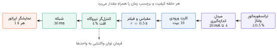
برنامه:
python -m companion.ch34.examples_a34.2.1 سیگنالِ ۴ تا ۲۰ میلیآمپر و صفرِ زنده
ایده. فرستندهٔ دوسیمه مقدار را به جریانی میانِ 4 و 20 mA تبدیل میکند. جریان در تمامِ حلقه یکی است، پس مقاومتِ کابل آن را تغییر نمیدهد. صفرِ برد 4 mA است و صفر نیست. به این صفرِ زنده میگویند. حلقهٔ قطعشده صفر میلیآمپر میدهد و از مقدارِ صفر جدا میشود. مقدارِ مهندسی و جریان چنین به هم مربوطاند:
\[ x = x_\text{lo} + \frac{I - 4}{16}\,(x_\text{hi} - x_\text{lo}) \tag{34.1}\]
در این رابطه \(I\) جریانِ حلقه بر حسبِ میلیآمپر است و \(x_\text{lo}\) و \(x_\text{hi}\) دو سرِ بردِ مهندسی.
def ma_to_eng(ma: float, lo: float, hi: float) -> float:
"""Engineering value of a 4-20 mA signal ranged lo..hi (live zero)."""
return lo + (ma - 4.0) / 16.0 * (hi - lo)
def eng_to_ma(x: float, lo: float, hi: float) -> float:
"""Loop current (mA) that represents x on a lo..hi range."""
return 4.0 + 16.0 * (x - lo) / (hi - lo)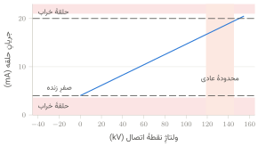
POC voltage on a 0-150 kV transducer (4-20 mA, live zero)
per unit kV mA reading kV
0.90 118.8 16.67 118.8 low limit
1.00 132.0 18.08 132.0 nominal
1.10 145.2 19.49 145.2 high limit
1.13 149.2 19.91 149.2 range end
1.20 158.4 20.90 154.7 fault swell
the range leaves 13 % above nominal: every normal and
emergency voltage is read, but a swell above 1.17 pu is
clipped by the module - a recorder for disturbances uses
its own wider channel (ch 27); 0 kV reads 4 mA, so a
dead loop (0 mA) is told apart from a dead lineمثال 34.1 (بردی که خطا را هم ببیند) پرسش. ولتاژِ 132 kV روی مبدلی با بردِ 0 تا 150 kV چند میلیآمپر است؟ برآمدگیِ 1.2 pu چگونه خوانده میشود؟
پاسخ. 18.08 mA. برآمدگیِ 1.2 pu به 20.90 mA میرسد، اما کارت در 20.5 mA اشباع میشود و 154.7 kV نشان میدهد.
تفسیر. برد همهٔ ولتاژهای عادی و اضطراری را میخواند. برای ثبتِ اختلالها، ثبات کانالِ پهنترِ خودش را دارد (فصلِ ۲۷). انتخابِ برد سازشی است میانِ وضوح و دیدنِ مقدارهای غیرعادی. وارسی: \(4 + 16 \times 132/150 = 18.08\).
34.2.2 بلندترین حلقه
ایده. منبعِ تغذیه باید در بیشترین جریانِ حلقه هنوز کمینهٔ ولتاژِ فرستنده را بدهد. مقاومتِ گیرنده و کابل بقیه را میگیرند:
\[ \ell_\text{max} = \frac{(V_\text{s} - V_\text{tx})/I_\text{max} - R_\text{rx}}{2\rho/A} \tag{34.2}\]
در این رابطه \(V_\text{s}\) ولتاژِ منبع است، \(V_\text{tx}\) کمینهٔ ولتاژِ فرستنده، \(I_\text{max}\) بیشترین جریان، \(R_\text{rx}\) مقاومتِ گیرنده، \(\rho\) مقاومتِ ویژهٔ مس و \(A\) سطحِ مقطعِ هر رشته.
def loop_max_length(v_supply: float, v_min_tx: float, r_receiver: float,
area_mm2: float, i_max_a: float = 0.022,
rho: float = 0.0175) -> float:
"""Longest two-wire loop (m, one way) that still leaves the transmitter
its minimum voltage at the highest loop current (copper, ohm mm2/m)."""
r_cable_max = (v_supply - v_min_tx) / i_max_a - r_receiver
return r_cable_max / (2 * rho / area_mm2)longest two-wire 4-20 mA loop: 24 V supply, transmitter >= 12 V,
250 ohm receiver, 22 mA (top of the fault-signalling range)
cable mm2 cable ohm allowed longest loop m (one way)
0.50 295 4,221
0.75 295 6,331
1.50 295 12,662
the 250 ohm receiver takes most of the voltage, not the
cable: even 0.5 mm2 reaches several kilometres - the
limit that bites first is noise pick-up and earthing,
not resistance34.2.3 وضوحِ مبدلِ آنالوگ به رقمی
what one converter count is worth (16 bits over 0-21 mA)
one count: 0.32 uA = 3.0 V on the 132 kV system (0.0023 %)
the counts are fine-grained; the chain's accuracy (next
lesson, +/-0.66 %) is about 290 times coarser - more
bits do not buy accuracy, only resolutionایده. یک گامِ مبدلِ ۱۶ بیتی کمتر از سه هزارم درصدِ ولتاژ است. اما دقتِ کلِ زنجیره صدها برابر درشتتر است. بیتِ بیشتر وضوح میخرد، نه دقت. اشتباهِ رایج این است که وضوحِ نمایشگر را دقتِ اندازهگیری بدانیم.
34.2.4 عدمِ قطعیتِ ولتاژِ نقطهٔ اتصال
ایده. هر حلقه یک حدِ خطا دارد. اگر حد را توزیعِ یکنواخت بدانیم، عدمِ قطعیتِ استانداردش حد تقسیم بر \(\sqrt{3}\) است. عدمِ قطعیتهای مستقل بهصورتِ ریشهٔ مجموعِ مربعها جمع میشوند (فصلِ ۲):
\[ u_\text{c} = \sqrt{\sum_i u_i^2}, \qquad U = k\,u_\text{c} \tag{34.3}\]
در این رابطه \(u_i\) عدمِ قطعیتِ استانداردِ هر حلقه است، \(u_\text{c}\) عدمِ قطعیتِ ترکیبی و \(U\) عدمِ قطعیتِ گسترشیافته با ضریبِ پوششِ \(k\).
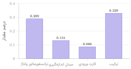
uncertainty of the POC voltage seen by the controller (at 132 kV)
source (limit taken as rectangular) standard u, % of reading
VT class 0.5 0.289
transducer 0.2 % of 150 kV span 0.131
input module 0.1 % of 21 mA 0.086
combined 0.329
expanded (k = 2): +/-0.66 % = +/-0.87 kV
with a class 0.2 VT: +/-0.39 %
the VT dominates; a voltage set-point step of 0.01 pu is
only about one and a half times the expanded uncertainty,
so the controller's accuracy claim rests on the VT class
and its calibration record (ch 2, GUM; ch 26, VTs)مثال 34.2 (ترانسفورماتورِ ولتاژ تعیین میکند) پرسش. عدمِ قطعیتِ گسترشیافتهٔ ولتاژی که کنترلگر میبیند چقدر است و کدام حلقه بیشترین سهم را دارد؟
پاسخ. ±0.66 %، یعنی ±0.87 kV در 132 kV. ترانسفورماتورِ ولتاژِ کلاسِ 0.5 بیشترین سهم را دارد. با کلاسِ 0.2 عدمِ قطعیت به ±0.39 % میرسد.
تفسیر. گامِ 0.01 pu در نقطهٔ تنظیمِ ولتاژ فقط یکونیم برابرِ عدمِ قطعیت است. پس ادعای دقتِ کنترلگر به کلاسِ ترانسفورماتورِ ولتاژ و سابقهٔ کالیبراسیونش تکیه دارد. نیروگاهِ P برای کنترلگر از هستهٔ کلاسِ 0.2 استفاده میکند (مثال 34.41). وارسی: \(\sqrt{0.289^2 + 0.131^2 + 0.086^2} = 0.329\).
34.2.5 دماسنجِ مقاومتیِ پلاتینی
ایده. مقاومتِ پلاتین با دما بالا میرود. رابطهٔ کالاندار–واندوزن برای دماهای بالای صفر چنین است (STD-147):
\[ R(t) = R_0\left(1 + A\,t + B\,t^2\right) \tag{34.4}\]
در این رابطه \(R_0 = 100\,\Omega\) است، \(A = 3.9083\times10^{-3}\) و \(B = -5.775\times10^{-7}\). در اتصالِ دوسیمه مقاومتِ دو رشته به سنسور افزوده میشود و دما را بیشتر نشان میدهد. اتصالِ سهسیمه آن را تقریباً حذف میکند و چهارسیمه کاملاً.
A_CVD, B_CVD, C_CVD = 3.9083e-3, -5.775e-7, -4.183e-12
def pt100_r(t: float, r0: float = 100.0) -> float:
"""Resistance (ohm) of a platinum sensor at t deg C
(Callendar-Van Dusen)."""
r = r0 * (1 + A_CVD * t + B_CVD * t * t)
if t < 0:
r += r0 * C_CVD * (t - 100) * t ** 3
return r
def pt100_t(r: float, r0: float = 100.0) -> float:
"""Temperature (deg C, >= 0) from the resistance of a platinum sensor."""
a, b, c = r0 * B_CVD, r0 * A_CVD, r0 - r
return (-b + math.sqrt(b * b - 4 * a * c)) / (2 * a)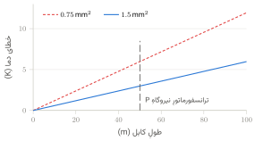
transformer winding temperature on a Pt100 (teaching)
at 95 deg C the sensor reads 136.61 ohm
each lead: 50 m of 0.75 mm2 copper = 1.17 ohm
two-wire: reads 101.1 deg C (+6.1 K; small-signal estimate +6.0 K)
three-wire, leads matched to 2 %: about +0.12 K
four-wire: no lead error
a 6 K error in a winding-temperature alarm
or a cooling-fan start is a design error, not noise:
long runs are three- or four-wire, or the transmitter
sits at the transformerمثال 34.3 (شش درجه از سیم) پرسش. دماسنجِ سیمپیچِ ترانسفورماتور با کابلِ 50 m و 0.75 mm² دوسیمه بسته شده است. در 95 °C چه میخواند؟
پاسخ. حدودِ 101 °C، یعنی 6 K بیشتر. با سهسیمه و رشتههای جور تا 2 %، خطا حدودِ 0.12 K است.
تفسیر. خطای 6 K در هشدارِ دمای سیمپیچ یا راهاندازیِ پنکههای خنککن خطای طراحی است، نه نوفه. مسیرهای بلند سهسیمه یا چهارسیمهاند، یا فرستنده کنارِ ترانسفورماتور نصب میشود (فصلِ ۲۵). وارسی: \(2 \times 1.17/0.39 = 6.0\,\text{K}\).
34.2.6 ترموکوپل و اتصالِ سرد
a thermocouple and its cold junction (linear teaching model)
hot end 320 deg C, terminals in a panel at 40 deg C
the junction pair makes 11.48 mV for the difference only
without cold-junction compensation the reading is 280 deg C
with it (panel temperature measured and added): 320 deg C
a thermocouple measures a difference; its extension wire
must be of the same alloys up to the compensated
terminals, or a new junction is made at every spliceایده. ترموکوپل اختلافِ دمای دو اتصال را میسنجد. اگر دمای اتصالِ سرد، یعنی پایانههای تابلو، اندازه گرفته و افزوده نشود، خواندن به اندازهٔ دمای تابلو کم است. سیمِ رابط تا پایانههای جبرانشده باید از همان آلیاژها باشد، وگرنه در هر اتصال یک ترموکوپلِ تازه ساخته میشود.
34.2.7 مقدارِ مؤثر روی چرخههای کامل و دگرنمایی
RMS over whole cycles and the danger of the wrong window
ten cycles (200 ms): RMS 1.0000 (true 1.0000)
windows of 12.5 ms (5/8 of a cycle): 0.922 to 1.073
a 50 Hz signal sampled at 49 Hz looks like 1 Hz
a window of whole cycles (or one that tracks frequency)
gives a steady value; a fractional window ripples with
where it starts; sampling below twice the highest
frequency folds it down - an anti-alias filter comes
before the converter (ch 3)ایده. مقدارِ مؤثر روی پنجرهای از چرخههای کامل ثابت است. پنجرهٔ ناقص با جای شروعش موج میزند، اینجا تا حدودِ ±8 %. نمونهبرداری با بسامدی کمتر از دو برابرِ بالاترین بسامد، آن را به بسامدی پایینتر تا میکند. پس فیلترِ ضدِدگرنمایی پیش از مبدل میآید (فصلِ ۳).
34.2.8 ساعتها و ترتیبِ رویدادها
clocks and the order of events (teaching)
GPS-disciplined time: about 1 us
an IED clock that lost its sync drifts 20 ppm: 1.73 s a day
two events 10 ms apart, recorded by two IEDs - one in
sync, one a day out of sync: their order can be off by 1.7 s
the sequence-of-events record is evidence only while
every clock is synchronised and says so: each time stamp
carries a 'clock synchronised' flag, and a lost sync is
an alarm, not a footnote (ch 26, lesson E; ch 35)مثال 34.4 (یکونیم ثانیه در روز) پرسش. رلهٔ هوشمندی که همگامسازیاش را از دست داده با رانشِ 20 ppm در یک روز چقدر جابهجا میشود؟ این برای دنبالهٔ رویدادها چه معنایی دارد؟
پاسخ. 1.73 s. دو رویدادِ ده میلیثانیهای از دو دستگاه ممکن است به ترتیبِ نادرست ثبت شوند.
تفسیر. دنبالهٔ رویدادها فقط وقتی شاهد است که همهٔ ساعتها همگام باشند و این را اعلام کنند. هر برچسبِ زمان پرچمِ «همگام» دارد و از دست رفتنِ همگامی هشدار است (فصلِ ۲۶). همگامسازی میتواند با گیرندهٔ ماهوارهای و پروتکلِ زمانِ دقیق انجام شود (STD-150، فصلِ ۳۵). وارسی: \(20\times10^{-6} \times 86{,}400 = 1.73\,\text{s}\).
34.2.9 فاصلهٔ کالیبراسیون
calibration interval from drift (teaching, % of reading or span)
instrument tolerance drift/yr as-left interval yr
POC voltage transducer 0.20 0.05 0.05 3.0
pyranometer (ch 12) 2.00 0.50 0.30 3.4
anemometer (ch 13) 1.00 0.20 0.20 4.0
Pt100 transmitter 0.50 0.10 0.10 4.0
the interval is the time the drift takes to eat the
margin left after calibration; the records of as-found
values show the real drift and set the next interval -
the makers' and the lab's procedures govern (ch 48)ایده. فاصلهٔ کالیبراسیون زمانی است که رانش حاشیهٔ پس از کالیبراسیون را میخورد: رواداری منهای خطای پس از تنظیم، تقسیم بر رانشِ سالانه. سابقهٔ مقدارهای «پیش از تنظیم» رانشِ واقعی را نشان میدهد و فاصلهٔ بعدی را تعیین میکند. روشهای سازنده و آزمایشگاه حاکماند (فصلِ ۴۸).
34.2.10 فیلتر: نوفهٔ کمتر، تأخیرِ بیشتر
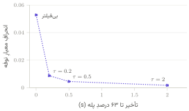
a first-order filter: less noise, more delay (step at 2 s, noise sd 0.05)
tau s noise sd after time to 63 % s
0.0 0.0528 0.00
0.2 0.0087 0.20
0.5 0.0045 0.50
2.0 0.0017 2.00
each filter in the chain adds its delay to the loop: the
0.5 s of the chain is the delay chapter 20 found tolerable
for the tuned plant controller; a 2 s filter would push
the loop toward the oscillation chapter 20 showedایده. فیلترِ پایینگذر نوفه را کم میکند و تأخیر میافزاید. با ثابتِ زمانیِ 0.5 s نوفه حدودِ دوازده برابر کم میشود و پاسخ نیمثانیه دیر میرسد. هر فیلتر در زنجیره تأخیرش را به حلقهٔ کنترل اضافه میکند. فصلِ ۲۰ نشان داد کنترلگرِ تنظیمشده تا نیمثانیه تأخیر را تحمل میکند.
34.2.11 زمین، جداسازی و نوفه
ایده. حلقهٔ ۴ تا ۲۰ میلیآمپر کابلهای بلند را تحمل میکند، اما نوفه و زمین را نه. سه قاعده بیشترِ مشکلها را حل میکنند:
- شیلدِ کابل فقط در یک سر، معمولاً در تابلو، زمین میشود تا جریانِ گردشی در آن نچرخد.
- مدار یا در کارت جدا میشود یا با جداکنندهٔ سیگنال. اختلافِ پتانسیلِ زمینِ میدان و تابلو در هنگامِ خطا یا صاعقه به چند صد ولت میرسد (فصلِ ۲۶).
- کابلهای سیگنال از کابلهای قدرت فاصله و سینیِ جدا دارند.
این قاعدهها در مشخصاتِ سیمکشی نوشته میشوند و در وارسیِ حلقه آزموده میشوند (بخش 34.4.7).
- چرا صفرِ برد 4 mA است، نه صفر؟
- معادلهٔ 34.1 را توضیح دهید و 8 mA را روی بردِ 0 تا 150 kV بخوانید.
- چرا در حلقهٔ جریان، مقاومتِ کابل خواندن را تغییر نمیدهد؟
- چرا بیتِ بیشتر دقت نمیخرد؟
- سهمِ ترانسفورماتورِ ولتاژ در عدمِ قطعیتِ زنجیره چقدر است؟
- اتصالِ سهسیمه چگونه خطای رشتهها را حذف میکند؟
- چرا ترموکوپل به جبرانِ اتصالِ سرد نیاز دارد؟
- چرا پنجرهٔ مقدارِ مؤثر باید چرخههای کامل داشته باشد؟
- پرچمِ «همگام» روی برچسبِ زمان برای چیست؟
- فیلترِ 2 s چه هزینهای برای حلقهٔ کنترل دارد؟
34.2.12 خطای فاز و دقتِ توانِ واکنشی
ایده. توانِ اکتیو و واکنشی از حاصلضربِ ولتاژ و جریان و زاویهٔ میانشان ساخته میشوند. اگر ترانسفورماتورهای جریان و ولتاژ زاویه را به اندازهٔ \(\delta\) جابهجا کنند، خطای نسبیِ هر کدام چنین است:
\[ \begin{aligned} \varepsilon_P &= \frac{\cos(\varphi - \delta)}{\cos\varphi} - 1 \\ \varepsilon_Q &= \frac{\sin(\varphi - \delta)}{\sin\varphi} - 1 \end{aligned} \tag{34.5}\]
در این رابطه \(\varphi\) زاویهٔ ضریبِ توان است. نزدیکِ ضریبِ توانِ یک، \(\sin\varphi\) کوچک است و خطای توانِ واکنشی بزرگ میشود.
برنامه:
python -m companion.ch34.examples_m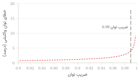
P and Q errors from a 20-minute phase error of the CT/VT pair (teaching)
power factor phi deg error in P % error in Q %
0.800 36.87 0.43 -0.8
0.900 25.84 0.28 -1.2
0.950 18.19 0.19 -1.8
0.990 8.11 0.08 -4.1
0.999 2.56 0.02 -13.0
near unity power factor the active power barely notices
the phase error, but the reactive power, a small number,
is off by 4 % at 0.99 and 13 % at 0.999 - Q at the POC is
measured with cores whose phase displacement is known,
and a Q requirement near zero is judged in Mvar, not %مثال 34.5 (توانِ کوچک، خطای بزرگ) پرسش. خطای فازِ ۲۰ دقیقهای در ضریبِ توانِ 0.99 و 0.999 چه خطایی در توانِ واکنشی میدهد؟
پاسخ. حدودِ 4 % و 13 %. خطای توانِ اکتیو کمتر از یکدهم درصد است.
تفسیر. توانِ واکنشیِ نقطهٔ اتصال با هستههایی اندازه گرفته میشود که جابهجاییِ فازشان معلوم است. الزامی که توانِ واکنشیِ نزدیکِ صفر میخواهد با مگاوار سنجیده میشود، نه با درصد (فصلِ ۲۸). وارسی: \(\varphi = 8.11^\circ\)، \(\sin(7.78^\circ)/\sin(8.11^\circ) - 1 = -0.041\).
34.2.13 ولتاژِ حالتِ مشترک
common-mode voltage on an analogue input (teaching)
50 V between field and panel earth during an earth fault
rejection dB error mV error % of a 4 V span
60 50.00 1.250
90 1.58 0.040
120 0.05 0.001
an isolated input with 120 dB rejection keeps the fault
out of the reading; a non-isolated input wired at both
ends would carry the fault current itself - the earthing
rules of lesson A apply before any rejection figureایده. در خطای زمین، زمینِ میدان و زمینِ تابلو دهها ولت اختلاف پیدا میکنند. ورودیِ جداشده با نسبتِ حذفِ حالتِ مشترکِ بالا این ولتاژ را از خواندن بیرون نگه میدارد. خطا برابرِ ولتاژِ حالتِ مشترک تقسیم بر \(10^{\text{CMRR}/20}\) است. ورودیِ جدانشدهای که در دو سر به زمین وصل شده باشد جریانِ خطا را از خودش میگذراند. پس قاعدههای زمینِ بخش 34.2.11 پیش از هر عددِ حذف میآیند.
34.2.14 آهنگِ تغییرِ بسامد و پنجرهٔ آن
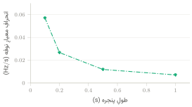
rate of change of frequency from a noisy frequency (true -0.5 Hz/s)
window s noise sd Hz/s delay s quiet samples over 0.1 Hz/s
0.1 0.057 0.05 10.0 %
0.2 0.027 0.10 0.0 %
0.5 0.012 0.25 0.0 %
1.0 0.007 0.50 0.0 %
with a sensitive 0.1 Hz/s trigger, the shortest window
trips on noise alone in a share of quiet cycles; a long
window is calm but late - the window and the trigger
level are chosen together, with a time delay, and
written in the setting file (ch 26, ch 28)ایده. آهنگِ تغییرِ بسامد اختلافِ دو بسامد تقسیم بر طولِ پنجره است. پنجرهٔ کوتاه نوفه را بزرگ میکند و پنجرهٔ بلند تأخیر میافزاید. با پنجرهٔ 0.1 s، ده درصدِ چرخههای آرام از آستانهٔ حساسِ 0.1 Hz/s میگذرند. پنجره، آستانه و تأخیرِ زمانی با هم انتخاب و در پروندهٔ تنظیم نوشته میشوند (فصلهای ۲۶ و ۲۸).
34.2.15 فاصلهٔ کالیبراسیون از سابقهها
calibration interval from as-found records (40 transmitters, synthetic)
drift 0.071 +/- 0.027 % a year; tolerance 0.5 %, as-left 0.1 %
interval yr share still in tolerance at its end
2 100.0 %
3 98.9 %
4 86.0 %
5 63.6 %
6 44.4 %
for 95 % in tolerance at the end, the interval is 3 years
the mean drift alone would allow longer; the spread of
the fleet sets the interval - the records of as-found
values are what lengthen it, or shorten it, next timeمثال 34.6 (پراکندگی تعیین میکند، نه میانگین) پرسش. ۴۰ فرستنده با رانشِ 0.071 و انحرافِ معیارِ 0.027 % در سال کار میکنند. اگر 95 % آنها باید در پایانِ فاصله درونِ رواداری باشند، فاصلهٔ کالیبراسیون چقدر است؟
پاسخ. سه سال. در چهار سال فقط 86 % درونِ رواداری میمانند.
تفسیر. رانشِ میانگین بهتنهایی حدودِ ۵٫۶ سال اجازه میداد. پراکندگیِ ناوگان فاصله را تعیین میکند. سابقهٔ مقدارهای «پیش از تنظیم» آن را در دورِ بعد بلندتر یا کوتاهتر میکند (بخش 34.2.9). وارسی: \((0.5 - 0.1)/0.071 = 5.6\) سال.
- معادلهٔ 34.5 را توضیح دهید.
- چرا خطای فاز توانِ واکنشی را بیش از توانِ اکتیو خراب میکند؟
- نسبتِ حذفِ حالتِ مشترکِ 90 dB با 50 V چه خطایی میدهد؟
- چرا پنجرهٔ کوتاهِ آهنگِ تغییرِ بسامد پرنوفه است؟
- چرا فاصلهٔ کالیبراسیون از پراکندگی تعیین میشود؟
34.2.16 درصدِ گستره یا درصدِ مقدار
ایده. دادهبرگِ یک فرستنده دقت را به یکی از دو شکل میدهد: درصدی از گسترهٔ اندازهگیری (به انگلیسی span، یعنی بالای برد منهای پایینِ آن) یا درصدی از مقدارِ خواندهشده. شکلِ نخست یک عددِ ثابت به یکای کمیت است. در خواندنهای کوچک، همین عددِ ثابت سهمِ بزرگی از مقدار میشود:
\[ \varepsilon_\text{r}(x) = \varepsilon_\text{s}\,\frac{x_\text{hi} - x_\text{lo}}{x} \tag{34.6}\]
در این رابطه \(\varepsilon_\text{s}\) دقت به درصدِ گستره و \(\varepsilon_\text{r}\) خطا به درصدِ مقدار است.
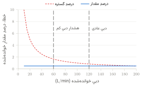
a coolant-flow transmitter 0-200 L/min, 0.5 % (teaching)
reading L/min error if % of span error if % of reading
20 5.00 % 0.50 %
50 2.00 % 0.50 %
100 1.00 % 0.50 %
200 0.50 % 0.50 %
a span figure is a fixed number of L/min: at a tenth of
the range it is 5 % of what is read; the range is chosen
so that normal flow (120 L/min) and the low-flow alarm
(60 L/min) both sit in the upper half, where the
figure on the data sheet is what the plant getsمثال 34.7 (دبیِ کمِ مایعِ خنککننده) پرسش. فرستندهٔ دبیِ مایعِ خنککنندهٔ ظرفِ باتری برد 0–200 L/min و دقتِ 0.5 % گستره دارد. هشدارِ دبیِ کم روی 60 L/min است. خطا در نقطهٔ هشدار چند درصدِ مقدار است؟ (دادهها آموزشیاند، A-385، سناریوی S1.)
پاسخ. خطای ثابت \(0.005 \times 200 = 1\,\text{L/min}\) است. در نقطهٔ هشدار این برابرِ \(1/60 = 1.7\,\%\) مقدار است، بیش از سه برابرِ عددِ دادهبرگ.
تفسیر. برد طوری انتخاب میشود که هم نقطهٔ کار و هم نقطهٔ هشدار در نیمهٔ بالایی بنشینند. اگر برد را برای «اطمینان» دو برابر بگیریم، خطای نقطهٔ هشدار هم دو برابر میشود. وارسی: در بالای برد، دو شکلِ دقت برابرند: \(0.5\,\%\).
34.2.17 ترانسفورماتورِ جریان در بارِ کم
ایده. کلاسِ دقتِ یک هستهٔ اندازهگیری فقط در بازهای از جریان تعریف شده است. کلاسهای معمولی از چند درصدِ جریانِ نامی به بالا تعریف شدهاند. کلاسهای با بردِ گسترده (با پسوندِ S) تا حدودِ یک درصد پایین میروند. حدهای دقیقِ هر کلاس را استانداردِ ترانسفورماتورهای جریان (STD-038) میدهد. شکلِ زیر فقط شکلِ این حدها را برای آموزش نشان میدهد.
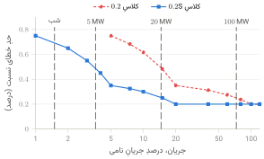
132 kV metering core 600/1 A at the plant's operating points
point I A % rated class 0.2 0.2S
night: own use and 2 Mvar 8.8 1.5 undef. 0.70 %
low wind, no sun: 5 MW 21.9 3.6 undef. 0.49 %
20 MW 87.5 14.6 0.49 % 0.25 %
60 MW 262.4 43.7 0.31 % 0.20 %
export limit 100 MW 437.4 72.9 0.25 % 0.20 %
a plant that runs for hours at a few per cent of its
export - every calm night - spends those hours where an
ordinary class is not defined; the metering and control
core is specified as an extended-range class (or with a
lower ratio), while the protection core keeps the ratio
the fault currents need (ch 26)مثال 34.8 (شبِ آرام) پرسش. هستهٔ اندازهگیریِ بی E1 نسبتِ 600/1 A دارد. نیروگاه در شبِ آرام 0.3 MW مصرفِ داخلی و 2 Mvar توانِ واکنشی دارد. جریان چند درصدِ جریانِ نامی است و کدام کلاس در این نقطه تعریف شده است؟
پاسخ. توانِ ظاهری \(\sqrt{0.3^2 + 2^2} = 2.02\,\text{MVA}\) و جریان \(2.02 \times 10^6 / (\sqrt{3} \times 132\,000) = 8.8\,\text{A}\) است، یعنی 1.5 % جریانِ نامی. کلاسِ معمولی در این نقطه تعریف نشده است. کلاسِ با بردِ گسترده حدودِ 0.7 % حد دارد.
تفسیر. نیروگاهِ بادی–خورشیدی ساعتهای زیادی در بارِ کم کار میکند. پس هستهٔ اندازهگیری و کنترل با کلاسِ با بردِ گسترده یا نسبتِ کوچکتر سفارش داده میشود. هستهٔ حفاظتی نسبتی را نگه میدارد که جریانهای خطا لازم دارند (فصلِ ۲۶). وارسی: در 100 MW جریان 437 A و 73 % نامی است و هر دو کلاس در آن تعریف شدهاند.
34.2.18 بارِ ثانویهٔ ترانسفورماتورِ جریان
burden of a CT secondary run of 150 m in 2.5 mm2 copper
loop resistance 2 x 150 m: 2.10 ohm
1 A secondary: leads 2.1 VA + devices 1.0 VA = 3.1 VA
5 A secondary: leads 52.5 VA + devices 1.0 VA = 53.5 VA
against a rated burden of 5 VA, the 1 A secondary fits
and the 5 A one needs ten times the copper; the leads are
part of the burden, and the class holds only over the
burden range the maker states - too little burden can
matter too, so the real burden is calculated and written
on the CT scheduleایده. بارِ ثانویه (به انگلیسی burden) توانی است که مدارِ ثانویه از ترانسفورماتورِ جریان میکشد: \(S = I^2 R\). سیمهای رفت و برگشت بخشی از این بارند. با جریانِ ثانویهٔ 5 A، بارِ سیمها ۲۵ برابرِ ثانویهٔ 1 A است. برای همین، مسیرهای بلندِ پستِ 132 kV ثانویهٔ 1 A دارند. کلاس فقط در بازهای از بار برقرار است که سازنده اعلام میکند. پس بارِ واقعی، با سیمها، محاسبه و در فهرستِ ترانسفورماتورهای جریان نوشته میشود.
34.2.19 خودگرماییِ دماسنجِ مقاومتی
self-heating of a Pt100 at 95 C (teaching coefficients)
resistance at 95 C: 136.6 ohm
current mA power mW error in still air in an oil pocket
1 0.14 0.07 K 0.007 K
2 0.55 0.27 K 0.027 K
5 3.42 1.71 K 0.171 K
(0.5 K/mW in still air, 0.05 K/mW in oil - teaching)
the sensor warms itself by I^2 R and reads high; at 1 mA
the error is small anywhere, at 5 mA in still air it
exceeds a whole class B tolerance - the input module's
measuring current belongs on the sensor's data sheetایده. کارتِ ورودی برای خواندنِ مقاومت جریانی از حسگر میگذراند. این جریان توانِ \(P_\text{sh} = I^2 R\) را در حسگر گرما میکند. حسگر به اندازهٔ \(\Delta T = E_\text{sh} P_\text{sh}\) گرمتر از محیط میشود و بالاتر میخواند. \(E_\text{sh}\)، ضریبِ خودگرمایی، به محیط بستگی دارد. در هوای ساکن بزرگ است و در روغن یا غلافِ پرشده کوچک. با جریانِ 1 mA خطا همهجا کوچک است. با 5 mA در هوای ساکن، این خطا (1.7 K) از کلِ رواداریِ کلاسِ B در 95 °C، یعنی ±0.78 K، بیشتر است. وارسی: \((5 \times 10^{-3})^2 \times 136.6 = 3.42\,\text{mW}\) و \(0.5 \times 3.42 = 1.7\,\text{K}\).
34.2.20 لرزشِ کنتاکت و برچسبِ زمان
ایده. کنتاکتِ کمکیِ کلید هنگامِ بسته شدن چند بار باز و بسته میشود. این لرزشِ کنتاکت چند میلیثانیه طول میکشد. ورودی برای آنکه یک رخداد را چند رخداد نشمارد، تغییر را فقط وقتی میپذیرد که زمانِ معینی پایدار مانده باشد. پرسشِ مهم این است که برچسبِ زمان کجا زده میشود.
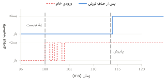
a breaker auxiliary contact closing at 100.0 ms with bounce
raw input: 7 edges in 3.6 ms
10 ms debounce: 1 edge, accepted at 113.6 ms
stamp taken at acceptance: 13.6 ms late
stamp taken at the first edge, confirmed after 10 ms:
0.0 ms late, and still one event
a sequence-of-events input filters the bounce and keeps
the time of the first edge; an ordinary input that
stamps when it accepts adds its filter to every eventمثال 34.9 (سیزده میلیثانیه دیرتر) پرسش. کنتاکت در 100.0 ms بسته میشود و تا 103.6 ms میلرزد. ورودی با صافیِ 10 ms کار میکند. اگر برچسبِ زمان هنگامِ پذیرش زده شود، چقدر دیر است؟ ورودیِ دنبالهٔ رویدادها چه میکند؟
پاسخ. پذیرش در \(103.6 + 10 = 113.6\,\text{ms}\) است، یعنی 13.6 ms دیرتر از رخداد. ورودیِ دنبالهٔ رویدادها زمانِ لبهٔ نخست را نگه میدارد و پس از 10 ms پایداری آن را تأیید میکند. برچسب درست است و رخداد یکی میماند.
تفسیر. دو کلید که با فاصلهٔ چند میلیثانیه باز شدهاند، با ورودیِ معمولی ممکن است جابهجا ثبت شوند. ترتیبِ رخدادها در بررسیِ یک خطا همان چیزی است که دنبالش هستیم (بخش 34.3.11). وارسی: شمارِ لبههای خام ۷ است و پس از صافی ۱.
34.2.21 جریانِ نشتی روی ورودیِ رقمی
a 110 V DC digital input with an open contact (teaching)
input resistance 36.7 kohm; on above 2.0 mA, off below 1.5 mA
leakage across the contact current mA reads
1000 kohm 0.11 off
100 kohm 0.80 off
50 kohm 1.27 off
20 kohm 1.94 undefined
10 kohm 2.36 ON (false)
230 V AC on another core of the same 500 m cable
(100 nF/km between cores): 3.6 mA - above the on level
damp terminals or a mixed AC/DC multicore can make an
open contact read closed; AC and DC never share a cable,
terminal boxes are kept dry, and inputs with a threshold
well above the leakage are chosen for long runsایده. ورودیِ رقمیِ 110 V وقتی «روشن» است که جریانش از آستانه بگذرد. اگر رطوبتِ جعبهٔ اتصال مسیری با مقاومتِ چند ده کیلواهم موازیِ کنتاکتِ باز بسازد، جریانِ نشتی ورودی را به ناحیهٔ نامعین یا حتی «روشن» میبرد. خطرِ دوم کابلِ چندرشتهای است که در یک رشتهاش 230 V متناوب باشد. ظرفیتِ میانِ رشتهها در 500 m جریانی بیش از آستانهٔ روشن شدن به ورودی میرساند. قاعدهها سادهاند: متناوب و مستقیم هرگز در یک کابل نمیآیند، جعبهها خشک میمانند، و برای مسیرهای بلند ورودیای انتخاب میشود که آستانهاش بسیار بالاتر از جریانِ نشتی باشد. وارسی: \(2\pi \times 50 \times 50\,\text{nF} \times 230\,\text{V} = 3.6\,\text{mA}\).
34.2.22 سه حسگر و میانهٔ آنها
three temperature sensors; C drifts to +5 K over 10 min from
minute 30 (synthetic, noise 0.2 K each)
error of the average once C has drifted: 1.67 K
error of the median once C has drifted: 0.16 K
deviation alarm |A - B| > 3 x sqrt(2) x sigma, healthy pair:
theory 9.7 a hour at 1 s; simulated over a day 9.3 a hour
with 10 s of persistence: 0 in the day
sensor C flagged (10 s held) 146 s after it began to drift,
at about 1.22 K off
the median ignores one wild sensor where the average
follows it a third of the way; the deviation alarm that
tells which one drifted needs a threshold from the
combined uncertainty and a persistence time, or it
chatters on noise; real noise is correlated from sample
to sample, so the persistence is tuned on recorded dataمثال 34.10 (یک حسگرِ سرکش) پرسش. سه حسگرِ دمای روغن با نوفهٔ 0.2 K کار میکنند و یکی از آنها در ده دقیقه 5 K رانش پیدا میکند. خطای میانگینِ سه حسگر و خطای میانهٔ آنها چقدر است؟ هشدارِ ناهمخوانیِ دو حسگر با آستانهٔ \(3\sqrt{2}\,\sigma\) چند بار در ساعت بهغلط به صدا درمیآید؟ (دادهها ساختگیاند.)
پاسخ. خطای میانگین 1.67 K است، یعنی یکسومِ رانش. خطای میانه 0.16 K است، در حدِ نوفه. هشدارِ بیتأخیر در نظریه ۹٫۷ بار در ساعت بهغلط به صدا درمیآید و در شبیهسازیِ یکروزه ۹٫۳ بار. با ده ثانیه ماندگاری، هیچ هشدارِ نادرستی در روز نماند. حسگرِ رانشکرده پس از 146 s شناخته شد، وقتی حدودِ 1.2 K دور شده بود.
تفسیر. انتخابِ میانه یک حسگرِ سرکش را نادیده میگیرد. هشدارِ ناهمخوانی میگوید کدام حسگر سرکش است. آستانهٔ آن از عدمِ قطعیتِ ترکیبی و زمانِ ماندگاری از دادههای ضبطشده تعیین میشود، زیرا نوفهٔ واقعی از نمونهای به نمونهٔ بعد همبسته است. وارسی: \(2\,(1 - \Phi(3)) \times 3600 = 2 \times 0.00135 \times 3600 = 9.7\).
34.2.23 تأخیرِ حسگر در غلاف
a temperature sensor in a pocket, time constant 120 s (teaching)
oil warming at 1 K a minute: the reading lags by 2.0 K
an alarm at 85 C is raised 120 s after the oil reaches it
after a step the reading reaches 63 % in 120 s, 95 % in 360 s
the pocket and the paste in it set the lag; a
protection-grade temperature trip is set with the lag
in mind, and the pocket is part of the instrument's
installation drawingایده. حسگرِ دمایی که در غلافِ دماسنج نشسته مانندِ یک صافیِ مرتبهٔ اول رفتار میکند (بخش 34.2.10). اگر دما با آهنگِ ثابتِ \(r\) بالا برود، خواندن به اندازهٔ \(\tau r\) عقب میماند. با \(\tau = 120\,\text{s}\) و یک کلوین در دقیقه، این عقبماندگی 2 K است و هشدار دو دقیقه دیرتر میآید. غلاف و خمیرِ رسانای درونش جزوِ ابزارند و در نقشهٔ نصب نوشته میشوند. آستانهٔ قطعِ دمایی با در نظر گرفتنِ این تأخیر تنظیم میشود.
- معادلهٔ 34.6 را توضیح دهید و بگویید چرا برد را «برای اطمینان» بزرگ نمیگیریم.
- چرا هستهٔ اندازهگیریِ کلاسِ معمولی در شبهای آرام تعریفنشده است؟
- چرا ثانویهٔ 1 A برای مسیرهای بلند انتخاب میشود؟
- خودگرمایی را با یک عدد توضیح دهید.
- ورودیِ دنبالهٔ رویدادها با لرزشِ کنتاکت چه میکند؟
- دو راهی را بگویید که یک کنتاکتِ باز را «بسته» میخوانند.
- چرا میانهٔ سه حسگر از میانگینشان مطمئنتر است؟
- آستانه و زمانِ ماندگاریِ هشدارِ ناهمخوانی از کجا میآیند؟
- تأخیرِ حسگر در غلاف در دمای روبهافزایش چقدر است؟
34.3 ب. معماریِ سامانهٔ کنترل
سامانهٔ کنترلِ نیروگاه چند ماشین است که هر کدام ساعت و وظیفهٔ خودش را دارد: رلههای حفاظتی، کنترلگرهای تجهیزات، کنترلگرِ منطقیِ برنامهپذیر (به انگلیسی PLC)، پایانهٔ دوردست (به انگلیسی RTU)، کنترلگرِ نیروگاه، سامانهٔ مدیریتِ انرژی و پایش. این بخش لایهها و سرعتشان را میچیند، کنترلگر را بهعنوانِ ماشینی نمونهبردار میبیند، و اینترلاکها، نگهبانِ زمانی، رفتارِ ایمن در خرابی و افزونگی را با عدد میسنجد. حلقههای کنترل، اولویتها و حالتِ پشتیبانِ فصلِ ۲۰ تکرار نمیشوند. اینجا همانها از نگاهِ اجرا دیده میشوند (A-387).
برنامه:
python -m companion.ch34.examples_b34.3.1 لایهها و سرعتشان
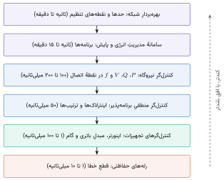
layers of Plant P's control and how fast each one acts (teaching)
layer cycle job
protection relays (ch 26) 1-10 ms trip on faults
equipment controllers 1-100 ms inverter, PCS, pitch
PLC / RTU 50 ms scan interlocks, sequences, I/O
plant controller (PPC) 100-200 ms P, Q, V, f at the POC
EMS / SCADA 1 s - 15 min schedules, operators
grid operator s - minutes limits, set points
each layer is about ten times slower than the one below
it and trusts it to do its own job: a PLC never replaces
protection, and the PPC never drives an inverter's
current loop - it sends set points the inverter's own
controller follows (ch 9, ch 20)ایده. هر لایه حدودِ ده برابر کندتر از لایهٔ زیرین است و به آن اعتماد میکند که کارِ خودش را انجام دهد. کنترلگرِ منطقی هرگز جای حفاظت را نمیگیرد. کنترلگرِ نیروگاه هم حلقهٔ جریانِ اینورتر را نمیراند. نقطهٔ تنظیم میفرستد و کنترلگرِ خودِ اینورتر آن را دنبال میکند (فصلهای ۹ و ۲۰).
34.3.2 بودجهٔ پاسخ
ایده. تغییری در میدان ممکن است درست پس از خواندنِ ورودیها برسد. پس بدترین زمان تا خروجی این است:
\[ t_\text{max} = t_\text{in} + 2\,t_\text{scan} + t_\text{out} + t_\text{net} \tag{34.7}\]
در این رابطه \(t_\text{in}\) فیلترِ ورودی است، \(t_\text{scan}\) زمانِ پویش، \(t_\text{out}\) بهروزرسانیِ خروجی و \(t_\text{net}\) تأخیرِ شبکه.
def response_budget(input_ms: float, scan_ms: float, output_ms: float,
comms_ms: float = 0.0) -> float:
"""Worst-case time from a field change to an output: input filter, up to
two scans (the change just missed one), output update, network."""
return input_ms + 2 * scan_ms + output_ms + comms_msworst-case response through the PLC (input + 2 scans + output + network)
20 + 2 x 50 + 10 + 30 = 160 ms
function needs ms PLC fits?
trip a breaker on a fault 100 NO - protection
stop HVAC on a fire alarm 1000 yes
fast frequency response (hypothetical) 500 yes
follow an export-limit set point 5000 yes
the change may arrive just after an input scan, so two
scans count; a fault trip belongs to protection relays
wired to the breaker, the rest fits the PLC with margin34.3.3 حلقهٔ نمونهبردار
ایده. فصلِ ۲۰ نشان داد که نگهداشتنِ فرمان در طولِ دوره بهطورِ میانگین مانندِ تأخیرِ نیمِ دوره است (بخش 20.2.5). در اجرا یک تأخیرِ دیگر هم هست: کنترلگرِ رقمی در هر چرخه خطا را میخواند، خروجی را حساب میکند و آن را در چرخهٔ بعد اعمال میکند. شکلِ سرعتیِ کنترلگرِ تناسبی–انتگرالی در هر چرخهٔ \(\Delta t\) چنین است:
\[ u_k = u_{k-1} + K_\text{p}\,(e_k - e_{k-1}) + K_\text{i}\,\Delta t\,e_k \tag{34.8}\]
در این رابطه \(u_k\) خروجی و \(e_k\) خطا در چرخهٔ \(k\) است. روشِ ذوزنقهای (توستین) بهجای \(e_k\) میانگینِ \(e_k\) و \(e_{k-1}\) را میگذارد.
def pi_loop(kp: float, ki: float, tau: float, dt: float, n: int,
method: str = "euler", delay: int = 0,
sp: float = 1.0) -> np.ndarray:
"""Step response of a sampled PI controller on a first-order plant
(time constant tau) with a dead time of `delay` samples."""
a = math.exp(-dt / tau)
y = np.zeros(n)
u_hist = [0.0] * (delay + 1)
u, e_prev = 0.0, sp
for k in range(1, n):
e = sp - y[k - 1]
integ = ki * dt * ((e + e_prev) / 2 if method == "tustin" else e)
u = u + kp * (e - e_prev) + integ
e_prev = e
u_hist.append(u)
y[k] = a * y[k - 1] + (1 - a) * u_hist[-1 - delay]
return y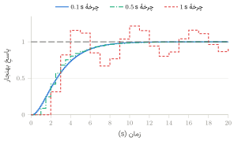
the tuned PI (kp 1.5, ki 0.8; park tau 2 s, ch 20) at four controller
cycles, each output applied one cycle after its sample
dt s method overshoot % settled (2 %) s
0.1 euler 0.0 9.0
0.1 tustin 0.0 8.8
0.5 euler 0.0 9.5
0.5 tustin 0.0 8.0
1.0 euler 21.6 > 20
1.0 tustin 27.9 > 20
2.0 euler unstable -
2.0 tustin unstable -
while the cycle is short against the park's time constant
(dt/tau 0.05 to 0.25) the loop keeps the shape it was
tuned for; at dt = tau/2 the one-cycle lag gives 22-28 %
overshoot, at dt = tau the loop is unstable - ten or more
cycles per time constant, and the tuning is checked at
the real cycle with its computing delayمثال 34.11 (ده چرخه در هر ثابتِ زمانی) پرسش. کنترلگرِ تنظیمشدهٔ فصلِ ۲۰ (\(K_\text{p} = 1.5\)، \(K_\text{i} = 0.8\)) با چرخهٔ 1 s چه رفتاری دارد؟
پاسخ. 22 تا 28 % فراجهش، و تا بیست ثانیه آرام نمیشود. با چرخهٔ 2 s ناپایدار است.
تفسیر. تأخیرِ یکچرخهای محاسبه در چرخههای بلند به تأخیرِ بزرگی تبدیل میشود. قاعدهٔ سرانگشتی ده چرخه یا بیشتر در هر ثابتِ زمانیِ فرایند است. تنظیم در چرخهٔ واقعی، با تأخیرِ محاسبهاش، وارسی میشود. وارسی: \(\Delta t/\tau = 1/2\)، بیرون از قاعدهٔ \(\Delta t/\tau \le 0.1\).
34.3.4 شرطِ اجازهٔ بستنِ کلید
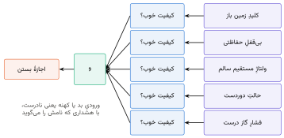
close permissive of a 33 kV feeder breaker (AND of five conditions)
earth switch open, no lockout, DC healthy, remote mode, gas OK
combinations of the five inputs: 32; close allowed in 1
each input has a quality: 'bad' or 'stale' counts as false
scenario result
all true, all good close allowed
gas pressure input bad (wire broken) BLOCKED, alarm
remote mode stale (link lost) BLOCKED, local only
a permissive fails safe: an input it cannot trust blocks
the action and says which input, so the operator is not
left guessing; the interlock that protects people (the
earth switch) is also mechanical, not only in the PLCایده. شرطِ اجازه فقط وقتی کار را مجاز میکند که همهٔ شرطها درست و همهٔ ورودیها قابلِ اعتماد باشند. ورودیِ بد یا کهنه نادرست شمرده میشود و هشداری میدهد که نامش را میگوید. اینترلاکی که از مردم محافظت میکند، مانندِ کلیدِ زمین، مکانیکی هم هست و فقط به برنامه تکیه ندارد (فصلِ ۲۳).
34.3.5 نگهبانِ زمانی و ضربان
ایده. کنترلگرِ نیروگاه هر ثانیه یک ضربان به مبدلِ باتری میفرستد. اگر \(n\) ضربان پشتِ سرِ هم گم شوند، مبدل به حالتِ پشتیبان میرود. اگر گمشدنها مستقل و با احتمالِ \(p\) باشند، شمارِ قطعهای کاذب در سال چنین است:
\[ N_\text{false} = p^{\,n}\,N_\text{s} \tag{34.9}\]
در این رابطه \(N_\text{s}\) شمارِ ثانیههای سال است.
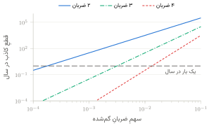
heartbeat watchdog between the PPC and a battery PCS (1 beat a second)
fallback after 3 missed beats in a row; losses independent
lost beats false timeouts a year time to detect a real loss
1.00 % 31.54 3 s
0.10 % 0.03 3 s
0.01 % 0.00 3 s
a network that loses 1 % of packets trips the fallback
about thirty times a year for nothing; at 0.1 % it is
once in thirty years - the watchdog is set against the
measured loss rate, and a false timeout is recorded and
counted, not cleared and forgottenمثال 34.12 (شبکهای که یک درصد گم میکند) پرسش. با سه ضربانِ پیاپی، شبکهای که 1 % بستهها را گم میکند چند قطعِ کاذب در سال میدهد؟
پاسخ. حدودِ 32 بار. با 0.1 % هر سی سال یک بار.
تفسیر. نگهبانِ زمانی با نرخِ گمشدنِ اندازهگیریشدهٔ شبکه تنظیم میشود، نه با حدس. هر قطعِ کاذب ثبت و شمرده میشود و پاک و فراموش نمیشود، چون روندِ آن نشانهٔ خرابیِ شبکه است (فصلِ ۳۵). وارسی: \(0.01^3 \times 31.5\times10^6 = 31.5\).
34.3.6 رفتارِ ایمن در خرابی
what each output does when its power or wire is lost (teaching)
output principle on loss
breaker trip coil (protection) energise to trip
supervised coil and DC; a dead output means no trip
feeder 'close' permissive energise to permit
a dead output blocks closing - safe
HVAC run (BESS container) energise to run
a dead output stops HVAC - alarmed
fire-panel 'healthy' to plant de-energise to alarm
a broken wire raises the alarm
PCS run enable de-energise to stop
loss of the enable stops the PCS
de-energise-to-act fails safe for alarms and stops;
trip coils are energise-to-trip so a dead DC cannot trip
the plant at random - which is why the coil and the DC
are supervised and their failure is an urgent alarmایده. خروجیای که با بیبرقشدن عمل میکند برای هشدارها و توقفها ایمن در خرابی است: سیمِ بریده یا تغذیهٔ ازدسترفته به هشدار یا توقف میرسد. بوبینِ قطعِ کلید برعکس با برقدارشدن عمل میکند تا افتادنِ ولتاژِ مستقیم نیروگاه را بیدلیل قطع نکند. برای همین بوبین و ولتاژِ مستقیم همیشه پایش میشوند و خرابیشان هشدارِ فوری است.
34.3.7 افزونگی و خرابیِ با علتِ مشترک
ایده. دسترسپذیریِ یک واحدِ تعمیرپذیر و یک جفتِ موازی با سهمِ \(\beta\) خرابیِ علتِ مشترک چنین است:
\[ \begin{aligned} A &= \frac{\mathrm{MTBF}}{\mathrm{MTBF} + \mathrm{MTTR}} \\ A_2 &= 1 - \left[(1-\beta)(1-A)^2 + \beta\,(1-A)\right] \end{aligned} \tag{34.10}\]
the plant controller PLC: one or a redundant pair (teaching rates)
one PLC: MTBF 150,000 h, MTTR 8 h: A = 0.999947, 28.0 min down a year
independent pair: 0.09 s down a year
pair with 5 % common cause: 1.40 min a year
the common cause (one power supply, one firmware bug, one
cabinet) sets the result, not the second CPU: separate
supplies, separate cabinets and a tested switch-over are
what make redundancy real (lesson E)مثال 34.13 (پردازندهٔ دوم کافی نیست) پرسش. یک کنترلگرِ منطقی در سال چقدر از کار میافتد؟ یک جفت با 5 % خرابیِ با علتِ مشترک چقدر؟
پاسخ. 28 دقیقه برای یک واحد. جفتِ مستقل فقط 0.09 s، اما جفت با خرابیِ با علتِ مشترک 1.4 دقیقه.
تفسیر. خرابیِ با علتِ مشترک، مانندِ یک منبعِ تغذیه، یک اشکالِ میانافزار یا یک تابلو، نتیجه را تعیین میکند، نه پردازندهٔ دوم. تغذیههای جدا، تابلوهای جدا و جابهجاییِ آزمودهشده افزونگی را واقعی میکنند (بخش 34.6). وارسی: \(0.05 \times 5.3\times10^{-5} \times 525{,}600 = 1.4\) دقیقه.
34.3.8 محرکها
the actuators behind the set points and how long they take (teaching)
actuator typical response s
PV inverter active power 0.10
battery PCS 0.10
turbine pitch (ch 11) 2.00
on-load tap changer step 5.00
33 kV breaker close 0.08
capacitor bank switching (ch 27) 30.00
the plant's response is set by its slowest actuator in the
loop: a voltage loop through tap changers acts in tens of
seconds, through inverters in fractions of one - the PPC
uses the fast ones first and the slow ones to restore
their reserve (ch 27, ch 28)ایده. پاسخِ نیروگاه را کندترین محرکِ حلقه تعیین میکند. حلقهٔ ولتاژ از راهِ تپچنجر در دهها ثانیه عمل میکند و از راهِ اینورترها در کسری از ثانیه. کنترلگرِ نیروگاه اول از محرکهای تند استفاده میکند و محرکهای کند را برای بازگرداندنِ ذخیرهٔ آنها به کار میگیرد (فصلهای ۲۷ و ۲۸).
- چرا هر لایه به لایهٔ زیرینش اعتماد میکند و کارِ آن را تکرار نمیکند؟
- چرا در بودجهٔ پاسخ دو زمانِ پویش شمرده میشود؟
- چرا قطعِ خطا در کنترلگرِ منطقی جای ندارد؟
- معادلهٔ 34.8 را توضیح دهید.
- چرخهٔ 1 s با ثابتِ زمانیِ 2 s چه میکند؟
- ورودیِ کهنه در شرطِ اجازه چه حکمی دارد؟
- معادلهٔ 34.9 را توضیح دهید.
- چرا بوبینِ قطع با برقدارشدن عمل میکند؟
- چرا خرابیِ با علتِ مشترک سودِ افزونگی را از بین میبرد؟
- کندترین محرکِ حلقهٔ ولتاژ کدام است؟
34.3.9 باند مردهٔ تپچنجر و نوسانِ بیهوده
ایده. کنترلگرِ تپچنجر وقتی عمل میکند که ولتاژ بیش از یک تأخیرِ کوتاه بیرون از باند مرده بماند. هر تپ ولتاژ را یک گام جابهجا میکند. اگر باند مرده از نیمِ گام باریکتر باشد، تپ ولتاژ را از لبهٔ دیگرِ باند بیرون میبرد و تپِ بعدی آن را برمیگرداند. این نوسانِ بیهوده است.
برنامه:
python -m companion.ch34.examples_n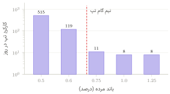
tap-changer operations in a day against the deadband (synthetic bus voltage)
tap step 1.25 % (half a step = 0.625 %); 30 s delay
deadband % operations a day a year years to 300,000
0.50 515 187975 1.6
0.60 119 43435 6.9
0.75 11 4015 74.7
1.00 8 2920 102.7
1.25 8 2920 102.7
a deadband narrower than half a step makes the controller
hunt: each tap throws the voltage past the other edge and
the next tap comes back - wear for nothing; just above
half a step the hunting stops, and a wider band trades
voltage quality for fewer operations (ch 25, ch 27)مثال 34.14 (نیمِ گام) پرسش. با گامِ 1.25 %، باند مردهٔ 0.6 % و 0.75 % چند کارکرد در روز میدهند؟
پاسخ. 119 و 11. با 0.6 % تپچنجر در کمتر از هفت سال به 300,000 کارکرد میرسد.
تفسیر. باند مرده باید از نیمِ گام بزرگتر باشد. کمی بالاتر از آن نوسانِ بیهوده میایستد. باندِ پهنتر کیفیتِ ولتاژ را با کارکردِ کمتر عوض میکند. عمرِ تپچنجر و نگهداریاش در فصلهای ۲۵ و ۵۱ میآیند. وارسی: \(0.6 < 0.625 < 0.75\).
34.3.10 ذخیرهٔ تاریخنگار
historian storage a year (teaching; 12 bytes a stored sample)
group points period s GB a year raw
hard-wired points 300 1 114
fast network points 2,000 1 757
slow network points 18,000 10 681
raw 1,552 GB a year; with deadband compression keeping
one sample in ten: 155 GB
the compression deadband is a measurement decision: a
value stored only when it moves more than its deadband
loses what happens inside it - the deadband of each tag
is set from its accuracy (lesson A), not from disk sizeایده. تاریخنگار هر نقطه را با آهنگِ خودش نگه میدارد. فشردهسازی با باند مرده فقط وقتی مقدار را ذخیره میکند که بیش از باندش حرکت کرده باشد. این تصمیمی دربارهٔ اندازهگیری است: آنچه درونِ باند رخ دهد از دست میرود. پس باند مردهٔ هر برچسب از دقتِ آن تعیین میشود (بخش 34.2.4)، نه از اندازهٔ دیسک.
34.3.11 دقتِ برچسبِ زمان در دنبالهٔ رویدادها
two events up to 10 ms apart: is their order on record right?
resolution ms same stamp % wrong order %
1 5.1 0.6
10 49.8 0.1
at 10 ms resolution about half of such pairs share a stamp
and their order is lost; at 1 ms most are told apart; the few
reversed come from the clocks' own sync error - the
resolution and the sync accuracy are specified togetherمثال 34.15 (یک میلیثانیه یا ده) پرسش. دو رویداد تا 10 ms فاصله دارند. با دقتِ 1 و 10 ms، ترتیبشان چند بار گم میشود؟
پاسخ. با 10 ms حدودِ نیمی از جفتها (50 %) برچسبِ یکسان میگیرند. با 1 ms حدودِ 5 %. خطای همگامیِ ساعتها ترتیبِ حدودِ 2 % جفتها را جابهجا میکند؛ بیشترِ آنها برچسبِ یکسان میگیرند و 0.6 % با 1 ms و حدودِ 0.1 % با 10 ms وارونه ثبت میشوند.
تفسیر. دقتِ برچسبِ زمان و دقتِ همگامی با هم تعیین میشوند. برچسبِ ریزتر از خطای همگامی ترتیب را بهتر نمیکند (بخش 34.2.8). وارسی: با پنجرهٔ 10 ms، بیشترِ جفتها در یک خانهٔ زمانی میافتند.
- نوسانِ بیهودهٔ تپچنجر چیست و چرا رخ میدهد؟
- کمینهٔ باند مرده برای گامِ 1.25 % چقدر است؟
- چرا باند مردهٔ فشردهسازی تصمیمی دربارهٔ اندازهگیری است؟
- ذخیرهٔ سالانهٔ ۲۰۰۰ نقطهٔ یکثانیهای با ۱۲ بایت چقدر است؟
- چرا برچسبِ زمانِ ریزتر از خطای همگامی سودی ندارد؟
34.3.12 حاشیهٔ فاز و تأخیرِ حلقه
ایده. آزمونهای پلهایِ بخش 34.3.3 نشان دادند که چرخهٔ 1 s فراجهش میدهد و چرخهٔ 2 s ناپایدار است. حاشیهٔ فاز همین داوری را پیش از هر آزمون میدهد. پاسخِ بسامدیِ حلقهٔ باز، یعنی کنترلگرِ PI روی مزرعهٔ مرتبهٔ اول با تأخیرِ کلِ \(d\)، چنین است:
\[ \begin{aligned} L(j\omega) &= \left(K_\text{p} + \frac{K_\text{i}}{j\omega}\right) \frac{e^{-j\omega d}}{1 + j\omega\tau} \\ \varphi_\text{m} &= 180^\circ + \arg L(j\omega_\text{c})\big|_{d=0} - \omega_\text{c}\, d\, \frac{180^\circ}{\pi} \end{aligned} \tag{34.11}\]
در این رابطه \(\omega_\text{c}\) بسامدِ گذرِ بهره است، جایی که \(|L(j\omega_\text{c})| = 1\). تأخیر اندازهٔ \(L\) را تغییر نمیدهد و فقط فاز میگیرد، به اندازهٔ \(\omega_\text{c} d\). چرخهٔ \(\Delta t\) با یک چرخه محاسبه و نیمچرخه نگهداشتِ خروجی، تأخیرِ کلِ حدودِ \(1.5\,\Delta t\) میدهد.
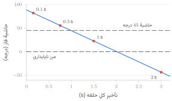
phase margin of the tuned PI (kp 1.5, ki 0.8; park tau 2 s)
crossover frequency 0.765 rad/s; margin without delay 88.3 deg
cycle s loop delay s (1.5 cycles) margin deg ch 34 step test
0.1 0.15 81.7 no overshoot
0.5 0.75 55.4 no overshoot
1.0 1.50 22.5 22-28 % overshoot
2.0 3.00 -43.3 unstable
a 45 deg margin allows 0.99 s of loop delay: a cycle of 0.66 s at most
(delay = one cycle of computing + half a cycle of hold)
a delay costs phase in proportion to the crossover
frequency, so the faster a loop is tuned, the less delay
it tolerates; the margin gives the same verdict as the
step tests of lesson B before any test is runمثال 34.16 (یک ثانیه تأخیر) پرسش. کنترلگرِ فصلِ ۲۰ (\(K_\text{p} = 1.5\)، \(K_\text{i} = 0.8\,\text{s}^{-1}\)، \(\tau = 2\,\text{s}\)) با چه تأخیرِ کلی هنوز حاشیهٔ ۴۵ درجه دارد؟ چرخهٔ کنترلگر حداکثر چقدر میتواند باشد؟
پاسخ. بسامدِ گذر 0.765 rad/s و حاشیهٔ بیتأخیر ۸۸٫۳ درجه است. برای ۴۵ درجه، تأخیر میتواند \((88.3 - 45)/(0.765 \times 57.3) = 0.99\,\text{s}\) باشد. با \(d = 1.5\,\Delta t\)، چرخه حداکثر 0.66 s است.
تفسیر. چرخهٔ 0.5 s با حاشیهٔ ۵۵ درجه بیفراجهش است. چرخهٔ 1 s با ۲۲ درجه فراجهش دارد و چرخهٔ 2 s حاشیهٔ منفی دارد و ناپایدار است. این همان نتیجهٔ آزمونهای پلهای است. هرچه حلقه تندتر تنظیم شود، بسامدِ گذر بزرگتر است و تأخیرِ کمتری تحمل میکند. وارسی: \(\omega_\text{c}^2 = 0.586\) ریشهٔ \(4x^2 - 1.25x - 0.64 = 0\) است.
34.3.13 پالسِ کوتاهتر از پویش
a pulse read by an input that is sampled once a 50 ms scan
pulse ms missed (theory) missed (10,000 random phases)
5 90 % 89.8 %
10 80 % 80.5 %
20 60 % 60.4 %
50 0 % 0.0 %
100 0 % 0.0 %
counting pulses: each pulse and each gap must last a scan,
so the fastest countable rate is 10 pulses a second
a short pulse - a relay's trip contact, a meter's energy
pulse - is latched by the input card, stretched at the
source, or read by a counter or event module; it is
never left to the luck of the scanایده. کنترلگرِ منطقی ورودیها را یک بار در هر پویش میخواند. پالسی به پهنای \(w\) که در زمانی تصادفی میرسد، با احتمالِ \(\max(0, 1 - w/t_\text{scan})\) میانِ دو خواندن گم میشود. با پویشِ 50 ms، پالسِ 20 ms در 60 % موارد دیده نمیشود. شمارشِ پالس هم حد دارد: هر پالس و هر فاصله باید دستکم یک پویش بماند، پس بیشترین آهنگِ قابلِ شمارش \(1/(2t_\text{scan})\) است. پالسهای کوتاه، مانندِ کنتاکتِ قطعِ رله یا پالسِ انرژیِ کنتور، با کارتِ نگهدارنده، کشیدنِ پالس در مبدأ یا کارتِ شمارنده خوانده میشوند و هرگز به بختِ پویش سپرده نمیشوند.
34.3.14 گامها و مهلتهایشان
start sequence of a battery container as steps with timeouts
step nominal s timeout s
S1 permissives (fire healthy, HVAC on) 2 10
S2 DC pre-charge 15 30
S3 main DC contactor closed 1 5
S4 converter started, synchronised 20 60
S5 AC breaker closed 1 5
S6 ramp to the set point 30 90
nominal 69 s; the longest a healthy-looking start can
take before a timeout ends it: 200 s
every step has a timeout and every timeout a defined exit:
open what the sequence closed, in reverse order, and say
which step failed; a step without one waits for ever
(the dead end of the ch 20 state machine), and the
timeout is set from the measured time in the factory testمثال 34.17 (راهاندازیِ یک ظرفِ باتری) پرسش. ترتیبِ راهاندازیِ ظرفِ باتری شش گام دارد (جدولِ بالا). زمانِ عادی چقدر است؟ یک راهاندازیِ ظاهراً سالم حداکثر چقدر طول میکشد تا مهلتی آن را پایان دهد؟ هر مهلت به کجا میرود؟
پاسخ. زمانِ عادی ۶۹ ثانیه و بیشترین زمان ۲۰۰ ثانیه است. هر مهلت به خروجِ تعریفشده میرود: آنچه ترتیب بسته است، به ترتیبِ وارون باز میشود و گامِ شکستخورده گزارش میشود.
تفسیر. این پیادهسازیِ ماشینِ حالتِ فصلِ ۲۰ در زبانِ نمودارِ ترتیبی است (STD-146). گامِ بیمهلت همان بنبستِ آن ماشین است. مهلتها از زمانهای اندازهگیریشده در آزمونِ کارخانه تعیین میشوند، نه از حدس. وارسی: \(2 + 15 + 1 + 20 + 1 + 30 = 69\).
34.3.15 هشدارِ ناهمخوانیِ فرمان و بازخورد
command against feedback: discrepancy timers (teaching)
device travel s timer s alarm
132 kV breaker close 0.1 0.5 failed to operate
motorised disconnector 8.0 15.0 failed to operate
HVAC damper 60.0 90.0 failed to operate
coolant pump: flow proven 5.0 15.0 failed to operate
the same feedback, watched while no command is given,
catches an uncommanded change in one scan; without it, a
disconnector that opened by itself is found at the next
weekly round - 3.5 days later on average
timers sit between the slowest healthy travel and the
shortest time anyone would wait; both alarms are testedایده. هر فرمان به یک تجهیز با بازخوردِ وضعیتش سنجیده میشود. اگر بازخورد در زمانِ معینی نرسد، هشدارِ ناهمخوانی «کار نکرد» میدهد. زمانسنج میانِ کندترین حرکتِ سالم و کوتاهترین زمانی است که کسی منتظر میماند. همان بازخورد وقتی فرمانی داده نشده هم پایش میشود. تغییرِ بیفرمان، مثلاً جداکنندهای که خودبهخود باز شده، در یک پویش پیدا میشود. بیاین پایش، در بازدیدِ هفتگیِ بعدی پیدا میشود، یعنی بهطورِ میانگین سهونیم روز بعد.
34.3.16 انتقالِ بیضربه از دستی به خودکار
ایده. وقتی اپراتور کنترلگر را از حالتِ دستی به خودکار میبرد، خروجی نباید بپرد. دو کار لازم است. انتگرالگیر در حالتِ دستی خروجیِ واقعی را ردگیری میکند، و نقطهٔ تنظیم از مقدارِ اندازهگیریشده شروع میشود و با آهنگِ مجاز تغییر میکند. این را انتقالِ بیضربه میگویند.
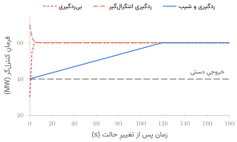
changing from manual (40 MW) to automatic with a 60 MW set point
case first output MW step MW peak MW
no tracking 30.0 -10.0 60.2
integrator tracks 70.0 +30.0 70.0
set point ramps 40.0 +0.0 60.1
without tracking the controller starts from its own empty
integrator and drops the plant; tracking alone still
kicks by the gain times the error; tracking plus a set
point that starts at the measured value and ramps at the
allowed rate (10 MW a minute, lesson G) changes nothing at
the moment of transfer - the test of lesson G checks itمثال 34.18 (سی مگاوات ضربه) پرسش. کنترلگر با \(K_\text{p} = 1.5\) از دستی (40 MW) به خودکار با نقطهٔ تنظیمِ 60 MW میرود. خروجی در لحظهٔ نخست در سه حالت چیست؟
پاسخ. بیردگیری: \(1.5 \times 20 + 0 = 30\,\text{MW}\)، یعنی افتِ 10 MW. با ردگیریِ انتگرالگیر: \(40 + 30 = 70\,\text{MW}\)، یعنی جهشِ 30 MW. با ردگیری و نقطهٔ تنظیمِ شیبدار: 40 MW، بیجهش. نیروگاه سپس با 10 MW در دقیقه به 60 MW میرسد.
تفسیر. ردگیری بهتنهایی کافی نیست، چون جزءِ تناسبی روی خطای 20 MW ضربه میزند. آزمونِ حالتها در بخش 34.8.6 همین انتقال را با ثبتِ خروجی وارسی میکند. وارسی: شیبِ 10 MW در دقیقه، 20 MW را در دو دقیقه میپیماید و نمودار در 120 s به 60 MW میرسد.
- معادلهٔ 34.11 را توضیح دهید. چرا تأخیر فقط فاز میگیرد؟
- چرا حلقهٔ تندتر تأخیرِ کمتری تحمل میکند؟
- احتمالِ گم شدنِ پالسِ 10 ms با پویشِ 50 ms چقدر است؟
- سه راهِ خواندنِ پالسِ کوتاه را بگویید.
- چرا هر گامِ یک ترتیب مهلت لازم دارد و مهلت به کجا میرود؟
- هشدارِ ناهمخوانی و پایشِ تغییرِ بیفرمان چه فرقی دارند؟
- چرا ردگیریِ انتگرالگیر بهتنهایی انتقال را بیضربه نمیکند؟
- آزمونِ انتقالِ بیضربه چه چیزی را ثبت میکند؟
34.4 پ. طراحی و ساخت در کارخانه
سامانهٔ کنترل روی کاغذ طراحی و در کارخانه ساخته میشود و پیش از رسیدن به ساختگاه آزموده میشود. اسنادِ اصلی اینهاست:
- فهرستِ ورودی و خروجی: هر نقطه با برد، کیفیت، هشدار و آزمون.
- ماتریسِ علت و معلول: هر رخداد و پاسخی که میگیرد.
- روایتِ کنترل: هر عملکرد به زبانِ ساده، برای طراح، برنامهنویس و آزمونگر.
- نقشههای تابلو و سیمکشی.
- پیکربندی و میانافزار با شناسه و اثرانگشت.
- برنامهٔ آزمونِ پذیرشِ کارخانه.
این بخش اینها را با عدد میسنجد (A-388). زبانهای برنامهنویسیِ کنترلگرِ منطقی در IEC 61131-3:2025 آمدهاند (STD-146). ترتیبِ آزمونهای کارخانه، ساختگاه و یکپارچگی در IEC 62381:2024 آمده است (STD-148).
برنامه:
python -m companion.ch34.examples_c34.4.1 شمارِ ورودی و خروجی و کارتها
hard-wired I/O of the substation and plant controller (teaching)
kind points +20 % spare channels/module modules
AI 71 86 8 11
DI 185 222 16 14
DO 44 53 16 4
300 hard-wired points; turbines, inverters and battery
containers add thousands more by network (ch 35), which
is why the hard-wired list is kept for what must work
when the network does not: trips, interlocks, fire
signals, breaker positionsایده. فهرستِ سیمکشیشده فقط برای چیزهایی است که باید بیشبکه هم کار کنند: قطعها، اینترلاکها، سیگنالهای حریق و وضعیتِ کلیدها. هزاران نقطهٔ دیگرِ توربینها، اینورترها و کانتینرهای باتری از راهِ شبکه میآیند (فصلِ ۳۵). هر نوع کارت ظرفیتِ خودش را دارد و 20 % یدکی برای تغییرهای آینده نگه داشته میشود.
34.4.2 گرمای درونِ تابلو
ایده. تابلوی بسته گرمای قطعههایش را از سطحش پس میدهد. افزایشِ دمای درونی و هوای لازم برای پنکه چنین است:
\[ \Delta T = \frac{P}{k\,A_\text{s}}, \qquad \dot V = \frac{P}{\rho_\text{air}\,c_p\,\Delta T} \tag{34.12}\]
در این رابطه \(P\) تلفِ درونی است، \(A_\text{s}\) سطحِ آزادِ تابلو، \(k \approx 5.5\,\text{W}/(\text{m}^2\,\text{K})\) ضریبِ انتقالِ آموزشی و \(\dot V\) دبیِ هوای پنکه.
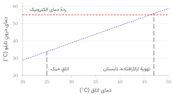
heat inside the plant-controller cabinet (teaching losses)
part count W each W
CPU pair 2 25.0 50
power supplies (losses) 2 22.0 44
I/O modules 29 3.0 87
interposing relays 60 0.5 30
network switches 2 15.0 30
transducers 12 2.5 30
total 271 W; closed cabinet with 5.6 m2 of surface: rise 9 K
room 25 deg C (room cooled): inside 34 - within the 55 deg C rating
room 40 deg C (HVAC lost, mild day): inside 49 - within the 55 deg C rating
room 47 deg C (HVAC lost, summer day): inside 56 - OVER the 55 deg C rating
a filtered fan for a 5 K rise needs 162 m3/h
the cabinet is fine while the room is cooled and fails
on a summer day without it: the control-room HVAC is an
essential load (ch 23), and the cabinet temperature is
an alarm on the I/O listمثال 34.19 (تابلویی که در تابستان میسوزد) پرسش. تابلوی کنترلگر با 271 W تلف در اتاقی بیتهویه در روزِ تابستانیِ 47 °C چه دمایی دارد؟
پاسخ. حدودِ 56 °C، بالاتر از ردهٔ 55 °C. در اتاقِ خنک 34 °C است.
تفسیر. تهویهٔ اتاقِ کنترل بارِ ضروری است (فصلِ ۲۳). دمای تابلو یکی از نقطههای فهرستِ ورودی است. این دما در ماتریسِ علت و معلول یک پاسخ دارد، و بخش 34.4.3 نشان میدهد پیشنویس آن را جا انداخته بود. وارسی: \(271/(5.5 \times 5.6) = 8.8\,\text{K}\).
34.4.3 ماتریسِ علت و معلولِ کنترل
control cause-and-effect matrix: coverage check (teaching)
cause effects tests
POC voltage measurement bad 2 T-07, T-01
operator set point stale > 10 s 2 T-12, T-01
operator link lost > 1 h 2 T-13, T-01
110 V DC undervoltage 2 T-01, T-21
UPS on battery 1 T-01
BESS container fire (from fire panel) 3 T-30, T-01, T-31
cabinet over-temperature 0 -
causes without an effect: ['cabinet over-temperature']
each cause needs at least one effect and each effect a
test that proves it; the fire rows are copied from the
fire panel's own matrix (ch 32, lab C), never redrawn
by the control designer, so the two cannot disagreeایده. هر علت دستکم یک معلول میخواهد و هر معلول آزمونی که آن را ثابت کند. وارسی یک علتِ بیمعلول یافت: بالا رفتنِ دمای تابلو. ردیفهای حریق از ماتریسِ خودِ تابلوی حریق کپی میشوند و طراحِ کنترل آنها را از نو نمیکشد تا دو ماتریس با هم تفاوت پیدا نکنند (بخش 32.4.5).
34.4.4 روایتِ کنترل
ایده. روایتِ کنترل هر عملکرد را به زبانِ ساده میگوید: چه وقت آغاز میشود، چه چیزی را میسنجد، چه حدهایی دارد، چه وقت پایان مییابد و در خرابیِ هر ورودی چه میکند. برنامهنویس از آن برنامه میسازد و آزمونگر از آن آزمون. وقتی برنامه و روایت تفاوت داشته باشند، یکی اشتباه است و آزمون باید نشان دهد کدام. حالتِ کارِ کاهشیافتهٔ بخش 34.5.4 نمونهای از روایتی است که رفتار در خرابی را از پیش میگوید.
34.4.5 مدیریتِ پیکربندی
ایده. فصلِ ۲۰ اجزای پروندهٔ پیکربندیِ کنترلگر را برشمرد (بخش 20.4.4). اینجا همان پرونده در ساختگاه به کار میآید: پیکربندیِ نصبشده خوانده میشود و اثرانگشتش با اثرانگشتِ آزمونِ کارخانه مقایسه میشود.
configuration management: is the site running what was tested?
fingerprint of the FAT configuration: c04825d179cb
fingerprint read back from the site: 4906cc4abdbb
match: NO
tested V_DROOP=0.04 -> on site V_DROOP=0.05
a droop changed on site without a change record makes
every FAT result for voltage control invalid: the change
goes through management of change (ch 32), is re-tested
and gets a new fingerprint; the fingerprint is on the
commissioning record (ch 26 did the same for settings)مثال 34.20 (یک عدد که همهٔ آزمونها را باطل میکند) پرسش. اثرانگشتِ پیکربندیِ ساختگاه با کارخانه یکی نیست. چه شده و پیامدش چیست؟
پاسخ. شیبِ افتِ ولتاژ بیسابقهٔ تغییر از 0.04 به 0.05 رسیده است.
تفسیر. هر نتیجهٔ آزمونِ کنترلِ ولتاژ در کارخانه برای این پیکربندی معتبر نیست. تغییر از راهِ مدیریتِ تغییر میگذرد، دوباره آزموده میشود و اثرانگشتِ تازه میگیرد (بخش 32.6.5). فصلِ ۲۶ همین روش را برای تنظیمهای حفاظت به کار برد. وارسی: یک سطر از پنج سطر تفاوت دارد.
34.4.6 نقصهای آزمونِ کارخانه
ایده. اگر هر روزِ آزمون سهمِ ثابتی از نقصهای باقیمانده را پیدا کند، شمارِ نقصهای یافته تا روزِ \(t\) چنین است:
\[ D(t) = N\left(1 - e^{-b\,t}\right) \tag{34.13}\]
در این رابطه \(N\) کلِ نقصهاست و \(b\) آهنگِ یافتن.
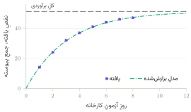
defects found per day of the factory test, and those still left
day: 1 2 3 4 5 6 7 8
new: 14 10 8 5 4 3 2 1
fitted N(1 - exp(-b t)): N = 51.2, b = 0.32 per day
found 47; expected still hidden about 4
the falling rate says testing works; the fit says a few
defects remain - the FAT closes with a punch list and the
site tests (lesson D) look for exactly those, not with a
claim of zero defectsمثال 34.21 (چهار نقصِ پنهان) پرسش. پس از هشت روز آزمون ۴۷ نقص یافته شده است. چند نقص احتمالاً هنوز پنهان است؟
پاسخ. حدودِ ۴. مدل \(N = 51.2\) و \(b = 0.32\) در روز میدهد.
تفسیر. آهنگِ کاهشیِ یافتن نشان میدهد آزمون کار میکند. مدل نشان میدهد چند نقص مانده است. آزمونِ کارخانه با فهرستِ نواقص بسته میشود، نه با ادعای «بینقص». آزمونهای ساختگاه دقیقاً دنبالِ همینها میگردند (بخش 34.5). وارسی: \(51.2 - 47 = 4.2\).
34.4.7 تلاشِ آزمونِ کارخانه و وارسیِ حلقهها
effort of the factory test and of the site loop checks (teaching)
FAT: 71 AI x 3 min + 185 DI x 1 min + 44 DO x 2 min
+ 40 h of functional tests = 48 h
site loop checks: 300 points at 40 a crew-day = 8 crew-days
loop checks run on de-energised equipment with a signal
injected at the field end (a calibrator in place of the
transmitter, a jumper in place of a contact): no work on
live parts; each point gets an as-found and as-left value
and the signature of the checker (ch 49)ایده. وارسیِ حلقه روی تجهیزِ بیبرق انجام میشود. سیگنال در سرِ میدان تزریق میشود: یک کالیبراتور بهجای فرستنده، یا یک اتصال بهجای کنتاکت. کار روی بخشهای برقدار انجام نمیشود. هر نقطه یک مقدارِ «پیش از تنظیم» و «پس از تنظیم» و امضای وارسیکننده میگیرد (فصلِ ۴۹).
- چرا فهرستِ سیمکشیشده فقط برای چند صد نقطه است؟
- معادلهٔ 34.12 را توضیح دهید.
- چرا دمای تابلو باید در فهرستِ ورودی باشد؟
- دو قاعدهٔ وارسیِ ماتریسِ علت و معلول را بنویسید.
- چرا ردیفهای حریق از ماتریسِ تابلوی حریق کپی میشوند؟
- روایتِ کنترل چه چیزهایی را میگوید؟
- اثرانگشتِ پیکربندی چه چیزی را ثابت میکند؟
- معادلهٔ 34.13 را توضیح دهید.
- وارسیِ حلقه چگونه بدونِ کار روی بخشهای برقدار انجام میشود؟
34.4.8 پایانهها و فضای تابلوی واسط
برنامه:
python -m companion.ch34.examples_pterminals in the marshalling cabinets (teaching sizes)
71 AI x 3 + 185 DI x 2 + 44 DO x 2, +20 % spare: 806 terminals
6.2 mm each on 0.6 m rails: 96 a rail -> 9 rails
at 10 rails a cabinet: 1 cabinet(s), before the room left for growth
space is also for people: room for a hand and a tool
between rails, labels on both ends of every wire, and
the field side kept apart from the system side so a
loop check never needs a terminal opened in a crowdایده. هر ورودیِ آنالوگ سه پایانه میخواهد (دو سیم و شیلد) و هر ورودی یا خروجیِ رقمی دو پایانه. با 20 % یدکی، 806 پایانه روی نُه ریلِ 0.6 m جا میگیرند. فضا برای آدمها هم هست: جای دست و ابزار میانِ ریلها، برچسب در دو سرِ هر سیم، و جدا بودنِ سمتِ میدان از سمتِ سامانه، تا وارسیِ حلقه هرگز نیازی به باز کردنِ پایانه در شلوغی نداشته باشد.
34.4.9 اتصالِ کوتاه روی شاخهٔ ۲۴ ولت
a short circuit on a 24 V branch: does the branch protection clear it?
supply 20 A, current-limited at 1.5 x = 30 A
branch device rating A needs A to clear fast clears?
fuse 4 20 yes
fuse 10 50 NO
electronic breaker 4 4 yes
a current-limited supply may never give a large fuse the
current it needs: the fault drags the 24 V down for every
module on the supply until something else gives way;
small fuses or electronic breakers per branch, sized
against the supply's limit, keep a fault on its branchمثال 34.22 (فیوزی که هرگز نمیسوزد) پرسش. منبعِ 20 A با محدودیتِ جریانِ 1.5 برابر، شاخهای را با فیوزِ 10 A تغذیه میکند. اتصالِ کوتاه روی شاخه چه میکند؟
پاسخ. منبع حداکثر 30 A میدهد. فیوزِ 10 A برای قطعِ سریع حدودِ 50 A میخواهد و نمیسوزد. فیوزِ 4 A یا قطعکنندهٔ الکترونیکی شاخه را جدا میکند.
تفسیر. منبعِ محدودشده ممکن است هرگز جریانِ لازمِ یک فیوزِ بزرگ را ندهد. خطا ولتاژِ ۲۴ ولت را برای همهٔ کارتهای آن منبع پایین میکشد. فیوزهای کوچک یا قطعکنندههای الکترونیکی در هر شاخه، که با محدودیتِ منبع اندازه شدهاند، خطا را در شاخهٔ خودش نگه میدارند (فصلِ ۲۶). وارسی: \(20 \times 1.5 = 30 < 10 \times 5 = 50\).
34.4.10 چند آزمون برای یک منطق؟
how many test cases a permissive with n conditions needs (teaching)
conditions every combination each condition shown to matter
3 8 4
5 32 6
6 64 7
10 1024 11
testing every combination grows out of reach; a set of
n + 1 cases in which each condition is shown to change the
result on its own covers an AND of n conditions - plus the
bad-quality case of each input (lesson B)ایده. آزمودنِ همهٔ ترکیبها با شمارِ شرطها نمایی رشد میکند. برای «و»ی \(n\) شرط، \(n + 1\) موردِ آزمون کافی است، به شرطی که در هر مورد یک شرط بهتنهایی نتیجه را تغییر دهد. بعد برای هر ورودی یک موردِ «کیفیتِ بد» افزوده میشود (بخش 34.3.4).
34.4.11 فهرستِ نواقص در پایانِ آزمونِ کارخانه
the punch list at the end of the factory test (synthetic)
category open
A (blocks shipment) 2
B (close before SAT) 6
C (close before handover) 4
A and B items: 8; at 3 closed a week: 2.7 weeks
the panel ships when the A items are closed and re-tested;
B items travel with the panel and are closed and signed
before the site test; each item names who closes it and
which test proves it closed (ch 40, ch 50)ایده. موردهای باز سه ردهاند:
- ردهٔ الف: ارسال را متوقف میکند.
- ردهٔ ب: پیش از آزمونِ ساختگاه بسته میشود.
- ردهٔ پ: پیش از تحویل بسته میشود.
تابلو وقتی ارسال میشود که موردهای ردهٔ الف بسته و دوباره آزموده شده باشند. هر مورد نامِ کسی را که آن را میبندد و آزمونی را که بستهشدنش را ثابت میکند دارد (فصلهای ۴۰ و ۵۰).
- پایانههای ۷۱ ورودیِ آنالوگ و ۱۸۵ ورودیِ رقمی بییدکی چند است؟
- چرا فیوزِ بزرگ روی منبعِ محدودشده ممکن است نسوزد؟
- برای «و»ی شش شرط چند موردِ آزمون لازم است؟
- سه ردهٔ موردهای باز را با معیارِ بستنشان بنویسید.
34.4.12 کابلهای چندرشته از فهرستِ ورودی و خروجی
multicore cables from the I/O list (teaching sizes, 20 % spare)
analogue: 71 points in 12-pair, individually screened cables: 28 cables
digital (110 V DC): 229 points, two cores each, in 24-core cables: 33 cables
one item of equipment, one cable or more of its own:
a shared cable makes two items depend on one route and
one terminal box; analogue and digital never share,
and every cable is listed in the cable schedule with
its class, route and both terminations (ch 24 trays)ایده. فهرستِ ورودی و خروجی (بخش 34.4.1) شمارِ کابلها را هم تعیین میکند. سیگنالهای آنالوگ در کابلهای چندرشتهٔ زوجبهزوج شیلدشده و سیگنالهای رقمیِ 110 V در کابلهای جدا میروند، هر دو با بیست درصد رشتهٔ ذخیره. هر تجهیز کابلِ خودش را دارد. کابلِ مشترک دو تجهیز را به یک مسیر و یک جعبهٔ اتصال وابسته میکند. هر کابل با رده، مسیر و دو سرش در فهرستِ کابل نوشته میشود و ردهها در سینیها جدا میمانند (فصلِ ۲۴). وارسی: ۷۱ نقطهٔ آنالوگ با بیست درصد ذخیره ۸۶ زوجاند. در کابلهای دوازدهزوجی دستکم ۸ کابل لازم است. چون هر تجهیز کابلِ خودش را دارد، ۲۸ کابل میشود.
34.4.13 زمانِ تعمیرِ کنترلگر و نسخهٔ پشتیبان
repair time of one plant controller (teaching; MTBF 150,000 h)
case MTTR h down min a year
tested backup, spare on site 4.0 14.0
no tested backup 57.5 201.4
backup, spare from the maker 75.5 264.4
the repair time is mostly paperwork and waiting: a backup
that was restored once in a test, a spare on the shelf
with the same firmware, and a written verification turn
days into hours; the backup is taken after every change
and its fingerprint compared with the running programمثال 34.23 (چهار ساعت یا دو روز) پرسش. کنترلگرِ نیروگاه MTBF برابرِ 150,000 h دارد. زمانِ تعمیر و دقیقههای از کار افتادن در سال را برای سه حالت حساب کنید: نسخهٔ پشتیبانِ آزموده با قطعهٔ یدکی در ساختگاه، بی نسخهٔ پشتیبانِ آزموده، و نسخهٔ پشتیبان با یدکی که از سازنده میرسد.
پاسخ. زمانِ تعمیر 4 h، 57.5 h و 75.5 h و از کار افتادن 14، 201 و 264 دقیقه در سال است.
تفسیر. سختافزار در هر سه حالت یکی است. تفاوت در کاغذ و انتظار است: نسخهٔ پشتیبانی که یک بار در آزمون بازگردانی شده، یدکیِ قفسه با همان میانافزار و روشِ وارسیِ نوشتهشده. نسخهٔ پشتیبان پس از هر تغییر گرفته و اثرانگشتش با برنامهٔ در حالِ کار مقایسه میشود (بخش 34.4.5). وارسی: \(4/150\,004 \times 525\,600 = 14.0\) دقیقه.
34.4.14 گرمای تابلو و عمرِ الکترونیک
electronics in the cabinet of lesson C (teaching)
room C cabinet air C failure-rate factor capacitor life years
25 34 1.00 19.6
40 49 3.43 6.9
47 56 5.86 4.3
(failure rate against the cooled cabinet at 34 C, 0.7 eV;
capacitor 5,000 h at 105 C, life doubling for each 10 K
cooler, running 20 K above the cabinet air)
a cabinet that lives at 56 C fails its electronics about 6
times as often as the cooled one and wears out a power
supply's capacitors in about 4 years instead of 20 - the
cooling of lesson C is a reliability decision, and the
supplies get a replacement interval in the maintenance
plan (ch 51)ایده. بخش 34.4.2 نشان داد که تابلوی کنترلگر در روزِ تابستانیِ بیتهویه به 56 °C میرسد. آهنگِ خرابیِ الکترونیک با دما بهصورتِ نمایی (رابطهٔ آرنیوس، فصلِ ۴) بالا میرود. عمرِ خازنهای الکترولیتیِ منبعِ تغذیه با هر ده کلوین گرمای بیشتر نصف میشود. با عددهای آموزشی، تابلویی که در 56 °C زندگی کند حدودِ شش برابرِ تابلوی خنک خرابی دارد. خازنهای منبعِ تغذیهاش در حدودِ چهار سال فرسوده میشوند، به جای بیست سال. پس خنککاریِ اتاق تصمیمِ قابلیتِ اطمینان است. منبعهای تغذیه هم بازهٔ تعویضی در برنامهٔ نگهداری میگیرند (فصلِ ۵۱). وارسی: \(5000 \times 2^{(105 - 76)/10} = 37\,300\,\text{h}\)، یعنی 4.3 سال.
- چرا هر تجهیز کابلِ چندرشتهٔ خودش را دارد؟
- شمارِ کابلها از فهرستِ ورودی و خروجی چگونه به دست میآید؟
- چرا زمانِ تعمیرِ کنترلگر بیشتر کاغذ و انتظار است؟
- نسخهٔ پشتیبان کی گرفته و چگونه وارسی میشود؟
- تابلوی گرم چگونه هم آهنگِ خرابی و هم عمرِ خازنها را تغییر میدهد؟
34.5 ت. آزمایشگاهِ عملکردی
این آزمایشگاه سه مثالِ کارشدهٔ فصل را میسازد:
- فهرستِ ورودی و خروجیِ نیروگاهِ P با بررسیکنندهٔ خودکار.
- ردیابیِ ولتاژِ نقطهٔ اتصال از ترانسفورماتورِ ولتاژ تا نمایشگرِ اپراتور.
- موردِ آزمونِ خرابیِ شبیهسازیشدهٔ یک حسگر، با هشدار و حالتِ کارِ کاهشیافته.
همهٔ سیگنالها ساختگیاند و همهٔ تنظیمها آموزشی. هیچ آزمونی روی تجهیزِ برقدار انجام نمیشود. خرابی در خروجیِ مبدلِ اندازهگیری با کالیبراتور یا در شبیهساز ساخته میشود (A-385 تا A-387).
برنامه:
python -m companion.ch34.lab_d34.5.1 فهرستِ ورودی و خروجیِ نیروگاهِ P (مثالِ کارشده)
IO_DRAFT = [ # tag, description, type, range, alarm, test
("E1-VT-U", "POC voltage L-L", "AI", (0.0, 150.0, "kV"),
"<0.90 >1.10 pu", "T-03"),
("E1-MTR-P", "POC active power", "AI", (-120.0, 120.0, "MW"),
None, "T-04"),
("E1-MTR-Q", "POC reactive power", "AI", None, None, "T-05"),
("T1-WTI", "T1 winding temperature", "AI", (0.0, 150.0, "C"),
">110 >130", None),
("E1-CB-POS", "line breaker closed", "DI", None, None, "T-10"),
("E1-CB-TRP", "line breaker tripped", "DI", None, "urgent", "T-10"),
("DC-UV", "110 V DC undervoltage", "DI", None, "urgent", "T-21"),
("FIRE-ANY", "fire alarm, any zone", "DI", None, "urgent", "T-30"),
("E1-CB-POS", "line breaker open", "DI", None, None, "T-10"),
("PPC-Q-CMD", "Q set point to units", "AO", (-33.0, 33.0, "Mvar"),
None, "T-07")]Plant P I/O list: extract of the draft and the checker (teaching)
tag type range alarm test
E1-VT-U AI 0..150 kV <0.90 >1.10 pu T-03
E1-MTR-P AI -120..120 MW - T-04
E1-MTR-Q AI -60..60 Mvar - T-05
T1-WTI AI 0..150 C >110 >130 T-15
E1-CB-POS DI - - T-10
E1-CB-TRP DI - urgent T-10
DC-UV DI - urgent T-21
FIRE-ANY DI - urgent T-30
E1-CB-OPN DI - - T-10
PPC-Q-CMD AO -33..33 Mvar - T-07
draft findings (3):
E1-MTR-Q: analogue point without a range
T1-WTI: no test case
E1-CB-POS: tag used twice
after correction: 0 findings
a full list carries more columns - description, source
and destination panel, terminals, signal level, scaling,
quality handling, alarm priority, historian rate, owner
- for every one of the 300 hard-wired points (lesson C)مثال 34.24 (مثالِ کارشده: فهرستِ ورودی و خروجیِ نیروگاهِ P) پرسش. فهرستِ ورودی و خروجیِ نیروگاهِ P را تعریف کنید و پیشنویس را با قاعدههای روشن بررسی کنید.
پاسخ.
- فهرست: 300 نقطهٔ سیمکشیشده، شامل 71 ورودیِ آنالوگ، 185 ورودیِ رقمی و 44 خروجیِ رقمی (بخش 34.4.1). عصارهای دهسطری با برچسب، نوع، برد، هشدار و آزمون در خروجی آمده است.
- قاعدهها: برچسب یکتاست. نقطهٔ آنالوگ برد دارد. هر نقطه یک موردِ آزمون دارد.
- یافتههای پیشنویس: توانِ واکنشیِ نقطهٔ اتصال برد ندارد. دمای سیمپیچ آزمون ندارد. برچسبِ وضعیتِ کلیدِ خط دو بار به کار رفته است.
- پس از اصلاح: صفر یافته.
تفسیر. فهرستِ کامل ستونهای بیشتری دارد: شرح، تابلوی مبدأ و مقصد، پایانهها، ترازِ سیگنال، مقیاس، رفتارِ کیفیت، اولویتِ هشدار، آهنگِ تاریخنگار و مالک. فهرست سندِ زنده است و هر تغییرش از راهِ مدیریتِ پیکربندی میگذرد (بخش 34.4.5). وارسی: سه یافته در پیشنویس و صفر پس از اصلاح.
34.5.2 ردیابیِ ولتاژِ نقطهٔ اتصال (مثالِ کارشده)
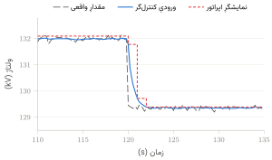
POC voltage from the VT to the operator display (synthetic, 2 % dip at 120 s)
stage value at t = 125 s
true primary voltage 129.26 kV
VT secondary (L-L) 107.72 V
transducer output 17.788 mA
converter + scaling + filter 129.35 kV (quality good)
PPC: droop 4 %, 33 Mvar Q set point +16.6 Mvar
HMI (1 s poll, 0.2 % deadband) 129.39 kV
delay to 63 % of the dip: filter 0.50 s, display 1.00 s
each stage changes the number a little and delays it a
little: the controller sees the dip within half a second
and answers with reactive power; the operator sees it
about a second later - the time stamp on the display is
the controller's, not the screen's (lesson A, time)مثال 34.25 (مثالِ کارشده: از ترانسفورماتورِ ولتاژ تا نمایشگر) پرسش. ولتاژِ اندازهگیریشدهٔ شبکه را از ابزار، مسیرِ سیگنال، منطقِ کنترلگر و ارتباطات تا نمایشگرِ اپراتور دنبال کنید.
پاسخ. در لحظهٔ 125 s، پنج ثانیه پس از افتِ دودرصدی:
- ابزار: ولتاژِ اولیه 129.26 kV و ثانویهٔ ترانسفورماتورِ ولتاژ 107.72 V.
- مسیرِ سیگنال: مبدلِ اندازهگیری 17.788 mA میدهد. پس از کارتِ ورودی، مقیاس و فیلتر، 129.35 kV با کیفیتِ خوب به کنترلگر میرسد.
- منطقِ کنترلگر: با شیبِ افتِ 4 % و 33 Mvar، نقطهٔ تنظیمِ توانِ واکنشی +16.6 Mvar است (بخش 20.2.7).
- ارتباطات و نمایش: نمایشگر با بهروزرسانیِ یکثانیهای و باند مردهٔ 0.2 %، 129.39 kV نشان میدهد.
- تأخیرها: تا ۶۳ درصدِ افت، فیلتر 0.50 s و نمایشگر 1.00 s.
تفسیر. هر حلقه عدد را کمی تغییر میدهد و کمی دیر میکند. کنترلگر افت را در نیمثانیه میبیند و با توانِ واکنشی پاسخ میدهد. اپراتور آن را حدودِ یک ثانیه بعد میبیند. برچسبِ زمانِ روی نمایشگر از کنترلگر میآید، نه از صفحه (بخش 34.2.8). وارسی: \(-(-0.0201)/0.04 \times 33 = 16.6\,\text{Mvar}\).
34.5.3 موردِ آزمونِ خرابیِ حسگر (مثالِ کارشده)
def ppc_step(state: dict, t: float, kv: float, quality: str,
meter_kv: float) -> float:
"""One scan of the PPC voltage function: use the transducer while its
quality is good; hold the last Q and alarm when it is not; after 1 s
use the meter channel (degraded mode)."""
if quality == "good":
state["bad_since"] = None
u = kv
else:
if state["bad_since"] is None:
state["bad_since"] = t
state["alarm_at"] = t
if t - state["bad_since"] < 1.0:
return state["q"] # hold
state["degraded_at"] = state.get("degraded_at") or t
u = meter_kv
state["q"] = float(ct.droop_reactive(u / 132.0 - 1.0, 33.0, 0.04))
return state["q"]test case T-03b: POC voltage transducer loop opens (simulated)
precondition: plant in voltage control at 0.99 pu, signal
from a calibrator at the transducer output (no live work)
step: at t = 10.0 s the calibrator output is opened (0 mA)
expected observed
quality 'bad' within one scan (50 ms) t = 10.00 s
last good Q held for 1 s change 0.00 Mvar
alarm 'POC V measurement bad' t = 10.00 s
meter channel in use within 1 s t = 11.00 s
Q on the meter channel = Q before +8.25 vs +8.25 Mvar
result: PASS - recorded with the configuration fingerprint
a controller that trusted the value of the dead loop would
read -37.5 kV and order +33 Mvar, full reactive export -
quality comes before valueمثال 34.26 (مثالِ کارشده: موردِ آزمونِ T-03b) پرسش. برای خرابیِ شبیهسازیشدهٔ حسگرِ ولتاژِ نقطهٔ اتصال یک موردِ آزمون بنویسید و رفتارِ هشدار و حالتِ کارِ کاهشیافته را وارسی کنید.
پاسخ.
- پیششرط: نیروگاه در کنترلِ ولتاژ در 0.99 pu. سیگنال از کالیبراتوری در خروجیِ مبدل میآید.
- گام: در 10.0 s خروجیِ کالیبراتور باز میشود و جریان صفر میشود.
- نتیجههای مشاهدهشده:
- کیفیت در همان پویش «بد» میشود.
- نقطهٔ تنظیمِ توانِ واکنشی یک ثانیه ثابت میماند.
- هشدار در 10.00 s برمیخیزد.
- کانالِ کنتور در 11.00 s به کار میآید.
- توانِ واکنشی همان +8.25 Mvar پیشین میماند.
- داوری: قبول، ثبتشده با اثرانگشتِ پیکربندی.
تفسیر. کنترلگری که به «مقدارِ» حلقهٔ مرده اعتماد کند -37.5 kV میخواند و +33 Mvar، یعنی بیشترین صدورِ توانِ واکنشی، فرمان میدهد. کیفیت پیش از مقدار میآید (بخش 34.2.1). وارسی: \(-(0.99 - 1)/0.04 \times 33 = 8.25\,\text{Mvar}\).
34.5.4 حالتِ کارِ کاهشیافته
degraded mode: the meter channel updates once a second (one-cycle lag)
gains overshoot % settled (2 %) s
normal 1.5 / 0.8 21.6 50
degraded 0.8 / 0.3 0.0 19
the normal gains on a once-a-second measurement overshoot
(lesson B); the degraded mode trades speed for a calm
response until the transducer is back - written in the
control narrative and proved in the same test caseایده. کانالِ کنتور فقط هر ثانیه بهروز میشود. با بهرههای عادی، این تأخیرِ یکچرخهای 22 % فراجهش میدهد (مثال 34.11). حالتِ کارِ کاهشیافته بهرهها را کم میکند و سرعت را با پاسخی آرام عوض میکند تا مبدلِ اندازهگیری برگردد. این رفتار در روایتِ کنترل نوشته میشود و در همان موردِ آزمون ثابت میشود.
- سه قاعدهٔ بررسیِ فهرستِ ورودی و خروجی کداماند؟
- ستونهای یک فهرستِ کامل را نام ببرید.
- چرا نمایشگر دیرتر از کنترلگر تغییر میکند؟
- باند مرده در نمایشگر چه میکند؟
- چرا کنترلگر نخست نقطهٔ تنظیم را نگه میدارد و بعد به کانالِ کنتور میرود؟
- حلقهٔ مرده بدونِ بررسیِ کیفیت چه فرمانی میدهد؟
- حالتِ کارِ کاهشیافته چه چیزی را عوض میکند و چرا؟
34.6 ث. تابِآوریِ تغذیهٔ کنترل
کنترل و حفاظت بیبرق هیچاند. فصلِ ۲۳ باتریِ 110 V، شارژرها و منبعِ تغذیهٔ بیوقفه را اندازه کرد (بخش 23.7.2). این بخش آنها را از نگاهِ کنترل دنبال میکند:
- کدام تغذیه کدام عملکرد را نگه میدارد؟
- بارهای 24 V کنترل چه چیزی به باتری میافزایند؟
- هشدارهای کمولتاژی کجا تنظیم میشوند و دستگاهها در پایانِ تخلیه چه ولتاژی میبینند؟
- نیروگاه با از دست رفتنِ هر تغذیه چه میکند؟
- پس از خاموشیِ کامل با چه ترتیبی برمیگردد؟
- همهٔ اینها چگونه آزموده میشوند؟
بارها و آستانهها آموزشیاند (A-389).
برنامه:
python -m companion.ch34.examples_e34.6.1 کدام تغذیه کدام عملکرد را نگه میدارد
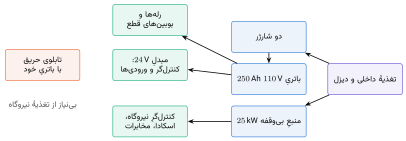
which supply carries which function (teaching, Plant P)
function supply
protection IEDs, trip and close coils 110 V DC battery
breaker spring motors, indication 110 V DC battery
PLC, remote I/O, field loops 24 V DC from 110 V DC
PPC, SCADA servers, HMI, telecom UPS 230 V AC
time server, firewall, switches 24 V DC from 110 V DC
fire panel its own batteries (fire system)
BESS container HVAC and PCS auxiliaries station service (ch 23)
the 24 V control supply hangs on the 110 V battery, not on
the UPS: when the UPS fails, interlocks and I/O still work;
the fire panel keeps its own batteries so that life safety
never depends on the plant's control powerایده. تغذیهٔ 24 V کنترل از باتریِ 110 V گرفته میشود، نه از منبعِ تغذیهٔ بیوقفه. پس اگر منبعِ بیوقفه خراب شود، اینترلاکها و ورودیها هنوز کار میکنند. تابلوی حریق باتریهای خودش را دارد تا ایمنیِ جانی هرگز به تغذیهٔ کنترلِ نیروگاه وابسته نباشد (بخش 34.7.3).
34.6.2 بارهای ۲۴ ولت روی باتری
ایده. مدتِ کارِ باتری با باری ثابت چنین است:
\[ t_\text{a} = \frac{C\,\eta_\text{u}}{I} \tag{34.14}\]
در این رابطه \(C\) ظرفیتِ باتری بر حسبِ آمپرساعت است، \(\eta_\text{u}\) سهمِ قابلِ استفاده و \(I\) جریانِ بار.
the 24 V control loads on the 110 V battery (teaching)
24 V loads: 465 W through a 90 % converter = 4.7 A at 110 V
standing load 40 A (ch 23) -> 44.7 A if not yet counted
autonomy of 250 Ah at 80 % usable: 5.0 h -> 4.5 h
still above the 4 h requirement, with less margin: the
control designer's load list goes back to the battery
sizing of ch 23 so that no load is counted twice or
missed - an interface, owned by one engineerمثال 34.27 (باری که در دو فهرست نبود) پرسش. بارهای 24 V کنترل از راهِ مبدلِ 90 % چه جریانی از باتریِ 110 V میکشند؟ اگر در اندازهگذاریِ فصلِ ۲۳ شمرده نشده باشند، مدتِ کار چه میشود؟
پاسخ. 4.7 A. مدتِ کار از 5.0 به 4.5 ساعت میرسد.
تفسیر. هنوز بالای الزامِ چهارساعته است، اما با حاشیهٔ کمتر. فهرستِ بارِ طراحِ کنترل به اندازهگذاریِ باتری برمیگردد تا هیچ باری دو بار شمرده یا جا انداخته نشود. این یک واسط است و یک مهندس مالکِ آن است (فصلِ ۱۸). وارسی: \(250 \times 0.8/44.7 = 4.47\,\text{h}\).
34.6.3 هشدارهای کمولتاژی و ولتاژِ پایانِ تخلیه
ایده. افتِ ولتاژِ فیدرِ مستقیمِ تابلوی دور در جریانِ \(I\) چنین است:
\[ \Delta V = \frac{2\,\rho\,\ell}{A}\,I \tag{34.15}\]
دستگاهها باید در پایانِ تخلیه، منهای این افت، هنوز کار کنند. ولتاژِ شناور معیار نیست.
110 V DC undervoltage alarms and what the devices need (teaching)
float 122.7 V; end of discharge 96.2 V (55 cells x 1.75)
alarm 'DC low' at 104.5 V (1.90 V/cell), 'DC very low' at 99.0 V (1.80)
feeder to the far panel as drawn, 2.5 mm2:
drop 12.6 V at 15 A, the panel sees 83.7 V
protection IED (teaching: 80 % of 110 V) needs 88 FAILS
trip coil (teaching: 70 %) needs 77 ok
DC/DC converter input (teaching) needs 85 FAILS
the same feeder enlarged to 10 mm2:
drop 3.2 V at 15 A, the panel sees 93.1 V
protection IED (teaching: 80 % of 110 V) needs 88 ok
trip coil (teaching: 70 %) needs 77 ok
DC/DC converter input (teaching) needs 85 ok
at the end of the autonomy the far panel's IED loses its
supply on the thin feeder: the DC drop is checked at the
end-of-discharge voltage, not at float; the alarms come
first - 'DC low' to restore the charger, 'DC very low' to
start the orderly shedding - so the protection keeps its
voltage to the end of the autonomyمثال 34.28 (فیدرِ نازکی که حفاظت را خاموش میکند) پرسش. رلهٔ هوشمندِ تابلوی دور 88 V میخواهد. با فیدرِ 2.5 mm² و 60 m در 15 A، در پایانِ تخلیه چه ولتاژی میبیند؟
پاسخ. 83.7 V، کمتر از نیاز. با فیدرِ 10 mm² به 93.1 V میرسد و کافی است.
تفسیر. در پایانِ مدتِ کار، حفاظتِ تابلوی دور روی فیدرِ نازک خاموش میشود. این بدترین زمان برای خاموششدنِ حفاظت است. افتِ مستقیم در ولتاژِ پایانِ تخلیه وارسی میشود. هشدارها پیشتر میآیند: «ولتاژِ مستقیم کم» برای بازگرداندنِ شارژر، و «بسیار کم» برای آغازِ جداکردنِ منظمِ بارها. وارسی: \(55 \times 1.75 - 2 \times 0.0175 \times 60 \times 15/2.5 = 96.25 - 12.6 = 83.65\,\text{V}\).
34.6.4 رفتار در از دست رفتنِ هر تغذیه
what the plant does on the loss of each supply (teaching design intent)
loss behaviour
station-service AC lost UPS and DC carry; diesel starts
one charger fails second charger carries; alarm
both chargers fail battery carries; autonomy clock
UPS fails (bypass on) PPC and SCADA on raw AC; alarm
110 V DC lost protection blind: plant tripped
24 V DC lost PLC outputs off: stops, no permits
network lost PPC holds, then falls back (ch 20)
every row is a written intent with a test (lesson E,
tests); the one row the design avoids is a plant running
without protection - loss of all DC trips it on purpose,
and the second battery or charger makes that rareایده. هر سطر نیتِ نوشتهشدهٔ طراحی است و آزمونی دارد (بخش 34.6.7). تنها سطری که طراحی از آن پرهیز میکند نیروگاهِ در حالِ کار بیحفاظت است. از دست رفتنِ کلِ ولتاژِ مستقیم نیروگاه را عمداً قطع میکند و شارژرِ دوم آن را نادر میکند.
34.6.5 منبعِ تغذیهٔ بیوقفه و جداکردنِ بارها
the UPS of the control building and load shedding (ch 23 sizing)
25 kW for 60 min: 32.9 kVA, battery 27.2 kWh
shed 8 kW of non-critical loads after 20 min: total 79 min
shedding by priority (HMI screens and the historian first,
the PPC, telecom and time server last) buys more time for
what must keep running; the shedding list is part of the
cause-and-effect matrix (lesson C)ایده. جداکردن بر پایهٔ اولویت زمان میخرد. نخست نمایشگرها و تاریخنگار جدا میشوند و در پایان کنترلگرِ نیروگاه، مخابرات و سرورِ زمان. جداکردنِ 8 kW پس از بیست دقیقه، مدتِ کار را از 60 به حدودِ 79 دقیقه میرساند. فهرستِ جداکردن بخشی از ماتریسِ علت و معلول است (بخش 34.4.3).
34.6.6 ترتیبِ راهاندازی پس از خاموشیِ کامل
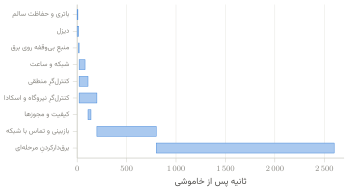
restart sequence after a total blackout (teaching durations)
step start s end s
DC and protection healthy (on battery) 0 0
diesel generator start and supply 0 15
UPS back on mains, essential AC 15 20
network switches and time server boot 20 80
PLC pair boot and self-test 20 110
PPC and SCADA servers boot 20 200
I/O quality good, permissives evaluated 110 140
operator checks, grid operator called 200 800
energisation stages S0-S4 (ch 23) 800 2600
back to export after about 43 minutes, most of it
people and checks, not machines: the sequence is written
down, each step has a 'ready' signal, and the plant
cannot be energised before the PPC and protection say
they are healthyمثال 34.29 (بیشترِ زمان، آدمها) پرسش. پس از خاموشیِ کامل، نیروگاه چه وقت دوباره صادر میکند و بیشترِ زمان صرفِ چه میشود؟
پاسخ. حدودِ ۴۳ دقیقه. بیشترِ زمان بازبینیها، تماس با بهرهبردارِ شبکه و برقدارکردنِ مرحلهای است، نه بالا آمدنِ دستگاهها.
تفسیر. ترتیب نوشته میشود و هر گام سیگنالِ «آماده» دارد. نیروگاه پیش از اینکه کنترلگر و حفاظت سالم بودنشان را اعلام کنند برقدار نمیشود. مرحلههای برقدارکردن همانهای فصلِ ۲۳اند (بخش 23.7.3). وارسی: \(2{,}600\,\text{s} \approx 43\) دقیقه.
34.6.7 آزمونهای از دست رفتنِ تغذیه
loss-of-supply test matrix (commissioning, teaching)
6 supplies x 2 plant states = 12 tests
each test: open the supply's isolating device by the
commissioning procedure (authorised staff, no work on live
parts), record alarms, times and outputs, restore, compare
with the written intent of the loss table; the battery
autonomy itself is proved by a capacity test of the
battery, not by draining the plant's battery in serviceایده. هر آزمون با بازکردنِ وسیلهٔ جداکنندهٔ همان تغذیه طبقِ روشِ راهاندازی انجام میشود. افرادِ مجاز آن را انجام میدهند و کار روی بخشهای برقدار نیست. هشدارها، زمانها و خروجیها ثبت و با نیتِ جدولِ رفتار مقایسه میشوند. مدتِ کارِ باتری با آزمونِ ظرفیتِ خودِ باتری ثابت میشود، نه با تخلیهٔ باتریِ نیروگاه در حالِ کار.
- چرا تغذیهٔ 24 V از باتری گرفته میشود، نه از منبعِ بیوقفه؟
- معادلهٔ 34.14 را توضیح دهید.
- چرا افتِ ولتاژ در پایانِ تخلیه وارسی میشود، نه در ولتاژِ شناور؟
- دو آستانهٔ هشدارِ کمولتاژی چه کاری را آغاز میکنند؟
- چرا از دست رفتنِ کلِ ولتاژِ مستقیم نیروگاه را قطع میکند؟
- جداکردنِ بارهای منبعِ بیوقفه به چه ترتیبی است؟
- چرا نیروگاه پیش از سالمبودنِ کنترلگر برقدار نمیشود؟
- مدتِ کارِ باتری چگونه ثابت میشود؟
34.6.8 زمانِ نگهداشتِ منبعِ تغذیهٔ ۲۴ ولت
ایده. منبعِ تغذیهٔ سوئیچینگی که از برقِ متناوب تغذیه میشود، خازنی بزرگ پس از یکسوساز دارد. وقتی ورودی قطع شود، این خازن تا وقتی ولتاژش به آستانهٔ خاموشی برسد بار را نگه میدارد. این زمانِ نگهداشت از انرژیِ خازن به دست میآید:
\[ t_\text{h} = \frac{C_\text{b}\left(V_1^2 - V_2^2\right)}{2\,P_\text{in}} \tag{34.16}\]
در این رابطه \(C_\text{b}\) ظرفیتِ خازن، \(V_1\) ولتاژِ آن در لحظهٔ قطع، \(V_2\) ولتاژی که منبع در آن خاموش میشود و \(P_\text{in}\) توانِ ورودی (توانِ خروجی تقسیم بر بازده) است.
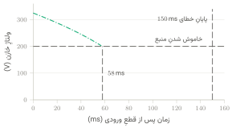
hold-up of a 480 W, 24 V supply fed from 230 V AC (teaching)
bulk capacitor 940 uF charged to 325 V; stops below 200 V
load % load W hold-up ms
100 480 58
50 240 116
25 120 231
a supply's own capacitor bridges a few tens of
milliseconds at full load - enough for a switching
transient, not for a grid fault cleared in 150 ms
(ch 28); loading a supply to half its rating doubles
the bridge, but control that must ride through a fault
is fed from the battery or the UPS (lesson E)مثال 34.30 (پنجاهوهشت میلیثانیه) پرسش. منبعِ 24 V و 480 W خازنِ 940 µF با ولتاژِ 325 V دارد و زیرِ 200 V خاموش میشود. بازده 90 % است. زمانِ نگهداشت در بارِ کامل چقدر است؟ آیا از خطای 150 ms شبکه عبور میکند؟
پاسخ. انرژیِ قابلِ استفاده \(\tfrac{1}{2} \times 940 \times 10^{-6} \times (325^2 - 200^2) = 30.8\,\text{J}\) و توانِ ورودی \(480/0.9 = 533\,\text{W}\) است. پس \(t_\text{h} = 58\,\text{ms}\). منبع از خطای 150 ms عبور نمیکند.
تفسیر. خازنِ منبع برای گذرهای کلیدزنی کافی است، نه برای خطای شبکه. نیمبار کردنِ منبع زمان را دو برابر میکند ولی هنوز به 150 ms نمیرسد. کنترلی که باید از خطا عبور کند، از باتری یا منبعِ تغذیهٔ بیوقفه تغذیه میشود (بخش 34.6.1). وارسی: در یکچهارمِ بار، زمان چهار برابر است: 231 ms.
34.6.9 عبورِ بارهای کنترلی از افتِ ولتاژ
a dip to 0.2 pu for 150 ms at the POC (ch 28 profile, teaching)
load fed from bridge ms result
plant controller and I/O 24 V from 110 V DC battery rides through
protection relays 110 V DC battery rides through
network switches 24 V from 110 V DC battery rides through
operator HMI UPS battery rides through
cabinet fan 230 V AC direct 20 restarts
battery HVAC compressor 400 V AC direct 10 restarts, 3 min
cooling pump (self-holding) 230 V AC coil 15 STAYS OFF
POC transducer 24 V from 230 V AC 58 READING LOST
2 loads fail the plant: a pump that stays off until
someone restarts it, and a controller that loses its
POC reading in the very fault it must answer; both move
to the DC supply or get a delayed drop-out. Loads that
restart by themselves may stay on AC if their restart
time fits the thermal budget (3 min of compressor delay
against the battery's margin, ch 19)ایده. نیروگاه باید از افتِ کوتاهِ ولتاژِ شبکه عبور کند (فصلِ ۲۸). بارهای کمکیِ خودِ نیروگاه هم همان افت را میبینند. بارهایی که از باتری یا منبعِ بیوقفه تغذیه میشوند، چیزی نمیفهمند. بارهای متناوب در چند میلیثانیه رها میشوند. پرسش این است که پس از رها شدن چه میکنند. بادزنِ تابلو خودش دوباره راه میافتد. کمپرسورِ تهویه پس از تأخیرِ ضدِ چرخهٔ سهدقیقهای برمیگردد. پمپی که کنتاکتورِ خودنگهدار دارد، خاموش میماند تا کسی آن را روشن کند. مبدلی که منبعِ متناوب دارد، اندازهگیریِ نقطهٔ اتصال را درست در همان خطایی از دست میدهد که کنترلگر باید به آن پاسخ دهد.
مثال 34.31 (عبور از خطا، سپس قطع به دستِ خود) پرسش. کدام بارهای جدولِ بالا نیروگاه را پس از عبور از خطای 150 ms از کار میاندازند و چه باید کرد؟
پاسخ. دو بار: پمپِ خنککاری با کنتاکتورِ خودنگهدار و مبدلِ اندازهگیریِ نقطهٔ اتصال با منبعِ متناوب. هر دو به تغذیهٔ مستقیمِ باتری منتقل میشوند یا کنتاکتورِ با رهاییِ تأخیری میگیرند. بارهایی که خودشان راه میافتند، روی برقِ متناوب میمانند، به شرطِ آنکه زمانِ برگشتشان در بودجهٔ گرماییِ ظرفِ باتری بگنجد (فصلِ ۱۹).
تفسیر. نیروگاهی که از خطا عبور کند و سپس به دستِ بارهای کمکیِ خودش قطع شود، الزامِ عبور از خطا را برآورده نکرده است. فهرستِ بارها با ستونِ «پس از رها شدن» بخشی از طراحیِ تغذیهٔ کنترل است. آزمونش روی تجهیزِ جداشده و با منبعِ آزمون انجام میشود، نه روی شبکهٔ برقدار (بخش 34.6.7). وارسی: فقط بارهایی که پلشان کوتاهتر از 150 ms است رها میشوند: 10، 15، 20 و 58 ms.
- معادلهٔ 34.16 را توضیح دهید.
- چرا نیمبار کردنِ منبع زمانِ نگهداشت را دو برابر میکند؟
- کدام بارهای کمکی پس از رها شدن خودشان برنمیگردند؟
- چرا از دست رفتنِ اندازهگیریِ نقطهٔ اتصال در خطا خطرناک است؟
- بارِ کمکی با کدام شرط میتواند روی برقِ متناوب بماند؟
34.7 ج. واسطهای سامانهٔ حریق
سامانهٔ حریق و کنترلِ نیروگاه با هم حرف میزنند، اما یکی نیستند. سامانهٔ حریق از جانِ آدمها و از دارایی محافظت میکند و تابعِ راهبردِ حریق و مقامِ مسئول است (فصلِ ۳۲). کنترلِ نیروگاه تولید را پیش میبرد. هیچ دستورِ تولید، هیچ دلیلِ درآمدی و هیچ خرابیِ کنترلگر نباید بتواند یک اقدامِ ایمنیِ جانی را متوقف یا لغو کند. این بخش واسط را از نگاهِ کنترل تعریف میکند:
- سیگنالها و قاعدههایشان؛
- اینکه چه کسی تأیید میکند و چه کسی بازنشانی؛
- تغذیهٔ مستقلِ تابلوی حریق؛
- اقدامهای سیمکشیشده و مستقل از کنترلگر؛
- رفتار در خرابیِ خودِ واسط؛
- دسترسپذیریِ مسیرها.
هیچ آشکارسازی یا اطفایی تجویز نمیشود. اینها را راهبردِ حریق، طراحِ سامانهٔ حریق و مقامِ مسئول تعیین میکنند (U-110، A-390).
برنامه:
python -m companion.ch34.examples_f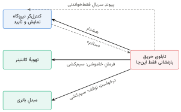
34.7.1 سیگنالها و قاعدههایشان
def check_fire(rows) -> list[str]:
"""Rules: alarms to the plant are normally-closed contacts; commands
are hard-wired, never over the serial link; only the fire panel
resets."""
errs = []
for sig, direc, kind, fail, reset in rows:
if direc == "fire -> plant" and kind.startswith("hardwired") \
and "NC" not in kind:
errs.append(f"{sig}: alarm contact not fail-safe")
if ("command" in sig or "request" in sig) and "serial" in kind:
errs.append(f"{sig}: command over the serial link")
if reset not in ("fire panel", "n/a"):
errs.append(f"{sig}: reset outside the fire panel")
return errsfire-system interface signals and their checks (teaching)
signal path failure state
fire alarm, any zone hardwired NC alarm
fault / supervisory hardwired NC alarm
BESS container fire, per container hardwired NC alarm
HVAC shutdown command hardwired HVAC off
PCS trip request hardwired trip
zone status and text serial, read-only stale flag
plant controller healthy hardwired NC alarm on fire panel
draft findings (3):
fire alarm, any zone: alarm contact not fail-safe
BESS container fire, per container: reset outside the fire panel
PCS trip request: command over the serial link
the list above: 0 findings
the alarm contacts open on alarm and on a broken wire, so
a cut cable looks like an alarm, not like silence; the
serial link only adds detail and carries no commandمثال 34.32 (سه خطا در پیشنویس) پرسش. پیشنویسِ فهرستِ سیگنالهای حریق را با سه قاعده بررسی کنید.
پاسخ. سه یافته:
- هشدارِ «هر ناحیه» با کنتاکتِ باز در حالتِ عادی بسته شده است. سیمِ بریده سکوت میشود، نه هشدار.
- درخواستِ توقفِ مبدلِ باتری از راهِ پیوندِ سریال میرود. فرمان روی پیوندی میرود که فقط برای جزئیات است.
- بازنشانیِ آتشِ کانتینر از نمایشگرِ نیروگاه انجام میشود، نه از تابلوی حریق.
تفسیر. فهرستِ اصلاحشده هیچ یافتهای ندارد. کنتاکتهای هشدار هم در هشدار و هم در سیمِ بریده باز میشوند. پس کابلِ بریده مانندِ هشدار دیده میشود، نه مانندِ سکوت. وارسی: سه قاعده و سه یافته، یکی برای هر قاعده.
34.7.3 تغذیهٔ مستقلِ تابلوی حریق
the fire panel's own standby battery (teaching currents and times)
standby 1.2 A x 24 h + alarm 4.0 A x 0.5 h = 30.8 Ah
with 25 % for ageing: 38.5 Ah -> next size 40 Ah
the hours come from the fire code and the fire strategy;
the point is independence: the fire panel does not borrow
the plant's 110 V battery or UPS, so a plant blackout
cannot silence it (lesson E)ایده. ساعتهای آمادهبهکار و هشدار را آییننامهٔ حریق و راهبردِ حریق تعیین میکنند. عددهای این درس فقط روش را نشان میدهند. نکتهٔ اصلی استقلال است: تابلوی حریق از باتریِ 110 V یا منبعِ بیوقفهٔ نیروگاه وام نمیگیرد. پس خاموشیِ نیروگاه نمیتواند آن را خاموش کند (بخش 34.6.1).
34.7.4 اقدامهای سیمکشیشده، مستقل از کنترلگر
BESS container fire: HVAC off and PCS stop - by which path?
hard-wired from the fire panel: relay about 20 ms
through the plant PLC: up to 160 ms
both are fast enough; the reason for the hard-wired path
is independence: a PLC that is stopped, being programmed
or faulty cannot block a life-safety action; the PLC gets
a copy of the signal to log and display, and its own
stop of the PCS is a second, not the only, pathمثال 34.33 (سرعت دلیل نیست، استقلال است) پرسش. خاموشکردنِ تهویه و توقفِ مبدلِ باتری در آتشِ کانتینر از کدام مسیر برود؟ چرا؟
پاسخ. مستقیم از تابلوی حریق، با سیمکشی. مسیرِ سیمکشی حدودِ 20 ms است و مسیرِ کنترلگر تا 160 ms. هر دو سریعاند.
تفسیر. دلیلِ مسیرِ سیمکشی استقلال است. کنترلگری که متوقف است، در حالِ برنامهریزی است یا خراب است، نمیتواند اقدامِ ایمنیِ جانی را متوقف کند. کنترلگر رونوشتِ سیگنال را برای ثبت و نمایش میگیرد. توقفِ مبدلِ باتری از سوی کنترلگر مسیرِ دوم است، نه تنها مسیر. وارسی: \(160/20 = 8\) برابر.
34.7.5 رفتار در خرابیِ خودِ واسط
behaviour when the interface itself fails (teaching design intent)
failure behaviour test
alarm wire cut alarm at the plant (NC opens) T-32
serial link lost detail stale, alarm; no action T-33
plant PLC stopped fire actions still happen T-34
fire panel power lost fault contact opens: alarm T-35
plant 'healthy' to fire panel lost fault shown on fire panel T-36
every failure ends in an alarm someone sees, never in a
silent loss; none of them starts or stops generation by
itself except the fire panel's own commandsایده. هر خرابیِ واسط به هشداری ختم میشود که کسی آن را میبیند، هرگز به از دست رفتنِ بیصدا. هیچکدام بهتنهایی تولید را آغاز یا متوقف نمیکند، جز فرمانهای خودِ تابلوی حریق. هر سطر یک موردِ آزمون دارد که در آزمونِ یکپارچهٔ علت و معلول اجرا میشود (بخش 32.6.2).
34.7.6 دسترسپذیریِ مسیرِ هشدار
availability of the alarm path to the plant (teaching rates)
hard-wired contact path: 0.070 h a year unavailable
two switches and the PLC in series: 0.82 h a year
the networked path is also good, but it fails with every
network or PLC fault, the ones a fire may cause; the
hard-wired path is short, supervised and independentایده. مسیرِ شبکهای هم خوب است، اما با هر خرابیِ شبکه یا کنترلگر از کار میافتد، یعنی همان خرابیهایی که خودِ آتش ممکن است بسازد. مسیرِ سیمکشی کوتاه، پایششده و مستقل است. پیوندِ سریال جزئیات را میآورد، اما فرمانی نمیبرد.
طراحیِ آشکارسازی، هشدار، اطفا و ماتریسِ علت و معلولِ حریق کارِ طراحِ صلاحیتدارِ سامانهٔ حریق است. پذیرشِ آن با مقامِ مسئول است. این بخش فقط واسطِ آن با کنترلِ نیروگاه را تعریف میکند.
- چرا هشدارهای حریق با کنتاکتِ بسته در حالتِ عادی بسته میشوند؟
- چرا فرمانی روی پیوندِ سریال نمیرود؟
- تأیید و بازنشانی چه تفاوتی دارند؟
- چرا تابلوی حریق باتریِ خودش را دارد؟
- دلیلِ مسیرِ سیمکشی سرعت است یا استقلال؟
- از دست رفتنِ تغذیهٔ تابلوی حریق در نیروگاه چگونه دیده میشود؟
- چرا مسیرِ شبکهای در آتش کماعتمادتر است؟
34.8 چ. واسطهای کنترلِ خدماتِ شبکه
فصلِ ۲۰ تعیین کرد کنترلگرِ نیروگاه چه کند: اولویتها، تعارضها، ذخیره و حالتِ پشتیبان (بخش 20.3.7، بخش 20.8.2). این بخش واسطی را میسازد که این کارها از راهِ آن انجام میشوند:
- منبعهای نقطهٔ تنظیم؛
- اعتبارسنجیِ پیامها؛
- نقطهٔ تنظیمِ کهنه و حالتِ پشتیبان؛
- بودجهٔ تأخیر و دقتِ دورسنجی؛
- تعارضِ دو حد در یک لحظه؛
- آزمونهای هر حالتِ کنترل.
فقط خدماتی ساخته میشوند که اتصال به شبکه بخواهد یا پروژه پیشنهاد کند. REQ-S01 همان خدمتِ فرضیِ فصلِ ۲۰ است. الزامهای واقعیِ واسط را توافقنامهٔ اتصال و بهرهبردارِ شبکه تعیین میکنند (U-115، A-391).
برنامه:
python -m companion.ch34.examples_g34.8.1 منبعهای نقطهٔ تنظیم
set-point sources of the plant controller (teaching; ch 20 priorities)
source set points priority
grid operator (RTU) export limit, Q or V set point 1
status: required (placeholder)
service call (REQ-S01) upward reserve 5 MW, 18-22 h 2
status: hypothetical
EMS schedule battery plan, export plan 3
status: project
local operator test values, maintenance limits by permit
status: project
safety and protection sit above all of them; a source
that is neither required nor permitted is not wired in
'in case' - an unused input is a door left open (ch 36)ایده. ایمنی و حفاظت بالای همهاند. منبعی که نه لازم است و نه مجاز، «برای احتیاط» سیمکشی نمیشود. ورودیِ بیاستفاده دری است که باز مانده است (فصلِ ۳۶).
34.8.2 اعتبارسنجیِ پیامها
def quality(ma: float, age_s: float, max_age_s: float = 10.0) -> str:
"""Quality of an analogue value: 'bad' outside 3.6-21 mA (broken or
failed loop), 'stale' when not refreshed in time, else 'good'."""
if ma < 3.6 or ma > 21.0:
return "bad"
if age_s > max_age_s:
return "stale"
return "good"
def validate_setpoint(sp: float, lo: float, hi: float, last: float,
max_step: float) -> tuple[float, str]:
"""Accept a received setpoint only inside its range and step limit;
otherwise keep the last accepted value and say why."""
if not lo <= sp <= hi:
return last, "out of range"
if abs(sp - last) > max_step:
return last, "step too large"
return sp, "accepted"export-limit set points as received and as accepted (MW, teaching)
range 0-100 MW; ramp 10 MW a minute, so one message
may move the limit by at most 30 MW (messages 60 s apart, 3x margin)
time s received accepted reason
0 100 100 accepted
60 80 80 accepted
120 140 80 out of range
180 40 80 step too large
240 70 70 accepted
300 60 60 accepted
a set point outside its range is a corrupted or wrong
message; a jump larger than allowed may be real (an
emergency) - the rule and what happens next (reject and
alarm, or ramp to it) is agreed with the grid operator,
written in the interface specification and testedمثال 34.34 (دو پیامِ رد شده) پرسش. از شش پیامِ سقفِ صادرات کدامها پذیرفته نمیشوند و چرا؟
پاسخ. 140 MW، چون بیرون از برد است. 40 MW، چون گامِ 40 MW بیش از 30 MW مجاز است. در هر دو حالت سقفِ پیشین، 80 MW، میماند.
تفسیر. پیامِ بیرون از برد خراب یا اشتباه است. اما جهشِ بزرگتر از حد ممکن است واقعی باشد، مثلاً در یک وضعِ اضطراری. قاعده و پیامدش، یعنی ردکردن و هشدار یا رفتن با شیب به سوی آن، با بهرهبردارِ شبکه توافق، در مشخصاتِ واسط نوشته و آزموده میشود. وارسی: \(|40 - 80| = 40 > 30\).
34.8.3 نقطهٔ تنظیمِ کهنه و حالتِ پشتیبان
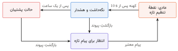
a lost link to the grid operator, step by step (teaching timings)
t s mode
0 link healthy, set points every 4 s
100 link lost
110 set point stale: hold last value, alarm
3700 1 h without link: fallback schedule (ch 20)
5500 link back: wait for a fresh set point
5504 fresh set point accepted, normal mode
the plant never invents a set point: it holds, then
follows a pre-agreed fallback, and returns only on a
fresh, valid message - each mode change is time-stamped
and sent to the operator when the link returnsایده. نیروگاه هرگز نقطهٔ تنظیم نمیسازد. نخست نگه میدارد، سپس یک حالتِ پشتیبانِ توافقشده را دنبال میکند، و فقط با پیامی تازه و معتبر به حالتِ عادی برمیگردد. هر تغییرِ حالت برچسبِ زمان میگیرد و پس از بازگشتِ پیوند برای بهرهبردار فرستاده میشود.
34.8.4 دورسنجی: سنِ مقدار و کیفیتِ آن
telemetry of active power to the grid operator (teaching budget)
part ms
meter and transducer 100
PPC cycle 200
plant network to RTU 100
RTU to control centre 400
total 800 ms against a placeholder of 1,000 ms
accuracy, CT + VT + meter of class 0.2: +/-0.40 % (k = 2)
the operator needs both numbers: how old the value is and
how good it is - each value travels with its quality and
a time stamp from the synchronised clock (lesson A)مثال 34.35 (هشتصد میلیثانیه و چهار دهم درصد) پرسش. تأخیر و دقتِ دورسنجیِ توانِ اکتیو به مرکزِ کنترلِ شبکه چقدر است؟
پاسخ. 800 ms در برابرِ جایگزینِ 1,000 ms، و ±0.40 % با ترانسفورماتورهای جریان و ولتاژ و کنتورِ کلاسِ 0.2.
تفسیر. بهرهبردار هر دو عدد را لازم دارد: مقدار چقدر کهنه است و چقدر خوب. هر مقدار با پرچمِ کیفیت و برچسبِ زمانِ ساعتِ همگام میرود (بخش 34.2.8). حدِ واقعیِ تأخیر و دقت را الزامهای بهرهبردار تعیین میکنند (U-115). وارسی: \(100 + 200 + 100 + 400 = 800\).
34.8.5 دو حد در یک لحظه
two limits at once at 19:00 (teaching): which wins?
available 92 MW; grid operator export limit 80 MW; REQ-S01 reserve 5 MW
export set point = min(available - reserve, limit) = 80 MW
headroom above the set point: 12 MW, more than the 5 MW reserve
both are honoured because they ask for compatible things;
when they cannot both be met, the priority of ch 20
decides (operator limit above the service) and the
shortfall is reported to the service buyer at onceایده. سقفِ بهرهبردار و ذخیرهٔ REQ-S01 اینجا با هم سازگارند، چون حاشیهٔ بالای نقطهٔ تنظیم از ذخیره بیشتر است. وقتی هر دو برآوردنی نباشند، اولویتِ فصلِ ۲۰ تصمیم میگیرد: سقفِ بهرهبردار بالای خدمت است. کمبود هم بیدرنگ به خریدارِ خدمت گزارش میشود (بخش 20.8.2).
34.8.6 آزمونِ حالتهای کنترل
control-mode verification: test points per mode (teaching)
mode test points
export limit 4
Q set point 5
V control (droop) 5
power factor 3
REQ-S01 reserve (if contracted) 4
fallback schedule 2
ramp limit 3
26 test points; each with a pass criterion, e.g. a Q step:
settled to 2 % in 9.2 s against a placeholder of 10 s - pass
tests run first in the simulator, then at site under a
test plan agreed with the grid operator; only modes the
connection requires or the project offers are tested and
enabled - the others stay disabled and are recorded soایده. هر حالت چند نقطهٔ آزمون دارد و هر نقطه معیارِ قبول. آزمونها نخست در شبیهساز و سپس در ساختگاه، با برنامهای توافقشده با بهرهبردار، انجام میشوند (بخش 20.4.7). فقط حالتهایی آزموده و فعال میشوند که اتصال بخواهد یا پروژه پیشنهاد کند. بقیه غیرفعال میمانند و این در پرونده ثبت میشود.
- چهار منبعِ نقطهٔ تنظیم و اولویتشان را بنویسید.
- چرا ورودیِ بیاستفاده سیمکشی نمیشود؟
- دو قاعدهٔ اعتبارسنجیِ پیام کداماند؟
- ترتیبِ حالتها پس از قطعِ پیوند چیست؟
- چرا نیروگاه فقط با پیامِ تازه به حالتِ عادی برمیگردد؟
- دو عددی که بهرهبردار دربارهٔ هر مقدارِ دورسنجی لازم دارد کداماند؟
- چه وقت سقفِ بهرهبردار و ذخیره با هم تعارض پیدا میکنند؟
- چرا حالتهای پیشنهادنشده فعال نمیشوند؟
34.8.7 دقتِ اندازهگیری و دقتِ خدمت
ایده. هر خدمتِ شبکه یک اندازهگیری را از راهِ یک قاعده به توان تبدیل میکند. خطای اندازهگیری هم از همان راه به خطای توان تبدیل میشود. برای افتِ بسامد و افتِ ولتاژ–توانِ واکنشیِ فصلِ ۲۰:
\[ \begin{aligned} \Delta P_\text{e} &= \frac{\delta f / f_\text{n}}{s_\text{d}}\, P_\text{n} \\ \Delta Q_\text{e} &= \frac{\delta V / V_\text{n}}{s_\text{q}}\, Q_\text{max} \end{aligned} \tag{34.17}\]
در این رابطه \(\delta f\) و \(\delta V\) خطاهای اندازهگیریاند و \(s_\text{d}\) و \(s_\text{q}\) شیبهای افت.
34.8.8 خطای بسامد در برابرِ افت
frequency measurement error against the droop (4 %, 110 MW)
frequency error mHz power error MW share of the 20 mHz deadband
1 0.06 5 %
5 0.28 25 %
10 0.55 50 %
20 1.10 100 %
a 10 mHz error moves the edge of the deadband by half its
width and the response by half a megawatt, in the same
direction for hours: the frequency input is specified in
millihertz, with its window, and checked in the
frequency-response test (ch 27, ch 50)ایده. با افتِ 4 % و پایهٔ 110 MW، هر ده میلیهرتز خطا 0.55 MW پاسخِ نادرست میدهد. این خطا نیمی از پهنای نوارِ مردهٔ 20 mHz است. خطای اندازهگیریِ بسامد معمولاً یکسویه است و ساعتها میماند. پس دقتِ ورودیِ بسامد با میلیهرتز و پنجرهٔ اندازهگیری مشخص و در آزمونِ پاسخِ بسامدی وارسی میشود (فصلهای ۲۷ و ۵۰).
34.8.9 خطای ولتاژ در برابرِ افتِ توانِ واکنشی
voltage measurement error against the Q-V droop (4 %, 33 Mvar)
chain error % (k = 2) reactive error Mvar
VT class 0.5 chain (lesson A) 0.66 5.4
VT class 0.2 chain 0.39 3.2
a voltage error of a few tenths of a per cent becomes
several megavars through a steep droop - a sixth of the
33 Mvar with the class 0.5 core; this is why the
controller reads the class 0.2 core, and why the voltage
set point and its measurement are agreed with the grid
operator as a pair (U-115)مثال 34.36 (پنج مگاوار از هیچ) پرسش. کنترلگر با شیبِ 4 % و 33 Mvar کار میکند. اگر ولتاژ را از زنجیرهٔ کلاسِ 0.5 با عدمِ قطعیتِ ±0.66 % بخواند، خطای توانِ واکنشی چقدر است؟ با کلاسِ 0.2 چطور؟
پاسخ. \(\Delta Q_\text{e} = (0.0066/0.04) \times 33 = 5.4\,\text{Mvar}\)، یعنی یکششمِ 33 Mvar. با کلاسِ 0.2: \((0.0039/0.04) \times 33 = 3.2\,\text{Mvar}\).
تفسیر. شیبِ تند خطای کوچکِ ولتاژ را بزرگ میکند. یافتهٔ بخش 34.2.4، یعنی خواندنِ هستهٔ کلاسِ 0.2، اینجا به مگاوار ترجمه میشود. نقطهٔ تنظیمِ ولتاژ و اندازهگیریاش با بهرهبردارِ شبکه بهصورتِ یک جفت توافق میشوند (U-115). وارسی: \(0.66\,\% / 4\,\% = 0.165\) و \(0.165 \times 33 = 5.4\).
34.8.10 دقتِ توانِ اکتیو در برابرِ رواداری
active power at the POC against a tolerance of +/-1 % (placeholder)
measurement (CT, VT, transducer of class 0.2; k = 2): +/-0.40 %
control error band (teaching): +/-0.50 %
together 0.64 % of a 1.00 % tolerance: 64 % of it used
a tolerance is shared between the controller and the
meter; the grid operator's own meter judges the plant,
so the plant's measurement is compared with it during
commissioning and any offset written down (ch 50)ایده. رواداریِ پیروی از نقطهٔ تنظیم میانِ کنترلگر و اندازهگیری تقسیم میشود. با عددهای آموزشی، اندازهگیریِ کلاسِ 0.2 و نوارِ خطای کنترلِ ±0.5 % با هم 64 % رواداریِ فرضیِ ±1 % را مصرف میکنند. رواداریِ واقعی را بهرهبردارِ شبکه تعیین میکند. کنتورِ بهرهبردار داور است، پس اندازهگیریِ نیروگاه در راهاندازی با آن مقایسه و اختلافش نوشته میشود (فصلِ ۵۰).
34.8.11 نقطهٔ اتصال کجا اندازه گرفته میشود
the PPC measures at the plant end; the POC is at the grid end
line 7.06 km, r 0.12 and x 0.4 ohm/km, 9 nF/km (ch 28)
export MW current A line loss MW line Mvar (net absorbed)
0 0 0.00 -0.35
50 219 0.12 +0.06
100 437 0.49 +1.27
charging 0.35 Mvar; at 100 MW the plant end reads about
0.5 MW and 1.3 Mvar more than the POC receives
the controller either reads the POC itself (a measurement
in the grid bay, with its own delay) or corrects by a
line model with I squared; the choice is part of D-021's
open POC and is recorded in the control narrativeمثال 34.37 (نیم مگاوات در خط) پرسش. کنترلگر در سرِ نیروگاهیِ خطِ 7.06 km اندازه میگیرد، ولی نقطهٔ اتصال ممکن است در سرِ شبکه باشد (فصل 17). در صادراتِ 100 MW اختلافِ توانِ اکتیو و واکنشی میانِ دو سر چقدر است؟
پاسخ. جریان 437 A است. تلفاتِ خط \(3 \times 437^2 \times 0.12 \times 7.06 = 0.49\,\text{MW}\) است. خط \(3 I^2 X = 1.62\,\text{Mvar}\) میگیرد و 0.35 Mvar بارِ خازنی میدهد، پس 1.27 Mvar جذب میکند.
تفسیر. حدِ صادراتی که در نقطهٔ اتصال تعریف شده، در سرِ نیروگاه 0.5 MW بیشتر خوانده میشود. کنترلگر یا خودِ نقطهٔ اتصال را میخواند، با اندازهگیری در بیِ شبکه و تأخیرِ خودش، یا با مدلِ خط و جملهٔ \(I^2\) تصحیح میکند. این انتخاب بخشی از نقطهٔ اتصالِ بازِ D-021 است و در روایتِ کنترل نوشته میشود. وارسی: در صادراتِ صفر، خط فقط بارِ خازنی دارد: 0.35 Mvar تولید.
- معادلهٔ 34.17 را توضیح دهید.
- خطای 10 mHz با افتِ 4 % و 110 MW چند مگاوات است؟
- چرا شیبِ تندِ افتِ ولتاژ خطای اندازهگیری را بزرگ میکند؟
- رواداریِ پیروی از نقطهٔ تنظیم میانِ چه چیزهایی تقسیم میشود؟
- چرا کنتورِ بهرهبردار داورِ نهایی است؟
- دو راهِ کنترلِ توان در نقطهٔ اتصالی که دور از کنترلگر است را بگویید.
34.9 ساخت و تولیدِ صنعتی: دقت و قابلیتِ اطمینان از کارخانه
دقتِ اندازهگیری و قابلیتِ اطمینانِ کنترلگر در کارخانه ساخته میشوند. دقت از راهِ زنجیرهٔ کالیبراسیونی میآید که تا استانداردِ ملی میرسد. قابلیتِ اطمینان از راهِ پیشکارکرد و آزمونهایی میآید که قطعههای ضعیف را پیش از ارسال پیدا میکنند. کیفیتِ سیمکشیِ تابلو هم از راهِ کارگاهی میآید که فرایندش زیرِ کنترل است. این بخش هر سه را با عدد میسنجد و آنها را به فصلهای ۴۰ و ۴۸ پیوند میدهد (A-392).
برنامه:
python -m companion.ch34.examples_k34.9.1 زنجیرهٔ کالیبراسیون
the calibration chain of a 4-20 mA transmitter (teaching, % of span)
level uncertainty ratio to the next level
national standard 0.002 2.5 : 1
accredited lab reference 0.005 2.0 : 1
factory working standard 0.010 2.5 : 1
field calibrator 0.025 8.0 : 1
the whole chain adds up to 0.0275 %, 10 % more than the calibrator alone
the field calibrator checks a 0.2 % transmitter at 8:1;
the 4:1 rule of thumb is for that pass/fail check, so the
calibrator's own error does not decide it; the upper
levels work at smaller ratios because each states its
uncertainty on a certificate that names the level above
it, and the uncertainties are added (ch 2, ch 48)ایده. کالیبراتورِ میدانی فرستندهٔ 0.2 % را با نسبتِ 8:1 وارسی میکند. قاعدهٔ سرانگشتیِ 4:1 برای همین داوریِ قبول و رد است تا خطای خودِ کالیبراتور نتیجه را تعیین نکند. ترازهای بالاتر با نسبتهای کمتر کار میکنند. دلیلش این است که هر تراز عدمِ قطعیتش را روی گواهیای مینویسد که ترازِ بالاتر را نام میبرد، و عدمِ قطعیتها با هم جمع میشوند. این همان ردیابیپذیری است (فصلِ ۲). کلِ زنجیره تنها 10 % به عدمِ قطعیتِ کالیبراتور میافزاید.
34.9.2 پیشکارکرد در برابرِ خرابیهای زودرس
burn-in against early failures: 2 % weak modules among good ones
weak: mean life 100 h; good: MTBF 200,000 h; 300 modules
burn-in h found in factory failing in the field, first year
0 0.0 18.6
72 3.1 15.5
168 4.9 13.7
burn-in removes the weak modules where a replacement is
cheap; it cannot touch the random failures of good ones
(about 13 a year here), which spares and redundancy
handle - the FAT of ch 40 asks for the burn-in recordمثال 34.38 (پیشکارکرد چه چیزی را درمان نمیکند) پرسش. از ۳۰۰ کارت، 2 % ضعیفاند. پیشکارکردِ ۷۲ ساعته چند خرابی را به کارخانه برمیگرداند؟
پاسخ. حدودِ 3.1 کارت. خرابیهای سالِ نخست در میدان از 18.6 به 15.5 میرسد، و با ۱۶۸ ساعت به 13.7.
تفسیر. پیشکارکرد قطعههای ضعیف را جایی پیدا میکند که تعویض ارزان است. اما خرابیهای تصادفیِ قطعههای سالم، حدودِ ۱۳ در سال، را درمان نمیکند. آنها را یدکی و افزونگی مدیریت میکنند (بخش 34.3.7). آزمونِ پذیرشِ کارخانه سابقهٔ پیشکارکرد را میخواهد (فصلِ ۴۰). وارسی: \(6 \times (1 - e^{-0.72}) = 3.1\).
34.9.3 نمونهگیری از سیمکشیِ تابلو
panel wiring checked by sample at the factory (teaching)
2,400 terminations; 125 checked by pull test and drawing; 1 wrong
defect rate estimate 0.8 % (90 % range 0.14 - 3.1 %)
expected wrong terminations in the panel: about 19
a sample cannot prove the rest right: every I/O point is
still tested end to end in the FAT and the loop checks
(lesson C) - the sample tells whether the wiring shop's
process is under control (ch 48)ایده. یک خطا در ۱۲۵ نمونه، نرخی حدودِ 0.8 % برآورد میکند و این یعنی حدودِ ۱۹ اتصالِ نادرست در کلِ تابلو. نمونه ثابت نمیکند بقیه درستاند. هنوز هر نقطه سرتاسر در آزمونِ پذیرشِ کارخانه و وارسیِ حلقه آزموده میشود (بخش 34.4.7). نمونه فقط میگوید فرایندِ کارگاه زیرِ کنترل است یا نه (فصلِ ۴۸).
- نسبتِ 4:1 برای چیست؟
- ردیابیپذیری یعنی چه؟
- پیشکارکرد کدام خرابیها را حذف میکند و کدام را نه؟
- چرا نمونهگیری جای آزمونِ نقطهبهنقطه را نمیگیرد؟
34.10 نیروگاهِ P: سه مثالِ یکپارچه
برنامه:
python -m companion.ch34.integratedمثال 34.39 (مقدماتی: دو نتیجه با دست) پرسش. جریانِ حلقهٔ ولتاژِ 132 kV و مقاومتِ دماسنجِ پلاتینی در 95 °C را با دست حساب و با کد مقایسه کنید.
two I&C results checked by hand
132 kV on a 0-150 kV transducer: 4 + 16 x 132/150 = 18.08 mA; code 18.08
Pt100 at 95 deg C: 100 (1 + 0.0039083 x 95 - 5.775e-7 x 95^2) = 136.61 ohm;
code 136.61
a hand check of the scaling catches the commonest I/O
error: a range typed in the wrong units or a 0-20 mA
channel read as 4-20 mAپاسخ. 18.08 mA و 136.61 Ω، هر دو برابر با کد.
تفسیر. وارسیِ دستیِ مقیاس رایجترین خطای فهرستِ ورودی را پیدا میکند: بردی که با یکای نادرست نوشته شده، یا کانالِ ۰ تا ۲۰ میلیآمپری که ۴ تا ۲۰ خوانده شده است. وارسی: \(16 \times 132/150 = 14.08\) و \(4 + 14.08 = 18.08\).
مثال 34.40 (میانی: بستهٔ ابزارِ دقیق و کنترل در عدد) پرسش. بستهٔ ابزارِ دقیق و کنترلِ نیروگاهِ P چه اندازهای دارد؟
the I&C package of Plant P in numbers
hard-wired I/O: 71 AI, 185 DI, 44 DO = 300 points,
29 modules with 20 % spare
POC voltage chain: +/-0.66 % (k = 2) with a class 0.5 VT,
+/-0.39 % with class 0.2
PLC response budget 160 ms; controller cycle <= tau / 4
FAT about 48 h of point tests and functions; site loop checks
8 crew-days; 12 loss-of-supply tests; 26 control-mode test points
fire interface: 7 signals, hard-wired NC alarms, reset at
the fire panel only
110 V DC autonomy 4.5 h with the 24 V loads (requirement 4 h)تفسیر. عددهای بسته کماند و بیشترشان آموزشی. ارزشِ بسته در فهرستها، ماتریسها، روایتها و آزمونهایی است که هر عدد را به شاهد میرسانند. وارسی: \(71 + 185 + 44 = 300\) نقطه.
مثال 34.41 (یکپارچه: مبنای ابزارِ دقیق و کنترلِ نیروگاهِ P) پرسش. مبنای ابزارِ دقیق و کنترل را با یافتهها و موردهای باز بنویسید.
D-038 instrumentation and control basis of Plant P (teaching)
1 measurement: 4-20 mA with live zero and quality (3.6-21 mA),
POC voltage from a class 0.2 VT core, synchronised clocks with
a 'synchronised' flag on every time stamp, calibration
intervals from recorded drift
2 control: protection never in the PLC; PLC 50 ms scan; PPC
cycle <= tau / 4 with its computing delay; permissives fail
safe on bad quality; heartbeat watchdog set from the measured
packet loss; redundant PLC pair in separate cabinets
3 design: I/O list with checker, control C&E with a test per
effect, configuration fingerprints, FAT with a punch list
4 control power: 24 V from the 110 V battery, far-panel DC
feeders sized at end-of-discharge voltage (10 mm2, not 2.5),
cabinet temperature alarmed, written restart sequence
5 fire interface: hard-wired, normally closed, independent of
the PLC; acknowledge at the HMI, reset at the fire panel
6 grid services: set points validated, held when stale, fallback
after 1 h (ch 20), modes enabled only when required or offered
7 later findings: metering/control CT core of an extended-range
class (night current 1.5 % of rated); PPC cycle <= 0.66 s for
a 45 deg phase margin; short pulses latched, never scanned;
bumpless transfer by tracking and a ramped set point; the
POC transducer and self-holding pump contactors on DC so
the plant does not trip on its own auxiliaries after a
fault; POC measured in the grid bay or corrected by a line
model (D-021); supplies replaced on a set interval
open: grid operator's interface requirements (U-115), makers'
I/O and accuracy data (U-116)تفسیر. این تصمیمِ D-038 است. یافتههایی که به فصلهای دیگر برمیگردند:
- بارهای 24 V کنترل 4.7 A به باتریِ 110 V فصلِ ۲۳ میافزایند. مدتِ کار 4.5 ساعت میشود که هنوز کافی است. فهرستِ بار در یک سند و با یک مالک نگه داشته میشود.
- فیدرِ مستقیمِ تابلوی دور با 2.5 mm² در پایانِ تخلیه حفاظت را خاموش میکند. این فیدر به 10 mm² میرسد (فصلهای ۲۳ و ۲۴).
- ترانسفورماتورِ ولتاژِ کلاسِ 0.5 دقتِ کنترلِ ولتاژ را محدود میکند. کنترلگر از هستهٔ کلاسِ 0.2 میخواند (فصلهای ۲۵ و ۲۶).
- تابلوی کنترلگر در روزِ تابستانی بیتهویه از ردهٔ دمایش میگذرد. تهویهٔ اتاقِ کنترل بارِ ضروری است و دمای تابلو در ماتریسِ علت و معلول پاسخ میگیرد (فصلِ ۲۳).
- چرخهٔ کنترلگرِ نیروگاه با تأخیرِ محاسبهاش باید کمتر از یکچهارمِ ثابتِ زمانیِ مزرعه بماند. این قاعده تنظیمهای فصلِ ۲۰ را در اجرا نگه میدارد. حاشیهٔ فازِ ۴۵ درجه همین را با عدد میگوید: چرخه حداکثر 0.66 s (مثال 34.16).
- جریانِ شبانهٔ نیروگاه 1.5 % جریانِ نامیِ هستهٔ 600/1 A است. هستهٔ اندازهگیری و کنترل کلاسِ با بردِ گسترده میگیرد (فصلهای ۲۵ و ۲۶).
- مبدلِ اندازهگیریِ نقطهٔ اتصال و پمپهای با کنتاکتورِ خودنگهدار روی برقِ متناوب نیروگاه را پس از عبور از خطا از کار میاندازند. به تغذیهٔ مستقیم میروند (فصلهای ۲۳ و ۲۸).
- اگر نقطهٔ اتصال در سرِ شبکهٔ خط باشد، سرِ نیروگاه در 100 MW حدودِ 0.5 MW و 1.3 Mvar بیشتر میخواند. جای اندازهگیری با نقطهٔ اتصالِ بازِ D-021 تعیین میشود (فصلِ ۱۷).
34.11 عددهای کلیدیِ ابزارِ دقیق و کنترلِ نیروگاهِ P
| کمیت | مقدار | مثال |
|---|---|---|
| ولتاژِ 132 kV روی بردِ 0 تا 150 kV | 18.08 mA | مثال 34.1 |
| عدمِ قطعیتِ ولتاژ، کلاسِ 0.5 / 0.2 | ±0.66 % / ±0.39 % | مثال 34.2 |
| خطای دماسنجِ دوسیمه، 50 m | +6 K | مثال 34.3 |
| رانشِ ساعتِ بیهمگامی در یک روز | 1.73 s | مثال 34.4 |
| بودجهٔ پاسخِ کنترلگرِ منطقی | 160 ms | بخش 34.3.2 |
| فراجهش با چرخهٔ 1 s | 22 تا 28 % | مثال 34.11 |
| نقطههای سیمکشیشده / کارتها | 300 / 29 | مثال 34.24 |
| مدتِ کارِ باتری با بارهای 24 V | 4.5 h | مثال 34.27 |
| بازگشت پس از خاموشیِ کامل | حدودِ ۴۳ دقیقه | مثال 34.29 |
| تأخیرِ دورسنجی / دقت | 800 ms / ±0.40 % | مثال 34.35 |
| جریانِ شبِ آرام روی هستهٔ 600/1 A | 1.5 % نامی | مثال 34.8 |
| بیشترین چرخهٔ کنترلگر برای حاشیهٔ ۴۵ درجه | 0.66 s | مثال 34.16 |
| زمانِ نگهداشتِ منبعِ 24 V در بارِ کامل | 58 ms | مثال 34.30 |
| خطای توانِ واکنشی، کلاسِ 0.5 / 0.2 | 5.4 / 3.2 Mvar | مثال 34.36 |
| اختلافِ دو سرِ خط در 100 MW | 0.49 MW و 1.27 Mvar | مثال 34.37 |
34.12 گردشِ کارِ ابزارِ دقیق و کنترل
- زنجیرهٔ هر اندازهگیری: برد، حلقه، وضوح، عدمِ قطعیت، کالیبراسیون، فیلتر، زمان (بخش 34.2).
- معماری: لایهها، بودجهٔ پاسخ، چرخهٔ کنترلگر، شرطهای اجازه، نگهبانِ زمانی، رفتار در خرابی، افزونگی (بخش 34.3).
- طراحی و کارخانه: فهرستِ ورودی و خروجی، تابلو، علت و معلول، روایت، پیکربندی، آزمونِ کارخانه، وارسیِ حلقه (بخش 34.4).
- آزمایشگاه: فهرست با بررسیکننده، ردیابیِ یک اندازهگیری، آزمونِ خرابی و حالتِ کارِ کاهشیافته (بخش 34.5).
- تغذیهٔ کنترل: نقشه، بارها، کمولتاژی، رفتار در خرابی، جداکردنِ بار، راهاندازی، آزمونها (بخش 34.6).
- واسطِ حریق: سیمکشیِ ایمن در خرابی، بازنشانی فقط در تابلوی حریق، استقلال از کنترلگر (بخش 34.7).
- واسطِ خدماتِ شبکه: منبعها، اعتبارسنجی، کهنگی و حالتِ پشتیبان، دورسنجی، آزمونِ حالتها (بخش 34.8).
- کارخانه: زنجیرهٔ کالیبراسیون، پیشکارکرد، نمونهگیری از سیمکشی (بخش 34.9).
34.13 آزمایشگاههای پایتونِ این فصل
| آزمایشگاه | برنامه | آنچه میسازد |
|---|---|---|
| داده | sources | زنجیره، حلقه، ساعت، کنترلگر، تجهیزات، تغذیه، حریق، خدمات |
| زنجیرهٔ اندازهگیری | examples_a | برد، حلقه، وضوح، عدمِ قطعیت، دماسنج، ترموکوپل، مقدارِ مؤثر، زمان، کالیبراسیون، فیلتر |
| معماری | examples_b | لایهها، پاسخ، حلقهٔ نمونهبردار، شرطِ اجازه، نگهبانِ زمانی، خرابی، افزونگی، محرکها |
| طراحی و کارخانه | examples_c | ورودی و خروجی، تابلو، علت و معلول، پیکربندی، نقصها، تلاشِ آزمون |
| آزمایشگاهِ ت | lab_d | فهرست با بررسیکننده، ردیابیِ ولتاژ، آزمونِ خرابی، حالتِ کارِ کاهشیافته |
| تغذیهٔ کنترل | examples_e | نقشه، باتری، کمولتاژی، خرابیها، منبعِ بیوقفه، راهاندازی، آزمونها |
| واسطِ حریق | examples_f | سیگنالها و بررسی، اختیار، تغذیه، استقلال، خرابیها، دسترسپذیری |
| واسطِ شبکه | examples_g | منبعها، اعتبارسنجی، کهنگی، دورسنجی، تعارض، آزمونِ حالتها |
| ساخت و تولید | examples_k | زنجیرهٔ کالیبراسیون، پیشکارکرد، نمونهگیری |
| اندازهگیریِ بیشتر | examples_m | خطای فاز، حالتِ مشترک، آهنگِ تغییرِ بسامد، سابقههای کالیبراسیون |
| معماریِ بیشتر | examples_n | تپچنجر، تاریخنگار، دقتِ دنبالهٔ رویدادها |
| تابلو و منطق | examples_p | تابلوی واسط، شاخهٔ ۲۴ ولت، آزمونهای منطق، فهرستِ نواقص |
| اندازهگیریِ ژرفتر | examples_q | گستره، ترانسفورماتورِ جریان، بارِ ثانویه، خودگرمایی، لرزش، نشتی، میانه، غلاف |
| کنترلِ ژرفتر | examples_r | حاشیهٔ فاز، پالس، ترتیب، ناهمخوانی، انتقالِ بیضربه |
| طراحیِ ژرفتر | examples_s | کابلها، نسخهٔ پشتیبان، عمر در گرما |
| تغذیهٔ ژرفتر | examples_t | زمانِ نگهداشت، عبور از افتِ ولتاژ |
| خدمتِ شبکهٔ ژرفتر | examples_u | خطای بسامد و ولتاژ، رواداری، جای نقطهٔ اتصال |
| نیروگاهِ P | integrated | با دست، بسته، مبنای D-038 |
| مثالها و پاسخها | worked | سطرهای E01 و P01 به بعد |
ماژولِ تازهٔ instrumentation با هفت آزمون در برابرِ حسابِ دستی پایهٔ این برنامههاست. باتری و منبعِ بیوقفه از فصلِ ۲۳ میآیند. حدها، خدمتِ فرضی و تنظیمهای کنترلگر از فصلِ ۲۰، ترانسفورماتورهای اندازهگیری از فصلِ ۲۶ و ناحیههای حریق از فصلِ ۳۲.
34.14 جعبهٔ استاندارد و انطباق
- زبانهای برنامهنویسیِ کنترلگرِ منطقی: IEC 61131-3:2025 (STD-146).
- دماسنجهای مقاومتیِ پلاتینی: IEC 60751:2022 (STD-147). ترانسفورماتورهای ولتاژِ القایی: IEC 61869-3:2011، که ویرایشِ دومش در دستِ تهیه است (STD-149). ترانسفورماتورهای جریان: STD-038.
- آزمونهای پذیرشِ کارخانه، ساختگاه و یکپارچگی: IEC 62381:2024 (STD-148).
- همگامسازیِ دقیقِ ساعت: IEEE 1588-2019 با اصلاحیههایش (STD-150). ارتباطاتِ پست و دورفرمان: STD-092 و STD-093 (فصلِ ۳۵).
- مجموعههای تابلوی فشارِ ضعیف و درجهٔ حفاظتِ پوسته: STD-118 و STD-119.
- الزامهای واسط با شبکه از توافقنامهٔ اتصال و بهرهبردار میآیند (U-115). سامانهٔ حریق تابعِ راهبردِ حریق و مقامِ مسئول است (U-110).
- هیچ عددی در این فصل الزام نیست. (وارسیشده 2026-11-16.)
34.15 تحویلدادنیِ نیروگاهِ P
| سند | محتوا | معیارِ پذیرش |
|---|---|---|
| PLP-CTL-LST-0001 | فهرستِ ورودی و خروجیِ سیمکشیشده | هر نقطه با برد، کیفیت، هشدار و آزمون؛ بررسیکننده بییافته |
| PLP-CTL-SPC-0002 | مشخصات و روایتِ کنترل | هر عملکرد با رفتار در خرابیِ ورودیهایش |
| PLP-CTL-REG-0004 | ماتریسِ علت و معلولِ کنترل و ثبتِ واسطهای حریق و شبکه | هر علت با معلول و هر معلول با آزمون |
| PLP-CTL-CAL-0002 | عدمِ قطعیتِ اندازهگیری و محاسبههای تغذیهٔ کنترل | در ولتاژِ پایانِ تخلیه و با کلاسِ واقعیِ ابزار |
| PLP-CTL-PRO-0002 | روشهای آزمونِ کارخانه، وارسیِ حلقه، از دست رفتنِ تغذیه و حالتها | بیکار روی بخشهای برقدار؛ مقدارِ پیش و پس از تنظیم |
| PLP-CTL-REP-0002 | سابقهٔ آزمونها با اثرانگشتِ پیکربندی | هر آزمون با نتیجه، تاریخ و امضا |
این فصل اینها را به پروندهٔ نیروگاهِ P میافزاید:
- تصمیمِ D-038: مبنای ابزارِ دقیق و کنترل (مثال 34.41).
- فرضهای A-385 تا A-392:
- A-385: زنجیرهٔ ولتاژ، حلقه و دماسنج.
- A-386: ساعتها و کالیبراسیون.
- A-387: زمانهای کنترلگر و نرخهای خرابی.
- A-388: ورودی و خروجی، تابلو، نقصها و تلاشِ آزمون.
- A-389: بارهای کنترل، آستانهها و راهاندازی.
- A-390: واسطِ حریق.
- A-391: واسطِ خدماتِ شبکه.
- A-392: کالیبراسیون، پیشکارکرد و نمونهگیری در کارخانه.
- مجهولها: الزامهای واسطِ بهرهبردارِ شبکه (U-115)؛ دادههای ورودی، خروجی و دقتِ سازندگان (U-116).
- یافتهها: بارهای 24 V روی باتری، فیدرِ مستقیمِ تابلوی دور، کلاسِ ترانسفورماتورِ ولتاژ، دمای تابلو و چرخهٔ کنترلگر؛ کلاسِ هستهٔ جریان برای بارِ کمِ شبانه، بارهای کمکیِ لازم برای عبور از خطا، و جای اندازهگیریِ نقطهٔ اتصال.
- کتابخانهٔ همراه: ماژولِ
instrumentationبا آزمونها و برنامههای فصلِ ۳۴.
34.16 جمعبندی
- زنجیرهٔ اندازهگیری: صفرِ زنده حلقهٔ مرده را از مقدارِ صفر جدا میکند؛ مقاومتِ گیرنده بیشترِ ولتاژ را میگیرد؛ بیتِ بیشتر وضوح میخرد نه دقت؛ ترانسفورماتورِ ولتاژ عدمِ قطعیت را تعیین میکند؛ رشتههای دماسنجِ دوسیمه چند درجه میافزایند؛ ترموکوپل اختلاف میسنجد؛ پنجرهٔ چرخههای کامل؛ برچسبِ زمان با پرچمِ همگامی؛ فاصلهٔ کالیبراسیون از رانش؛ فیلتر نوفه را با تأخیر عوض میکند؛ دقتِ درصدِ گستره در خواندنهای کوچک بزرگ میشود؛ هستهٔ اندازهگیری برای بارِ کمِ شبانه کلاسِ با بردِ گسترده میخواهد؛ ورودیِ دنبالهٔ رویدادها زمانِ لبهٔ نخست را نگه میدارد؛ میانهٔ سه حسگر سرکش را نادیده میگیرد (بخش 34.2).
- معماری: هر لایه کارِ خودش را میکند و حفاظت هرگز در کنترلگرِ منطقی نیست؛ دو پویش در بودجهٔ پاسخ؛ ده چرخه در هر ثابتِ زمانی؛ ورودیِ نامطمئن شرطِ اجازه را میبندد؛ نگهبانِ زمانی با نرخِ گمشدنِ واقعی؛ رفتارِ ایمن در خرابی؛ خرابیِ با علتِ مشترک سودِ افزونگی را میخورد؛ حاشیهٔ فاز تأخیرِ مجاز را پیش از آزمون میدهد؛ پالسِ کوتاه به بختِ پویش سپرده نمیشود؛ هر گام مهلت دارد؛ انتقالِ بیضربه با ردگیری و نقطهٔ تنظیمِ شیبدار (بخش 34.3).
- طراحی و کارخانه: فهرستِ سیمکشیشده برای آنچه بیشبکه باید کار کند؛ گرمای تابلو و تهویهٔ اتاق؛ هر علت با معلول و هر معلول با آزمون؛ اثرانگشتِ پیکربندی؛ آزمونِ کارخانه با فهرستِ نواقص؛ وارسیِ حلقه روی تجهیزِ بیبرق؛ هر تجهیز کابلِ خودش را دارد؛ نسخهٔ پشتیبانِ آزموده زمانِ تعمیر را از روز به ساعت میبرد؛ تابلوی گرم عمرِ الکترونیک را کوتاه میکند (بخش 34.4).
- آزمایشگاه: فهرست با بررسیکننده؛ هر حلقهٔ زنجیره عدد را کمی تغییر میدهد و دیر میکند؛ کیفیت پیش از مقدار؛ حالتِ کارِ کاهشیافته با بهرهٔ کمتر (بخش 34.5).
- تغذیهٔ کنترل: ۲۴ ولت از باتری؛ هر بار در یک فهرست؛ افت در ولتاژِ پایانِ تخلیه؛ رفتارِ نوشتهشده برای از دست رفتنِ هر تغذیه؛ جداکردنِ بار بر پایهٔ اولویت؛ راهاندازی با سیگنالِ «آماده»؛ خازنِ منبعِ تغذیه از خطای شبکه عبور نمیکند؛ بارهای کمکیای که پس از رها شدن برنمیگردند به تغذیهٔ مستقیم میروند (بخش 34.6).
- واسطِ حریق: کنتاکتهای بسته در حالتِ عادی؛ فرمان فقط با سیمکشی؛ بازنشانی فقط در تابلوی حریق؛ تغذیهٔ مستقل؛ استقلال از کنترلگر (بخش 34.7).
- واسطِ شبکه: فقط منبعهای لازم یا مجاز؛ اعتبارسنجیِ برد و گام؛ نگهداشت، حالتِ پشتیبان، پیامِ تازه؛ سن و کیفیتِ هر مقدار؛ فقط حالتهای لازم یا پیشنهادشده؛ خطای اندازهگیری از راهِ افت به خطای خدمت تبدیل میشود؛ جای اندازهگیریِ نقطهٔ اتصال انتخاب و نوشته میشود (بخش 34.8).
- کارخانه: ردیابیپذیری با نسبتِ آزمون؛ پیشکارکرد قطعههای ضعیف را میگیرد؛ نمونه فرایند را میسنجد، نه هر نقطه را (بخش 34.9).
34.16.1 واژگانِ فصلِ ۳۴
| فارسی | انگلیسی | یادداشت |
|---|---|---|
| حسگر | sensor | |
| فرستنده | transmitter | |
| مبدلِ اندازهگیری | transducer | |
| صفرِ زنده | live zero | 4 mA |
| کارتِ ورودیِ آنالوگ | analogue input module | AI |
| وضوح | resolution | |
| کلاسِ دقت | accuracy class | |
| عدمِ قطعیتِ ترکیبی | combined standard uncertainty | |
| دماسنجِ مقاومتی | resistance temperature detector | RTD |
| ترموکوپل | thermocouple | |
| اتصالِ سرد | cold junction | |
| فیلترِ ضدِدگرنمایی | anti-aliasing filter | |
| دنبالهٔ رویدادها | sequence of events | |
| کالیبراسیون | calibration | |
| ردیابیپذیری | metrological traceability | |
| کنترلگرِ منطقیِ برنامهپذیر | programmable logic controller | PLC |
| پایانهٔ دوردست | remote terminal unit | RTU |
| کنترلگرِ نیروگاه | power plant controller | |
| زمانِ پویش | scan time | |
| شرطِ اجازه | permissive | |
| اینترلاک | interlock | |
| نگهبانِ زمانی | watchdog | |
| ضربان | heartbeat | |
| ایمن در خرابی | fail-safe | |
| خرابیِ با علتِ مشترک | common-cause failure | |
| افزونگی | redundancy | |
| محرک | actuator | |
| فهرستِ ورودی و خروجی | I/O list | |
| روایتِ کنترل | control narrative | |
| ماتریسِ علت و معلول | cause-and-effect matrix | |
| کنترلِ پیکربندی | configuration control | |
| آزمونِ پذیرشِ کارخانه | factory acceptance test | FAT |
| آزمونِ پذیرشِ ساختگاه | site acceptance test | SAT |
| وارسیِ حلقه | loop check | |
| پرچمِ کیفیت | quality flag | |
| باند مرده | deadband | |
| تاریخنگار | historian | |
| منبعِ تغذیهٔ بیوقفه | uninterruptible power supply | UPS |
| کمولتاژی | undervoltage | |
| حالتِ پشتیبان | fallback mode | |
| حالتِ کارِ کاهشیافته | degraded mode | |
| دورسنجی | telemetry | |
| پیشکارکرد | burn-in | |
| گسترهٔ اندازهگیری | span | |
| کلاسِ با بردِ گسترده | extended-range class | |
| بارِ ثانویه | burden | |
| خودگرمایی | self-heating | |
| لرزشِ کنتاکت | contact bounce | |
| جریانِ نشتی | leakage current | |
| انتخابِ میانه | median selection | |
| غلافِ دماسنج | thermowell | |
| حاشیهٔ فاز | phase margin | |
| بسامدِ گذرِ بهره | gain crossover frequency | |
| هشدارِ ناهمخوانی | discrepancy alarm | |
| تغییرِ بیفرمان | uncommanded change | |
| انتقالِ بیضربه | bumpless transfer | |
| زمانِ نگهداشت | hold-up time | |
| کابلِ چندرشته | multicore cable |
34.17 ارزیابیِ پلکانی
معیارِ تسلطِ این فصل: خواننده میتواند یک اندازهگیری را از حسگر تا نمایشگر دنبال کند و خطا و تأخیرِ هر حلقه را بگوید. میتواند فهرستِ ورودی و خروجی، ماتریسِ علت و معلول و موردِ آزمونِ خرابی بنویسد، تغذیهٔ کنترل را در بدترین لحظه وارسی کند، و واسطهای حریق و شبکه را با رفتارِ ایمن در خرابی تعریف کند. همهٔ اینها بیکار روی بخشهای برقدار، بیتجویزِ سامانهٔ حریق، و فقط برای خدماتی که لازم یا پیشنهادشدهاند. پاسخها در بخش 34.18 آمدهاند.
34.17.1 پلهٔ ۱: مبانی
تمرین 34.1 چرا صفرِ حلقهٔ جریان 4 mA است؟
تمرین 34.2 معادلهٔ 34.1 را توضیح دهید.
تمرین 34.3 چرا مقاومتِ کابل خواندنِ حلقهٔ جریان را تغییر نمیدهد؟
تمرین 34.4 معادلهٔ 34.2 را توضیح دهید.
تمرین 34.5 وضوح و دقت چه فرقی دارند؟
تمرین 34.6 معادلهٔ 34.3 را توضیح دهید.
تمرین 34.7 چرا حدِ خطا بر \(\sqrt{3}\) تقسیم میشود؟
تمرین 34.8 معادلهٔ 34.4 را توضیح دهید.
تمرین 34.9 اتصالهای دو، سه و چهارسیمهٔ دماسنج چه فرقی دارند؟
تمرین 34.10 ترموکوپل چه چیزی را میسنجد؟
تمرین 34.11 چرا سیمِ رابطِ ترموکوپل از همان آلیاژهاست؟
تمرین 34.12 چرا پنجرهٔ مقدارِ مؤثر چرخههای کامل دارد؟
تمرین 34.13 دگرنمایی چیست و چگونه از آن پرهیز میشود؟
تمرین 34.14 پرچمِ «همگام» روی برچسبِ زمان برای چیست؟
تمرین 34.15 فاصلهٔ کالیبراسیون چگونه تعیین میشود؟
تمرین 34.16 هزینهٔ فیلترِ پایینگذر برای حلقهٔ کنترل چیست؟
تمرین 34.17 سه قاعدهٔ زمین و نوفه برای حلقهٔ جریان را بنویسید.
تمرین 34.18 شش لایهٔ کنترلِ نیروگاه را با سرعتشان نام ببرید.
تمرین 34.19 چرا حفاظت در کنترلگرِ منطقی نیست؟
تمرین 34.20 معادلهٔ 34.7 را توضیح دهید.
تمرین 34.21 معادلهٔ 34.8 را توضیح دهید.
تمرین 34.22 روشِ اویلر و توستین چه فرقی دارند؟
تمرین 34.23 شرطِ اجازه چیست؟
تمرین 34.24 چرا اینترلاکِ کلیدِ زمین مکانیکی هم هست؟
تمرین 34.25 معادلهٔ 34.9 را توضیح دهید.
تمرین 34.26 «ایمن در خرابی» یعنی چه؟
تمرین 34.27 معادلهٔ 34.10 را توضیح دهید.
تمرین 34.28 خرابیِ با علتِ مشترک را با سه نمونه تعریف کنید.
تمرین 34.29 کندترین محرکِ حلقهٔ ولتاژ کدام است؟
تمرین 34.30 فهرستِ سیمکشیشده برای چه نقطههایی است؟
تمرین 34.31 معادلهٔ 34.12 را توضیح دهید.
تمرین 34.32 دو قاعدهٔ ماتریسِ علت و معلول را بنویسید.
تمرین 34.33 روایتِ کنترل چه میگوید؟
تمرین 34.34 اثرانگشتِ پیکربندی چه چیزی را ثابت میکند؟
تمرین 34.35 معادلهٔ 34.13 را توضیح دهید.
تمرین 34.36 وارسیِ حلقه چگونه بیکار روی بخشهای برقدار انجام میشود؟
تمرین 34.37 سه قاعدهٔ بررسیِ فهرستِ ورودی و خروجی؟
تمرین 34.38 چرا کیفیت پیش از مقدار میآید؟
تمرین 34.39 حالتِ کارِ کاهشیافته چیست؟
تمرین 34.40 چرا ۲۴ ولتِ کنترل از باتری گرفته میشود؟
تمرین 34.41 معادلهٔ 34.14 را توضیح دهید.
تمرین 34.42 معادلهٔ 34.15 را توضیح دهید.
تمرین 34.43 دو آستانهٔ کمولتاژی چه چیزی را آغاز میکنند؟
تمرین 34.44 چرا از دست رفتنِ کلِ ولتاژِ مستقیم نیروگاه را قطع میکند؟
تمرین 34.45 مدتِ کارِ باتری چگونه ثابت میشود؟
تمرین 34.46 تأیید و بازنشانیِ سامانهٔ حریق چه فرقی دارند؟
تمرین 34.47 چرا تابلوی حریق باتریِ خودش را دارد؟
تمرین 34.48 دلیلِ مسیرِ سیمکشیِ فرمانهای حریق چیست؟
تمرین 34.49 چرا ورودیِ بیاستفادهٔ نقطهٔ تنظیم سیمکشی نمیشود؟
تمرین 34.50 دو قاعدهٔ اعتبارسنجیِ پیام کداماند؟
تمرین 34.51 ترتیبِ حالتها پس از قطعِ پیوند چیست؟
تمرین 34.52 ردیابیپذیری یعنی چه؟
تمرین 34.53 معادلهٔ 34.5 را توضیح دهید.
تمرین 34.54 نسبتِ حذفِ حالتِ مشترک چیست؟
تمرین 34.55 چرا پنجرهٔ آهنگِ تغییرِ بسامد سازشی میانِ نوفه و تأخیر است؟
تمرین 34.56 نوسانِ بیهودهٔ تپچنجر چیست؟
تمرین 34.57 چرا باند مردهٔ تاریخنگار از دقت تعیین میشود؟
تمرین 34.58 سه ردهٔ موردهای باز کداماند؟
تمرین 34.59 چرا خطای «درصدِ گستره» در خواندنهای کوچک بزرگ میشود؟
تمرین 34.60 چرا هستهٔ اندازهگیریِ کلاسِ معمولی در شبِ آرام تعریفنشده است؟
تمرین 34.61 چرا ثانویهٔ 1 A برای مسیرهای بلند انتخاب میشود؟
تمرین 34.62 خودگرماییِ دماسنجِ مقاومتی چیست؟
تمرین 34.63 ورودیِ دنبالهٔ رویدادها با لرزشِ کنتاکت چه میکند؟
تمرین 34.64 چرا متناوب و مستقیم در یک کابلِ چندرشته نمیآیند؟
تمرین 34.65 چرا میانهٔ سه حسگر از میانگینشان مطمئنتر است؟
تمرین 34.66 معادلهٔ 34.11 را توضیح دهید.
تمرین 34.67 چرا پالسِ کوتاهتر از پویش ممکن است دیده نشود؟
تمرین 34.68 هشدارِ ناهمخوانی و پایشِ تغییرِ بیفرمان چه فرقی دارند؟
تمرین 34.69 انتقالِ بیضربه چیست؟
تمرین 34.70 معادلهٔ 34.16 را توضیح دهید.
تمرین 34.71 معادلهٔ 34.17 را توضیح دهید.
34.17.2 پلهٔ ۲: تحلیل
تمرین 34.72 12 mA روی بردِ 0 تا 150 kV؟
تمرین 34.73 4، 20 و 8 mA روی همان برد؟
تمرین 34.74 33 kV روی بردِ 0 تا 40 kV؟
تمرین 34.75 145.2 kV روی بردِ 0 تا 150 kV؟
تمرین 34.76 حلقهٔ مرده (0 mA) روی بردِ 0 تا 150 kV چه میخواند؟
تمرین 34.77 بلندترین حلقه با 24 V، 12 V، 250 Ω و 0.75 mm²؟
تمرین 34.78 همان با 15 V برای فرستنده؟
تمرین 34.79 یک گامِ ۱۶ بیتی روی 21 mA؟
تمرین 34.80 عدمِ قطعیتِ ترکیبیِ 0.29، 0.13 و 0.09 %؟
تمرین 34.81 عدمِ قطعیتِ استانداردِ کلاسِ 0.2 با توزیعِ یکنواخت؟
تمرین 34.82 عدمِ قطعیتِ گسترشیافتهٔ زنجیره با کلاسِ 0.5؟
تمرین 34.83 مقاومتِ دماسنج در 0، 50 و 100 °C؟
تمرین 34.84 دمای 119.40 Ω؟
تمرین 34.85 خطای دوسیمه با دو رشتهٔ 1 Ω؟
تمرین 34.86 خطای دوسیمه با دو رشتهٔ 1.17 Ω؟
تمرین 34.87 ترموکوپل در 320 °C با پایانههای 40 °C، بیجبران؟
تمرین 34.88 بسامدِ ظاهریِ 50 Hz با نمونهبرداریِ 49 Hz؟
تمرین 34.89 رانشِ 20 ppm در یک هفته؟
تمرین 34.90 رانشِ 50 ppm در یک ساعت؟
تمرین 34.91 فاصلهٔ کالیبراسیون با رواداریِ 0.5، رانشِ 0.15 و 0.05 پس از تنظیم؟
تمرین 34.92 بودجهٔ پاسخ با 20 + 2 × 50 + 10 + 30 ms؟
تمرین 34.93 بودجهٔ پاسخ با پویشِ 100 ms و شبکهٔ 50 ms؟
تمرین 34.94 فراجهشِ کنترلگرِ تنظیمشده با چرخهٔ 1 s؟
تمرین 34.95 شمارِ ترکیبهای پنج ورودیِ دودویی و ترکیبهای مجاز؟
تمرین 34.96 قطعهای کاذب با 0.5 % گمشدن و سه ضربان؟
تمرین 34.97 قطعهای کاذب با 1 % و چهار ضربان؟
تمرین 34.98 دسترسپذیریِ کنترلگر با 100,000 h و 10 h؟
تمرین 34.99 ازکارافتادگیِ جفتِ مستقل در سال؟
تمرین 34.100 ازکارافتادگیِ جفت با 5 % علتِ مشترک؟
تمرین 34.101 افزایشِ دمای تابلوی 400 W با 5 m²؟
تمرین 34.102 دبیِ پنکه برای 400 W و 5 K؟
تمرین 34.103 کارتهای 185 ورودیِ رقمی با ۱۶ کانال و 20 % یدکی؟
تمرین 34.104 نقصهای پنهان با \(N = 51.2\) و ۴۷ یافته؟
تمرین 34.105 ساعتهای آزمونِ کارخانه برای 71، 185 و 44 نقطه؟
تمرین 34.106 روز-گروههای وارسیِ حلقه برای 300 نقطه با 40 در روز؟
تمرین 34.107 نقطهٔ تنظیمِ توانِ واکنشی با افتِ 2.01 %، شیبِ 4 % و 33 Mvar؟
تمرین 34.108 جریانِ بارهای 465 W از 110 V با مبدلِ 90 %؟
تمرین 34.109 مدتِ کارِ 250 Ah با 44.7 A و 80 %؟
تمرین 34.110 ولتاژِ پایانِ تخلیهٔ ۵۵ سلولِ 1.75 V؟
تمرین 34.111 افتِ فیدرِ 60 m از 10 mm² در 15 A؟
تمرین 34.112 مدتِ کارِ منبعِ بیوقفه با جداکردنِ 8 kW پس از ۲۰ دقیقه؟
تمرین 34.113 ظرفیتِ باتریِ تابلوی حریق با 1.2 A × 24 h و 4 A × 0.5 h؟
تمرین 34.114 ازکارافتادگیِ مسیرِ شبکهای در سال؟
تمرین 34.115 تأخیرِ دورسنجی با 100، 200، 100 و 400 ms؟
تمرین 34.116 دقتِ دورسنجی با سه جزءِ کلاسِ 0.2؟
تمرین 34.117 کیفیتِ 2.5 mA و 12 mA پانزدهثانیهای؟
تمرین 34.118 کارتهایی که پیشکارکردِ ۷۲ ساعته پیدا میکند؟
تمرین 34.119 خطای توانِ واکنشی در ضریبِ توانِ 0.99 با خطای فازِ ۲۰ دقیقهای؟
تمرین 34.120 خطای توانِ اکتیو در همان حالت؟
تمرین 34.121 خطای ورودی با 50 V حالتِ مشترک و 90 dB حذف؟
تمرین 34.122 انحرافِ معیارِ آهنگِ تغییرِ بسامد با پنجرهٔ 0.1 و 1 s؟
تمرین 34.123 فاصلهٔ کالیبراسیون برای 95 % درونِ رواداری؟
تمرین 34.124 کارکردِ روزانهٔ تپچنجر با باند مردهٔ 0.6 و 0.75 %؟
تمرین 34.125 سالهای رسیدن به 300,000 کارکرد با 119 در روز؟
تمرین 34.126 ذخیرهٔ خامِ سالانهٔ تاریخنگار؟
تمرین 34.127 سهمِ برچسبهای یکسان با دقتِ 10 ms؟
تمرین 34.128 پایانههای تابلوی واسط با 20 % یدکی؟
تمرین 34.129 جریانِ خطای منبعِ 20 A با محدودیتِ 1.5 برابر؟
تمرین 34.130 موردهای آزمونِ «و»ی ده شرط با روشِ \(n + 1\) و با همهٔ ترکیبها؟
تمرین 34.131 فرستندهٔ 0–200 L/min با 0.5 % گستره در 40 L/min: خطا چند درصدِ مقدار است؟
تمرین 34.132 10 MW در 132 kV روی هستهٔ 600/1 A: جریان و درصدِ نامی؟
تمرین 34.133 بارِ ثانویهٔ 1 A با 2 × 200 m مسِ 2.5 mm² و 1 VA دستگاه؟
تمرین 34.134 خودگرماییِ Pt100 در 0 °C با 2 mA و 0.5 K/mW؟
تمرین 34.135 ورودیِ 110 V با مقاومتِ 36.7 kΩ و نشتیِ 30 kΩ: جریان و وضعیت؟
تمرین 34.136 جریانِ ظرفیتیِ 230 V در 1 km کابل با 100 nF/km؟
تمرین 34.137 هشدارهای نادرستِ ناهمخوانی با \(k = 4\) و نمونهٔ یکثانیهای؟
تمرین 34.138 تأخیرِ حسگر با \(\tau = 60\,\text{s}\) و گرم شدنِ 2 K در دقیقه؟
تمرین 34.139 حاشیهٔ فازِ کنترلگرِ تنظیمشده با 0.5 s تأخیر؟
تمرین 34.140 تأخیرِ مجاز برای حاشیهٔ ۶۰ درجه؟
تمرین 34.141 احتمالِ گم شدنِ پالسِ 30 ms با پویشِ 50 ms؟
تمرین 34.142 ضربهٔ تناسبی با \(K_\text{p} = 1.5\) و خطای 10 MW؟
تمرین 34.143 زمانِ نگهداشت با 470 µF، 325 تا 200 V، 240 W و بازدهِ 90 %؟
تمرین 34.144 خطای 5 mHz با افتِ 5 % و 100 MW؟
تمرین 34.145 خطای ولتاژِ 0.3 % با شیبِ 5 % و 33 Mvar؟
تمرین 34.146 تلفاتِ خطِ 7.06 km با 0.12 Ω/km در 80 MW؟
تمرین 34.147 عمرِ خازنِ 5,000 h در 105 °C وقتی در 65 °C کار کند؟
تمرین 34.148 ضریبِ آهنگِ خرابی از 34 به 45 °C با 0.7 eV؟
تمرین 34.149 دقیقههای از کار افتادن با MTBF برابرِ 100,000 h و MTTR برابرِ 10 h؟
تمرین 34.150 بیشترین زمانِ ترتیبی با مهلتهای 10, 30, 5, 40, 5, 90 s؟
34.17.3 پلهٔ ۳: کاربرد
تمرین 34.151 بردِ 0 تا 200 kV را با 0 تا 150 kV برای ولتاژِ نقطهٔ اتصال مقایسه کنید.
تمرین 34.152 دماسنجِ سیمپیچ را برای مسیرِ 80 m طراحی کنید.
تمرین 34.153 چرا عدمِ قطعیتِ ولتاژ با کلاسِ 0.2 به ±0.39 % میرسد و نه کمتر؟
تمرین 34.154 رلهای همگامی را از دست داده است. کدام سابقهها اعتبار ندارند؟
تمرین 34.155 برای زنجیرهٔ ولتاژ فیلتری پیشنهاد کنید و هزینهاش را بگویید.
تمرین 34.156 چرخهٔ کنترلگرِ نیروگاه را برای مزرعهای با ثابتِ زمانیِ 4 s انتخاب کنید.
تمرین 34.157 نگهبانِ زمانی را برای شبکهای با 0.3 % گمشدن تنظیم کنید.
تمرین 34.158 یک خروجیِ دیگر را از نظرِ رفتارِ ایمن در خرابی دستهبندی کنید.
تمرین 34.159 جفتِ کنترلگر را طوری بچینید که خرابیِ با علتِ مشترک کم شود.
تمرین 34.160 تابلوی کنترلگر را برای روزِ تابستانی بیتهویه اصلاح کنید.
تمرین 34.161 یک علتِ تازه به ماتریسِ علت و معلول بیفزایید که هر دو قاعده را بگذراند.
تمرین 34.162 روایتِ کنترلِ عملکردِ سقفِ صادرات را بنویسید.
تمرین 34.163 اثرانگشتِ ساختگاه با کارخانه یکی نیست. گامها را بنویسید.
تمرین 34.164 اگر نقصهای روزانهٔ آزمون کم نشوند، چه میگویید؟
تمرین 34.165 یک سطرِ تازه برای فهرستِ ورودی و خروجی بنویسید که بررسیکننده را بگذراند.
تمرین 34.166 ردیابیِ اندازهگیریِ دمای سیمپیچ را از حسگر تا نمایشگر بنویسید.
تمرین 34.167 موردِ آزمونِ خرابیِ دماسنجِ سیمپیچ را بنویسید.
تمرین 34.168 چرا کنترلگر نخست نگه میدارد و بعد به کانالِ کنتور میرود؟
تمرین 34.169 بهرههای حالتِ کارِ کاهشیافته را برای کانالِ دوثانیهای انتخاب کنید.
تمرین 34.170 فیدرِ مستقیمِ تابلوی 100 m با 15 A را اندازه کنید.
تمرین 34.171 فهرستِ جداکردنِ بارهای منبعِ بیوقفه را بنویسید.
تمرین 34.172 یک گامِ راهاندازی را که سیگنالِ «آماده» ندارد پیدا و اصلاح کنید.
تمرین 34.173 پیشنویسی از سیگنالهای حریق را با سه قاعده بررسی کنید.
تمرین 34.174 اپراتور میخواهد پس از هشدارِ حریق مبدلِ باتری را راه بیندازد. ترتیب چیست؟
تمرین 34.175 پیامِ سقفِ صادراتِ 55 MW پس از 80 MW میرسد. چه میشود؟
تمرین 34.176 پیوند دو ساعت قطع میشود. حالتها را با زمان بنویسید.
تمرین 34.177 اگر تأخیرِ پیوندِ مرکزِ کنترل 700 ms شود، بودجه چه میشود؟
تمرین 34.178 کالیبراتورِ 0.1 % برای فرستندهٔ 0.2 % کافی است؟
تمرین 34.179 هستهٔ اندازهگیریِ بیِ E1 را برای شبهای آرام مشخص کنید.
تمرین 34.180 برای ده فرستندهٔ دمای روغن، میانه یا میانگین؟ هشدارِ ناهمخوانی را تنظیم کنید.
تمرین 34.181 ترتیبِ راهاندازیِ پمپِ خنککاری را با مهلت و خروجِ هر گام بنویسید.
تمرین 34.182 بارهای کمکیِ لازم برای عبور از خطا را از فهرستِ تغذیه جدا کنید.
تمرین 34.183 پیامدِ خطای 10 mHz در ورودیِ بسامد را در آزمونِ پاسخِ بسامدی توضیح دهید.
تمرین 34.184 برای کنترلگرِ نیروگاه، نسخهٔ پشتیبان و یدکی را چنان سازمان دهید که زمانِ تعمیر زیرِ پنج ساعت بماند.
34.17.4 پلهٔ ۴: طراحی و راستیآزمایی
تمرین 34.185 زنجیرهٔ اندازهگیریِ توانِ اکتیوِ نقطهٔ اتصال را با عدمِ قطعیت طراحی کنید.
تمرین 34.186 فهرستِ ورودی و خروجیِ یک کانتینرِ باتری را با بررسیکننده بنویسید.
تمرین 34.187 روایتِ کنترل و موردهای آزمونِ کنترلِ ولتاژ را بنویسید.
تمرین 34.188 ماتریسِ علت و معلولِ کنترل را برای از دست رفتنِ هر تغذیه کامل کنید.
تمرین 34.189 برنامهٔ آزمونِ پذیرشِ کارخانهٔ تابلوی کنترلگر را با معیارِ پایان بنویسید.
تمرین 34.190 برنامهٔ کالیبراسیونِ ابزارهای نیروگاه را با فاصلهها و سابقهها بنویسید.
تمرین 34.191 نقشهٔ تغذیهٔ کنترل را با محاسبهٔ مدتِ کار و افت در پایانِ تخلیه بنویسید.
تمرین 34.192 مشخصاتِ واسطِ حریق را با سیگنالها، اختیار و رفتار در خرابی بنویسید.
تمرین 34.193 مشخصاتِ واسطِ بهرهبردارِ شبکه را با اعتبارسنجی، کهنگی و دورسنجی بنویسید.
تمرین 34.194 آزمونِ جابهجاییِ جفتِ کنترلگر را طراحی کنید.
تمرین 34.195 چرخهٔ کنترلگر و تأخیرِ مجازِ شبکه را با حاشیهٔ فاز تعیین و با آزمونِ پلهای راستیآزمایی کنید.
تمرین 34.196 آزمونِ انتقالِ بیضربه را در آزمونِ پذیرشِ ساختگاه طراحی کنید.
تمرین 34.197 برنامهٔ آزمونِ عبورِ بارهای کمکی از افتِ ولتاژ را روی تجهیزِ جداشده بنویسید.
تمرین 34.198 میانِ اندازهگیری در بیِ شبکه و مدلِ خط برای نقطهٔ اتصال تصمیم بگیرید.
تمرین 34.199 فهرستِ کابلِ یک تابلوی واسط را از فهرستِ ورودی و خروجی بسازید.
34.17.5 پلهٔ ۵: تسلط
تمرین 34.200 مبنای ابزارِ دقیق و کنترلِ نیروگاهِ P را ارائه کنید و از سه یافته دفاع کنید.
تمرین 34.201 نشان دهید چرا «کیفیت پیش از مقدار» قاعدهٔ مرکزیِ این فصل است، با سه مثال.
تمرین 34.202 مرزِ کنترلِ نیروگاه، سامانهٔ حریق و حفاظت را بنویسید.
تمرین 34.203 یک خطای خواندنِ خروجی در این فصل را بازسازی کنید و بگویید چگونه پیدا شد.
تمرین 34.204 پیوندِ این فصل با فصلهای ۲۰، ۲۳، ۳۲، ۳۵ و ۴۸ را ترسیم کنید.
تمرین 34.205 بودجهٔ دقت را از ترانسفورماتورِ ولتاژ تا خدمتِ ولتاژ–توانِ واکنشی بسازید و حلقهٔ تعیینکننده را نام ببرید.
34.18 پاسخنامه و راهحلها
پاسخهای عددی را برنامهٔ worked میسازد (سطرهای E01 و P01 به بعد در بخش 34.18.1). برای مسئلههای طراحی و تسلط، معیارهای پاسخ آمدهاند.
حل. تمرین 34.1. صفرِ زنده: حلقهٔ مرده از مقدارِ صفر جدا میشود (بخش 34.2.1).
حل. تمرین 34.2. بخش 34.2.1.
حل. تمرین 34.3. جریان در تمامِ حلقه یکی است (بخش 34.2.1).
حل. تمرین 34.4. بخش 34.2.2.
حل. تمرین 34.5. بخش 34.2.3.
حل. تمرین 34.6. بخش 34.2.4.
حل. تمرین 34.7. توزیعِ یکنواخت (بخش 34.2.4).
حل. تمرین 34.8. بخش 34.2.5.
حل. تمرین 34.9. بخش 34.2.5.
حل. تمرین 34.10. اختلافِ دمای دو اتصال (بخش 34.2.6).
حل. تمرین 34.11. بخش 34.2.6.
حل. تمرین 34.12. بخش 34.2.7.
حل. تمرین 34.13. بخش 34.2.7.
حل. تمرین 34.14. مثال 34.4.
حل. تمرین 34.15. بخش 34.2.9.
حل. تمرین 34.16. تأخیر (بخش 34.2.10).
حل. تمرین 34.17. بخش 34.2.11.
حل. تمرین 34.18. بخش 34.3.1.
حل. تمرین 34.19. بخش 34.3.2.
حل. تمرین 34.20. بخش 34.3.2.
حل. تمرین 34.21. بخش 34.3.3.
حل. تمرین 34.22. بخش 34.3.3.
حل. تمرین 34.23. بخش 34.3.4.
حل. تمرین 34.24. بخش 34.3.4.
حل. تمرین 34.25. بخش 34.3.5.
حل. تمرین 34.26. بخش 34.3.6.
حل. تمرین 34.27. بخش 34.3.7.
حل. تمرین 34.28. مثال 34.13.
حل. تمرین 34.29. تپچنجر (بخش 34.3.8).
حل. تمرین 34.30. بخش 34.4.1.
حل. تمرین 34.31. بخش 34.4.2.
حل. تمرین 34.32. بخش 34.4.3.
حل. تمرین 34.33. بخش 34.4.4.
حل. تمرین 34.34. مثال 34.20.
حل. تمرین 34.35. بخش 34.4.6.
حل. تمرین 34.36. بخش 34.4.7.
حل. تمرین 34.37. مثال 34.24.
حل. تمرین 34.38. مثال 34.26.
حل. تمرین 34.39. بخش 34.5.4.
حل. تمرین 34.40. بخش 34.6.1.
حل. تمرین 34.41. بخش 34.6.2.
حل. تمرین 34.42. بخش 34.6.3.
حل. تمرین 34.43. مثال 34.28.
حل. تمرین 34.44. بخش 34.6.4.
حل. تمرین 34.45. آزمونِ ظرفیت (بخش 34.6.7).
حل. تمرین 34.46. بخش 34.7.2.
حل. تمرین 34.47. بخش 34.7.3.
حل. تمرین 34.48. استقلال (مثال 34.33).
حل. تمرین 34.49. بخش 34.8.1.
حل. تمرین 34.50. برد و گام (مثال 34.34).
حل. تمرین 34.51. بخش 34.8.3.
حل. تمرین 34.52. بخش 34.9.1.
حل. تمرین 34.53. بخش 34.2.12.
حل. تمرین 34.54. بخش 34.2.13.
حل. تمرین 34.55. بخش 34.2.14.
حل. تمرین 34.56. بخش 34.3.9.
حل. تمرین 34.57. بخش 34.3.10.
حل. تمرین 34.58. بخش 34.4.11.
حل. تمرین 34.59. خطا عددی ثابت به یکای کمیت است (معادلهٔ 34.6).
حل. تمرین 34.60. جریان زیرِ کمترین جریانِ تعریفشدهٔ کلاس است (مثال 34.8).
حل. تمرین 34.61. بارِ سیمها با مجذورِ جریان بالا میرود (بخش 34.2.18).
حل. تمرین 34.62. گرمای \(I^2 R\) جریانِ اندازهگیری در حسگر (بخش 34.2.19).
حل. تمرین 34.63. زمانِ لبهٔ نخست را نگه میدارد و پس از پایداری تأیید میکند (مثال 34.9).
حل. تمرین 34.64. جریانِ ظرفیتی ورودیِ باز را روشن میکند (بخش 34.2.21).
حل. تمرین 34.65. یک حسگرِ سرکش را نادیده میگیرد (مثال 34.10).
حل. تمرین 34.66. بخش 34.3.12.
حل. تمرین 34.67. ورودی فقط یک بار در هر پویش خوانده میشود (بخش 34.3.13).
حل. تمرین 34.68. بخش 34.3.15.
حل. تمرین 34.69. بخش 34.3.16.
حل. تمرین 34.70. بخش 34.6.8.
حل. تمرین 34.71. بخش 34.8.7.
حل. تمرین 34.72. 75.0 kV (E01).
حل. تمرین 34.73. 0، 150 و 37.5 kV (P01).
حل. تمرین 34.74. 17.20 mA (E02).
حل. تمرین 34.75. 19.49 mA (P02).
حل. تمرین 34.76. -37.5 kV (مثال 34.26).
حل. تمرین 34.77. 6,331 m (P03).
حل. تمرین 34.78. 3,409 m (P04).
حل. تمرین 34.79. 0.32 µA (P05).
حل. تمرین 34.80. 0.33 % (P06).
حل. تمرین 34.81. 0.115 % (P07).
حل. تمرین 34.82. ±0.66 % (مثال 34.2).
حل. تمرین 34.83. 100.00، 119.40 و 138.51 Ω (P08، E03).
حل. تمرین 34.84. 50.0 °C (P09).
حل. تمرین 34.85. +5.1 K (E04).
حل. تمرین 34.86. +6.0 K (P10).
حل. تمرین 34.87. 280 °C (بخش 34.2.6).
حل. تمرین 34.88. 1 Hz (بخش 34.2.7).
حل. تمرین 34.89. 12.1 s (P11).
حل. تمرین 34.90. 180 ms (E05).
حل. تمرین 34.91. 3.0 سال (P12).
حل. تمرین 34.92. 160 ms (P13).
حل. تمرین 34.93. 280 ms (E06).
حل. تمرین 34.94. 22 تا 28 % (مثال 34.11).
حل. تمرین 34.95. ۳۲ و ۱ (بخش 34.3.4).
حل. تمرین 34.96. حدودِ 3.9 در سال (P19).
حل. تمرین 34.97. \(10^{-8} \times 31.5\times10^6 = 0.32\) در سال (شکل 34.14).
حل. تمرین 34.98. 0.99990 (E07).
حل. تمرین 34.99. 0.09 s (P18).
حل. تمرین 34.100. 1.4 دقیقه (مثال 34.13).
حل. تمرین 34.101. 14.5 K (P14).
حل. تمرین 34.102. 239 m³/h (P15).
حل. تمرین 34.103. ۱۴ (P16).
حل. تمرین 34.104. حدودِ ۴ (مثال 34.21).
حل. تمرین 34.105. حدودِ 48 h (بخش 34.4.7).
حل. تمرین 34.106. ۸ (بخش 34.4.7).
حل. تمرین 34.107. +16.6 Mvar (مثال 34.25).
حل. تمرین 34.108. 4.7 A (مثال 34.27).
حل. تمرین 34.109. 4.5 h (P17).
حل. تمرین 34.110. 96.25 V (بخش 34.6.3).
حل. تمرین 34.111. 3.2 V (مثال 34.28).
حل. تمرین 34.112. حدودِ ۷۹ دقیقه (بخش 34.6.5).
حل. تمرین 34.113. 30.8 Ah، با پیری 38.5 Ah (بخش 34.7.3).
حل. تمرین 34.114. 0.82 h (بخش 34.7.6).
حل. تمرین 34.115. 800 ms (مثال 34.35).
حل. تمرین 34.116. ±0.40 % (مثال 34.35).
حل. تمرین 34.117. «بد» و «کهنه» (P20).
حل. تمرین 34.118. حدودِ 3.1 (مثال 34.38).
حل. تمرین 34.119. حدودِ 4 % (مثال 34.5).
حل. تمرین 34.120. 0.08 % (بخش 34.2.12).
حل. تمرین 34.121. 1.58 mV، 0.04 % از 4 V (بخش 34.2.13).
حل. تمرین 34.122. 0.057 و 0.007 Hz/s (بخش 34.2.14).
حل. تمرین 34.123. سه سال (مثال 34.6).
حل. تمرین 34.124. 119 و 11 (مثال 34.14).
حل. تمرین 34.125. \(300{,}000/(119 \times 365) = 6.9\) سال (مثال 34.14).
حل. تمرین 34.126. حدودِ 1,552 GB، فشرده 155 GB (بخش 34.3.10).
حل. تمرین 34.127. حدودِ 50 % (مثال 34.15).
حل. تمرین 34.128. 806 (بخش 34.4.8).
حل. تمرین 34.129. 30 A (مثال 34.22).
حل. تمرین 34.130. ۱۱ و ۱۰۲۴ (بخش 34.4.10).
حل. تمرین 34.131. 2.5 % (P21).
حل. تمرین 34.132. 43.7 A و 7.3 % (P22).
حل. تمرین 34.133. 3.8 VA (P23).
حل. تمرین 34.134. 0.20 K (P24).
حل. تمرین 34.135. 1.65 mA، نامعین (P25).
حل. تمرین 34.136. 7.2 mA (P26).
حل. تمرین 34.137. 0.23 در ساعت (P27).
حل. تمرین 34.138. 2.0 K (P28).
حل. تمرین 34.139. 66.4 درجه (P29).
حل. تمرین 34.140. 0.65 s (P30).
حل. تمرین 34.141. 40 % (P31).
حل. تمرین 34.142. 15 MW (P32).
حل. تمرین 34.143. 57.8 ms (P33).
حل. تمرین 34.144. 0.20 MW (P34).
حل. تمرین 34.145. 1.98 Mvar (P35).
حل. تمرین 34.146. 0.31 MW (P36).
حل. تمرین 34.147. 9.1 سال (P37).
حل. تمرین 34.148. 2.50 (P38).
حل. تمرین 34.149. 52.6 دقیقه در سال (P39).
حل. تمرین 34.150. 180 s (P40).
حل. تمرین 34.151. وضوحِ کمتر، اما برآمدگیها تا بالاتر دیده میشوند (مثال 34.1).
حل. تمرین 34.152. سه یا چهارسیمه یا فرستنده کنارِ ترانسفورماتور (مثال 34.3، شکل 34.4).
حل. تمرین 34.153. مبدل و کارت سهمِ خودشان را دارند (بخش 34.2.4).
حل. تمرین 34.154. رویدادهای پس از از دست رفتنِ همگامی، تا بازگشت (مثال 34.4).
حل. تمرین 34.155. حدودِ 0.5 s؛ نیمثانیه تأخیر (بخش 34.2.10).
حل. تمرین 34.156. حدودِ 0.4 s یا کمتر (مثال 34.11).
حل. تمرین 34.157. سه ضربان: \(0.003^3 \times 31.5\times10^6 = 0.85\) در سال (مثال 34.12).
حل. تمرین 34.158. معیار: بخش 34.3.6.
حل. تمرین 34.159. تغذیه و تابلوی جدا، جابهجاییِ آزموده (مثال 34.13).
حل. تمرین 34.160. پنکهٔ فیلتردار یا سرمایشِ تابلو و تهویهٔ ضروری (مثال 34.19).
حل. تمرین 34.161. معیار: بخش 34.4.3.
حل. تمرین 34.162. معیار: بخش 34.4.4.
حل. تمرین 34.163. مثال 34.20.
حل. تمرین 34.164. آزمون یا طراحی مشکل دارد؛ مدل برازش نمیشود (بخش 34.4.6).
حل. تمرین 34.165. معیار: مثال 34.24.
حل. تمرین 34.166. معیار: مثال 34.25.
حل. تمرین 34.167. معیار: مثال 34.26.
حل. تمرین 34.168. از پرش به مقدارِ بد پرهیز (مثال 34.26).
حل. تمرین 34.169. کمتر از 0.8 و 0.3، آزموده در شبیهساز (بخش 34.5.4).
حل. تمرین 34.170. \(A \ge 2 \times 0.0175 \times 100 \times 15/(96.25 - 88) = 6.4\,\text{mm}^2\)، پس 10 mm² (معادلهٔ 34.15).
حل. تمرین 34.171. معیار: بخش 34.6.5.
حل. تمرین 34.172. معیار: مثال 34.29.
حل. تمرین 34.173. مثال 34.32.
حل. تمرین 34.174. بازنشانی در تابلوی حریق، وارسی، سپس راهاندازی (بخش 34.7.2).
حل. تمرین 34.175. گامِ 25 MW، کمتر از 30: پذیرفته (مثال 34.34).
حل. تمرین 34.176. بخش 34.8.3.
حل. تمرین 34.177. 1,100 ms، بیش از جایگزینِ 1,000 (مثال 34.35).
حل. تمرین 34.178. نسبتِ 2:1، کمتر از 4:1: نه برای داوریِ قبول و رد (بخش 34.9.1).
حل. تمرین 34.179. کلاسِ با بردِ گسترده یا نسبتِ کوچکتر؛ هستهٔ حفاظتی جدا (مثال 34.8).
حل. تمرین 34.180. میانه؛ آستانه از عدمِ قطعیتِ ترکیبی و ماندگاری از دادهٔ ضبطشده (مثال 34.10).
حل. تمرین 34.181. معیار: هر گام مهلت و خروجِ تعریفشده دارد (مثال 34.17).
حل. تمرین 34.182. معیار: ستونِ «پس از رها شدن» (مثال 34.31).
حل. تمرین 34.183. 0.55 MW یکسویه، نیمِ نوارِ مرده (بخش 34.8.8).
حل. تمرین 34.184. معیار: مثال 34.23.
حل. تمرین 34.185. معیار: بخش 34.2 و مثال 34.35.
حل. تمرین 34.186. معیار: مثال 34.24.
حل. تمرین 34.187. معیار: بخش 34.4.4 و بخش 34.8.6.
حل. تمرین 34.188. معیار: بخش 34.6.4 و بخش 34.4.3.
حل. تمرین 34.189. معیار: بخش 34.4.6 و بخش 34.4.7.
حل. تمرین 34.190. معیار: بخش 34.2.9 و بخش 34.9.1.
حل. تمرین 34.191. معیار: بخش 34.6.
حل. تمرین 34.192. معیار: بخش 34.7.
حل. تمرین 34.193. معیار: بخش 34.8.
حل. تمرین 34.194. معیار: بخش 34.3.7.
حل. تمرین 34.195. معیار: مثال 34.16 و بخش 34.3.3.
حل. تمرین 34.196. معیار: ثبتِ خروجی در لحظهٔ انتقال (مثال 34.18).
حل. تمرین 34.197. معیار: منبعِ آزمون، افرادِ مجاز، بیکار روی شبکهٔ برقدار (بخش 34.6.9).
حل. تمرین 34.198. معیار: تأخیر، دقت، نگهداری (مثال 34.37).
حل. تمرین 34.199. معیار: بخش 34.4.12.
حل. تمرین 34.200. معیار: مثال 34.41 با شاهد.
حل. تمرین 34.201. معیار: مثال 34.26، بخش 34.3.4، بخش 34.8.2.
حل. تمرین 34.202. معیار: بخش 34.3.1 و بخش 34.7.
حل. تمرین 34.203. معیار: برای نمونه تابلوی کنترلگر یا حلقهٔ نمونهبردارِ بیفراجهش.
حل. تمرین 34.204. معیار: کنترل، تغذیه، حریق، ارتباطات، کارخانه.
حل. تمرین 34.205. معیار: بخش 34.2.4، مثال 34.36 و بخش 34.8.10.
34.18.1 خروجیِ برنامهها
پاسخهای عددی:
P01 4 mA, 20 mA and 8 mA on 0-150 kV: 0, 150, 37.5 kV
P02 145.2 kV on 0-150 kV: 19.49 mA
P03 longest loop, 24 V, 12 V, 250 ohm, 0.75 mm2: 6,331 m
P04 same with 15 V needed at the transmitter: 3,409 m
P05 one count of 16 bits over 21 mA: 0.32 uA
P06 combined u of 0.29, 0.13, 0.09 %: 0.33 %
P07 VT class 0.2 as rectangular u: 0.115 %
P08 Pt100 at 0 and 100 deg C: 100.00, 138.51 ohm
P09 temperature of 119.40 ohm: 50.0 deg C
P10 lead error, 2 x 1.17 ohm: +6.0 K
P11 drift 20 ppm for a week: 12.1 s
P12 interval, tol 0.5, drift 0.15/yr, as-left 0.05: 3.0 yr
P13 response 20 + 2 x 50 + 10 + 30: 160 ms
P14 panel 400 W on 5 m2: rise 14.5 K
P15 fan for 400 W and 5 K: 239 m3/h
P16 modules for 185 DI at 16 + 20 %: 14
P17 autonomy 250 Ah, 44.7 A, 80 %: 4.5 h
P18 PLC pair, independent: 0.09 s a year
P19 false watchdog timeouts, p 0.5 %, 3 beats: 3.9 a year
P20 quality of 2.5 mA: bad; of 12 mA aged 15 s: stale
P21 0.5 % of a 0-200 L/min span at 40 L/min: 2.5 % of reading
P22 10 MW at 132 kV on 600/1 A: 43.7 A, 7.3 % of rated
P23 1 A, 2 x 200 m of 2.5 mm2 Cu + 1 VA: 3.8 VA
P24 Pt100 at 0 C, 2 mA, 0.5 K/mW: 0.20 K
P25 110 V, 36.7 kohm input, 30 kohm leak: 1.65 mA (undefined)
P26 230 V on a core, 1 km at 100 nF/km: 7.2 mA
P27 false deviation alarms at k = 4, 1 s samples: 0.23 a hour
P28 pocket tau 60 s, oil warming 2 K/min: lag 2.0 K
P29 phase margin with 0.5 s of loop delay: 66.4 deg
P30 loop delay for a 60 deg margin: 0.65 s
P31 30 ms pulse, 50 ms scan: missed 40 %
P32 proportional kick, kp 1.5, error 10 MW: 15 MW
P33 hold-up, 470 uF, 325 -> 200 V, 240 W at 90 %: 57.8 ms
P34 5 mHz error, 5 % droop, 100 MW: 0.20 MW
P35 0.3 % voltage error, 5 % slope, 33 Mvar: 1.98 Mvar
P36 line loss at 80 MW, 7.06 km of 0.12 ohm/km: 0.31 MW
P37 capacitor 5,000 h at 105 C, at 65 C: 9.1 years
P38 failure-rate factor 34 -> 45 C, 0.7 eV: 2.50
P39 MTBF 100,000 h, MTTR 10 h: 52.6 min down a year
P40 sequence timeouts 10 + 30 + 5 + 40 + 5 + 90: 180 sمثالهای کوچک:
E01 12 mA on a 0-150 kV range: 75.0 kV
E02 33 kV on a 0-40 kV range: 17.20 mA
E03 Pt100 at 50 deg C: 119.40 ohm
E04 two leads of 1 ohm each on a Pt100: +5.1 K
E05 clock at 50 ppm for 1 hour: 180 ms
E06 response 20 + 2 x 100 + 10 + 50 ms: 280 ms
E07 one PLC MTBF 100,000 h, MTTR 10 h: A = 0.9999034.19 منابع
- IEC 61131-3:2025، IEC 60751:2022، IEC 61869-3:2011، IEC 62381:2024، IEEE 1588-2019 (با تاریخِ وارسی در دفترِ استانداردها)؛ دادهبرگها و دستورهای سازندگانِ ابزارها و کنترلگرها؛ توافقنامهٔ اتصال و الزامهای بهرهبردارِ شبکه (فصلهای ۵۵ تا ۵۷).
- کتابهای درسیِ اندازهگیری و ابزارِ دقیق، کنترلِ رقمی، قابلیتِ اطمینان و اتوماسیونِ پست؛ فصلهای ۲، ۳، ۲۰، ۲۳، ۲۶ و ۳۲ همین کتاب.